00 开篇词 吃透分布式数据库，提升职场竞争力
你好，我是高洪涛，前华为云技术专家、前当当网系统架构师和 Oracle DBA，也是 Apache ShardingSphere PMC 成员。作为创始团队核心成员，我深度参与的 Apache ShardingShpere 目前已经服务于国内外上百家企业，并得到了业界广泛的认可。
我在分布式数据库设计与研发领域工作近 5 年，也经常参与和组织一些行业会议，比如中国数据库大会、Oracle 嘉年华等，与业界人士交流分布式数据库领域的最新动向和发展趋势。
近十年来，整个行业都在争先恐后地进入这个领域，从而大大加速了技术进步。特别是近五年，云厂商相继发布重量级分布式数据库产品，普通用户接触这门技术的门槛降低了，越来越多人正在参与其中，整个领域生态呈现出“百花齐放”的态势。

2021 年数据大会上，阿里云发布了分布式数据库使用率统计图
学好分布式数据库将给你带来哪些机会？
但在生产实践过程中我们会发现，许多技术人员对分布式数据库还停留在一知半解的状态，比如下面这些疑问：
- 听说 MongoDB 比 MySQL 好用，但它适合我的业务吗？
- TiDB 与阿里云 PolarDB 看起来都支持 MySQL 语法，它们之间有什么区别呢？应该如何选择？
这本质上就是由于缺乏对分布式数据库基本原理的了解，容易导致使用该种数据库时问题频发。好比 Apache Cassandra 或 Azure CosmosDB 都支持多种一致性，但如果不了解分布式一致性模型，你很有可能会选错，从而造成业务数据不一致等问题。
也因此长久以来，业界一直存在一个典型的误解：分布式数据库只能遵循 CAP 原则，无法实现传统数据库的 ACID 级别的一致性，我的业务无法迁移到分布式数据库上。
而事实上，现代分布式数据库（特别是 NewSQL 类数据库），已经可以在一定程度上解决这一问题了。（我会分别在第 5 讲和第 15 讲中和你讨论一致性模型，你会获得想要的答案。）
虽然传统数据库中，大多数会使用复制同步技术来提高查询性能和可用性，但这些技术像一堆“补丁”，对已经不堪重负的传统数据库进行修修补补，解决问题有限的同时，反而可能带来更多问题（比如，复制延迟会长期困扰 MySQL 的复制高可用方案）。
而分布式数据库，基本上是从底层开始，针对分布式场景设计出来的，因此从基础层面就可以解决传统数据库的一些棘手问题。虽然初期投入相对大一些，却可以保证后续技术体系的健康发展，在长期成本上具有显著优势。
此外，分布式数据库好比一个“百宝箱”，其中蕴含了独具特色的设计理念、千锤百炼的架构模式，以及取之不尽的算法细节。随着分布式数据库迅猛发展，越来越多的研发、产品和运维人员或多或少都会接触分布式数据库，因此学好分布式数据库，也会为你提升职场竞争优势带来帮助，成为你技术履历上的闪光点。
- 对于数据库工程师，除了日常使用，相关面试中常常会涉及设计数据库集群架构、保障数据库的横纵向扩展等内容，因此理解主流分布式数据库原理和相关案例，会帮助你完美应对。
- 对于云产品经理，掌握目前商用与开源领域中主流的分布式数据库原理同样非常重要，这是规划和设计相关云产品的前置条件。
- 甚至在一般概念里，不与后端数据库直接打交道的移动 App 研发，想要解决多终端共享数据的同步问题，都可以从分布式数据库原理中获取灵感。
- 当进行系统运维支撑时，如果清楚分布式数据库内部到底发生了什么，将有助于设计合理的支撑策略。在处理具体问题时，也会更加得心应手。
学习过程中有哪些难点？
不过，分布式数据库的学习曲线非常陡峭，你会发现与其他知识类型相比，它有一个显著的区别，就是：学习资料过于丰富，且难度普遍不低。
- 由于数据库技术已经发展多年，其演化的分支过于庞杂，每个研究人员都会结合自身的专业背景与技术领域来解释分布式数据库。因此，将这些复杂的背景知识了解透彻，就成了大多数人深入这一领域的难题。
- 同时，该领域学术化气氛浓厚，因此大量核心技术是以论文的形式进行表述的，不仅内容晦涩，且大部分为英文，这也为探索核心理论提高了门槛。
- 还有一些课程往往注重 DBA 方向的培养，且一般限定在某个特定的数据库中（如云厂商数据库认证或 Oracle DBA 认证培训等），并没有抽象出一些共有的特性，方便大家掌握分布式数据库的核心理念。
这也在一定程度上导致人们对分布式数据库这一概念“误解”不断。不过，这也坚定了我想要帮助你了解通用分布式数据库的设计原理，借此带你重新审视业务实践的决心。
学习本课程后，你将对技术选型、系统架构设计，以及如何解决关键的技术难题有更为清晰的方案；在晋升评审&面试求职中，也能更加从容地应对相关技术问题。
我是如何设计这个课程的？
由于分布式数据库内涵丰富，知识结构繁杂，为使你能高效了解和掌握其中的关键信息，我采用了三种思路来设计这个课程。
- 化繁为简。去掉过时、不重要的技术细节，直接讲解与分布式数据库有关的内容，但同时我也会引导你去发现技术背后的细节，希望可以授人以渔。
- 知识全面。内容不仅仅介绍了分布式理论相关内容，同时介绍了一般资料少有提及的存储引擎，两者共同配合，才造就了分布式数据库高性能和高扩展性的特点。
- 注重实际。本着将技术理念与实际案例结合的精神，在介绍技术细节时，我会联系相关的分布式数据库，从多方位打通你的知识体系。
基于以上设计思路，我把课程分为 4 个模块，合计 24 讲。
- 模块一，分布式数据历史演变及其核心原理。从历史背景出发，讲解了分布式数据库要解决的问题、应用场景，以及核心技术特点。
- 模块二，分布式数据库的高性能保证——存储引擎。这是专栏的亮点内容，简要展示了现代数据库的存储引擎，比如典型存储引擎、分布式索引、数据文件与日志结构存储、事务处理。其中，我会特别介绍分布式数据库与传统数据库在存储层面上的差异。学完之后，你会对分布式数据库中的重要特性（如一致性和分布式事务）有一个完整的理解，明白为什么一些特定存储引擎（如日志结构存储）更适合去构建分布式数据库。
- 模块三，分布式数据库的高扩展性保证——分布式系统。详细介绍分布式数据库中所蕴含的系统设计原理、算法等，包含但不限于错误侦测、领导选举、数据可靠传播、分布式事务、共识算法等内容。虽然分布式内容很多，但我不会面面俱到，而是帮你提炼精华，基于实例为你建立知识体系。
- 模块四，知识拓展。我会和你探讨当代最成功的分布式数据库（传统&新型），探讨它们成功的关键，同时将它们与之前模块中所介绍的技术原理进行相应的映射，让你的知识体系更加丰富。

讲师寄语
本课程的设计目标是，尽最大程度解决你的实际问题，让你在不同的工程实践中，对分布式场景下的数据库存储有更加专业的认知，并对技术趋势建立深入的洞察。
01 导论：什么是分布式数据库？聊聊它的前世今生
你好，欢迎学习分布式数据库，我们的课程就正式开始了。
在开设这门课程之前，我简短地与身边同僚、朋友交流了课程的大纲。当时，大家都表示出了浓厚的兴趣，并且不约而同地问了我这样一个问题：啥是分布式数据库？更有“爱好学习”的朋友希望借此展现出“勤学好问”的品德，进而补充道：“这是哪个大厂出的产品？”
好吧，我的朋友，你们真的戳中了我的笑点。但笑一笑后，我不禁陷入了思考：为什么分布式数据库在大众，甚至专业领域内认知如此之低呢？
原因我大概可以总结为两点：数据库产品特点与商业氛围。
首先，数据库产品的特点是抽象度高。用户一般仅仅从使用层面接触数据库，知道数据库能实现哪些功能，而不关心或者很难关心其内部原理。而一些类型的分布式数据库的卖点正是这种抽象能力，从而使用户觉得应用这种分布式化的数据库与传统单机数据库没有明显的差别，甚至更加简单。
其次，数据库的商业氛围一直很浓厚。数据库产品高度抽象且位置关键，这就天然成为资本追逐的领地。而商业化产品和服务的卖点就是其包含支撑服务，而且许多商业数据库最赚钱的部分就是提供该服务。因此这些产品有意无意地对终端用户掩盖了数据库的技术细节，而用户有了这层商业保障，也很难有动力去主动了解内部原理。
这就造成即使你工作中接触了分布式数据库，也没有意识到它与过去的数据库有什么不同。但“福报迟到，但不会缺席”——当由于对其原理缺乏必要认识，导致技术问题频发时，用户才会真正意识到它们好像类似，但本质却截然不同。
而随着分布式数据库逐步渗透到各个领域，用户再也不能“傻瓜式”地根据特性选择数据库产品了。新架构催生出来的新特性，促使使用者需要深入参与其中，并需要他们认真评估数据库技术特点，甚至要重新设计自己的产品来与之更好地结合。
因此，我将本专栏课程设计为一把钥匙，帮助你打开分布式数据库的大门。你也可以将本门课程当作一个网游的新手村任务，完成后会获取初始装备（原理与方法论），继而掌握深入该领域所必要的知识。
我是“历史决定论”的忠实簇拥者，在这一讲中，我会沿着分布式数据库的发展脉络来介绍它。相信你在读完后，会对一开始的那个问题有自己的答案。那么现在我们从基本概念开始说起。
基本概念
分布式数据库，从名字上可以拆解为：分布式+数据库。用一句话总结为：由多个独立实体组成，并且彼此通过网络进行互联的数据库。
理解新概念最好的方式就是通过已经掌握的知识来学习，下表对比了大家熟悉的分布式数据库与集中式数据库之间主要的 5 个差异点。
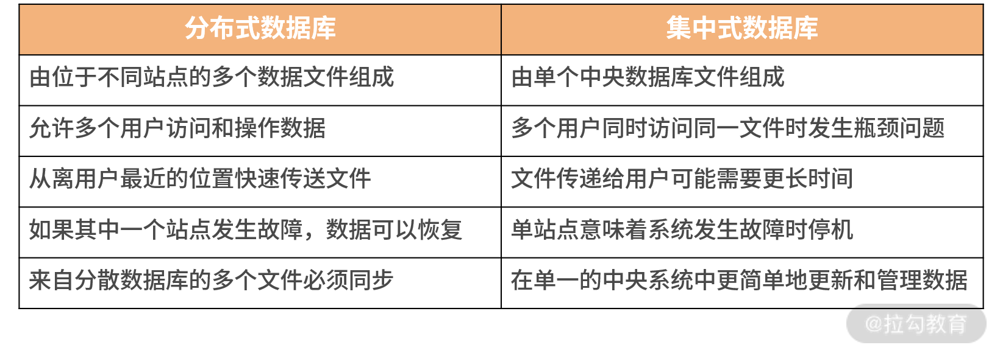
从表中，我们可以总结出分布式数据库的核心——数据分片、数据同步。
1. 数据分片
该特性是分布式数据库的技术创新。它可以突破中心化数据库单机的容量限制，从而将数据分散到多节点，以更灵活、高效的方式来处理数据。这是分布式理论带给数据库的一份礼物。
分片方式包括两种。
- 水平分片：按行进行数据分割，数据被切割为一个个数据组，分散到不同节点上。
- 垂直分片：按列进行数据切割，一个数据表的模式（Schema）被切割为多个小的模式。
2. 数据同步
它是分布式数据库的底线。由于数据库理论传统上是建立在单机数据库基础上，而引入分布式理论后，一致性原则被打破。因此需要引入数据库同步技术来帮助数据库恢复一致性。
简而言之，就是使分布式数据库用起来像“正常的数据库”。所以数据同步背后的推动力，就是人们对数据“一致性”的追求。这两个概念相辅相成，互相作用。
当然分布式数据库还有其他特点，但把握住以上两点，已经足够我们理解它了。下面我将从这两个特性出发，探求技术史上分布式数据库的发展脉络。我会以互联网、云计算等较新的时间节点来进行断代划分，毕竟我们的核心还是着眼现在、面向未来。
商业数据库
互联网浪潮之前的数据库，特别是前大数据时代。谈到分布式数据库绕不开的就是 Oracle RAC。

Oracle RAC 是典型的大型商业解决方案，且为软硬件一体化解决方案。我在早年入职国内顶级电信行业解决方案公司的时候，就被其强大的性能所震撼，又为它高昂的价格所深深折服。它是那个时代数据库性能的标杆和极限，是完美方案与商业成就的体现。
我们试着用上面谈到的两个特性来简单分析一下 RAC：它确实是做到了数据分片与同步。每一层都是离散化的，特别在底层存储使用了 ASM 镜像存储技术，使其看起来像一块完整的大磁盘。
这样做的好处是实现了极致的使用体验，即使用单例数据库与 RAC 集群数据库，在使用上没有明显的区别。它的分布式存储层提供了完整的磁盘功能，使其对应用透明，从而达到扩展性与其他性能之间的平衡。甚至在应对特定规模的数据下，其经济性又有不错的表现。
这种分布式数据库设计被称为“共享存储架构”（share disk architecture）。它既是 RAC 强大的关键，又是其“阿喀琉斯之踵”，DBA 坊间流传的 8 节点的最大集群限制可以被认为是 RAC 的极限规模。
该规模在当时的环境下是完全够用的，但是随着互联网的崛起，一场轰轰烈烈的“运动”将会打破 Oracle RAC 的不败金身。
大数据
我们知道 Oracle、DB2 等商业数据库均为 OLTP 与 OLAP 融合数据库。而首先在分布式道路上寻求突破的是 OLAP 领域。在 2000 年伊始，以 Hadoop 为代表的大数据库技术凭借其“无共享”（share nothing）的技术体系，开始向以 Oracle 为代表的关系型数据库发起冲击。

这是一次水平扩展与垂直扩展，通用经济设备与专用昂贵服务，开源与商业这几组概念的首次大规模碰撞。拉开了真正意义上分布式数据库的帷幕。
当然从一般的观点出发，Hadoop 一类的大数据处理平台不应称为数据库。但是从前面我们归纳的两点特性看，它们又确实非常满足。因此我们可以将它们归纳为早期面向商业分析场景的分布式数据库。从此 OLAP 型数据库开始了自己独立演化的道路。
除了 Hadoop，另一种被称为 MPP（大规模并行处理）类型的数据库在此段时间也经历了高速的发展。MPP 数据库的架构图如下：

我们可以看到这种数据库与大数据常用的 Hadoop 在架构层面上非常类似，但理念不同。简而言之，它是对 SMP（对称多处理器结构）、NUMA（非一致性存储访问结构）这类硬件体系的创新，采用 shared-nothing 架构，通过网络将多个 SMP 节点互联，使它们协同工作。
MPP 数据库的特点是首先支持 PB 级的数据处理，同时支持比较丰富的 SQL 分析查询语句。同时，该领域是商业产品的战场，其中不仅仅包含独立厂商，如 Teradata，还包含一些巨头玩家，如 HP 的 Vertica、EMC 的 Greenplum 等。
大数据技术的发展使 OLAP 分析型数据库，从原来的关系型数据库之中独立出来，形成了完整的发展分支路径。而随着互联网浪潮的发展，OLTP 领域迎来了发展的机遇。
互联网化
国内数据库领域进入互联网时代第一个重大事件就是“去 IOE”。

其中尤以“去 Oracle 数据库”产生的影响深远。十年前，阿里巴巴喊出的这个口号深深影响了国内数据库领域，这里我们不去探讨其中细节，也不去评价它正面或负面的影响。但从对于分布式数据库的影响来说，它至少带来两种观念的转变。
- 应用成为核心：去 O 后，开源数据库需要配合数据库中间件（proxy）去使用，但这种组合无法实现传统商业库提供的一些关键功能，如丰富的 SQL 支持和 ACID 级别的事务。因此应用软件需要进行精心设计，从而保障与新数据库平台的配合。应用架构设计变得非常关键，整个技术架构开始脱离那种具有调侃意味的“面向数据库” 编程，转而变为以应用系统为核心。
- 弱一致性理念普及：虽然强一致性仍然需求旺盛，但人们慢慢接受了特定场景下可以尝试弱一致性来解决系统的吞吐量问题。而这带来了另外一个益处，一线研发与设计人员开始认真考虑业务需要什么样的一致性，而不是简单依靠数据库提供的特性。
以上两个观念都是在破除了对于 Oracle 的迷信后产生的，它们本身是正面的，但是如果没有这场运动，其想要在普通用户之中普及确实有很大困难。而这两种观念也为日后分布式数据库，特别是国产分布式数据的发展带来了积极的影响。
而与此同期，全球范围内又上演着 NoSQL 化浪潮，它与国内去 IOE 运动一起推动着数据库朝着横向分布的方向一路狂奔。关于 NoSQL 的内容，将会在下一讲详细介绍。
与上一部分中提到的大数据技术类似，随着互联网的发展，去 IOE 运动将 OLTP 型数据库从原来的关系型数据库之中分离出来，但这里需要注意的是，这种分离并不是从基础上构建一个完整的数据库，而是融合了旧有的开源型数据库，同时结合先进的分布式技术，共同构造了一种融合性的“准”数据库。它是面向具体的应用场景的，所以阉割掉了传统的 OLTP 数据库的一些特性，甚至是一些关键的特性，如子查询与 ACID 事务等。
而 NoSQL 数据库的重点是支持非结构化数据，如互联网索引，GIS 地理数据和时空数据等。这种数据在传统上会使用关系型数据库存储，但需要将此种数据强行转换为关系型结构，不仅设计烦琐，而且使用效率也比较低下。故NoSQL 数据库被认为是对整个数据库领域的补充，从而人们意识到数据库不应该仅仅支持一种数据模式。
随着分布式数据库的发展，一种从基础上全新设计的分布式 OLTP 数据库变得越来越重要，而云计算更是为这种数据库注入新的灵魂，两者的结合将会给分布式数据库带来美妙的化学反应。
云原生是未来
从上文可以看到人们真正具有广泛认知的分布式数据库，即 OLTP 型交易式分布式数据库，依然是分布式数据库领域一个缺失的片段，且是一个重要的片段。一个真正的 OLTP 数据库应该具备什么特点呢？
实际上人们需要的是它既具有一个单机的关系型数据库的特性，又有分布式的分片与同步特性。 DistributedSQL 和 NewSQL 正是为了这个目的而生的 。它们至少具有如下两点引人注目的特性：
- SQL 的完整支持
- 可靠的分布式事务。
典型的代表有 Spanner、NuoDB、TiDB 和 Oceanbase 等。并且本课程会重点围绕 DistributedSQL 的关键特性展开研究，这些特性是现代分布式数据库的基石。这里我就不占用过多篇幅介绍了，在 02 | SQL vs NoSQL：一次搞清楚五花八门的各种“SQL”中我们再一起详细学习。
与此同时，随着云计算的纵向深入发展，分布式数据库又迎来新的革命浪潮——云原生数据库。
首先，由于云服务天生的“超卖”特性，造成其采购成本较低，从而使终端用户尝试分布式数据库的门槛大大降低。
其次，来自云服务厂商的支撑人员可以与用户可以进行深度的合作，形成了高效的反馈机制。这种反馈机制促使云原生的分布式数据库有机会进行快速的迭代，从而可以积极响应客户的需求。
这就是云原生带给分布式数据库的变化，它是通过生态系统的优化完成了对传统商业数据库的超越。以下来自 DB-Engines 的分析数据说明了未来的数据库市场属于分布式数据库，属于云原生数据库。

随着分布式数据库的发展，我们又迎来了新的一次融合：那就是 OLTP 与 OLAP 将再一次合并为 HTAP（融合交易分析处理）数据库。
该趋势的产生主要来源于云原生 OLTP 型分布式数据库的日趋成熟。同时由于整个行业的发展，客户与厂商对于实时分析型数据库的需求越来越旺盛，但传统上大数据技术包括开源与 MPP 类数据库，强调的是离线分析。
如果要进行秒级的数据处理，那么必须将交易数据与分析数据尽可能地贴近，并减少非实时 ELT 的引入，这就促使了 OLTP 与 OLAP 融合为 HTAP。下图就是阿里云 PolarDB 的 HTAP 架构。

总结
用《三国演义》的第一句话来说：“天下大势，分久必合，合久必分。”而我们观察到的分布式数据库，乃至数据库本身的发展正暗合了这句话。
分布式数据库发展就是一个由合到分，再到合的过程：
- 早期的关系型商业数据库的分布式能力可以满足大部分用户的场景，因此产生了如 Oracle 等几种巨无霸数据库产品；
- OLAP 领域首先寻求突破，演化出了大数据技术与 MPP 类型数据库，提供功能更强的数据分析能力；
- 去 IOE 引入数据库中间件，并结合应用平台与开源单机数据库形成新一代解决方案，让商业关系型数据库走下神坛，NoSQL 数据库更进一步打破了关系型数据库唯我独尊的江湖地位；
- 新一代分布式 OLTP 数据库正式完成了分布式领域对数据库核心特性的完整支持，它代表了分布式数据库从此走向了成熟，也表明了 OLAP 与 OLTP 分布式场景下，分别在各自领域内取得了胜利；
- HTAP 和多模式数据处理的引入，再一次将 OLAP 与 OLTP 融合，从而将分布式数据库推向如传统商业关系型数据库数十年前那般的盛况，而其产生的影响要比后者更为深远。
我们回顾历史，目的是更好地掌握未来。在本课程中，我们将详细分析现代分布式数据库、OLTP 型数据库的关键技术、使用场景和应用案例。使你在未来可以更好地评估和使用分布式数据库。
而分布式数据库的历史同时体现了实用主义的特色，其演化是需求与技术博弈的结果，而不是精心设计出来的。我们的课程也会体现出实用主义的特点，让你学以致用，学有所获。
02 SQL vs NoSQL：一次搞清楚五花八门的“SQL”
这一讲我们开始讨论有关 SQL 及其变种的前世今生，以及它与分布式数据库之间的纷繁复杂关系。
21 世纪的开发者往往要面对一种窘境：需在众多的数据库中艰难地做出选择。他们其实也想如老一辈技术人一样闭着眼睛去选择 Oracle 或者 DB2，因为它们曾经被证明是“不会出错”的选择，即无论选择哪款数据库，都不会丢工作。
而时至今日，时代变了，我们如果不了解各种数据库内部的机理，即使选择大厂的成熟产品也有可能掉进“坑”里。因此，选择合适的数据库就成了日常工作中一项必备技能。
当然数据库的分类有各种各样的维度，在过去的 20 年中有一种分类法被广泛采用：SQL（关系型数据库）VS NoSQL（其他类型数据库）。随着时间的推移，又出现了一些新物种，如 NewSQL、DistributedSQL 等。从它们的名字上看，这些数据库都与 SQL 产生了羁绊，那么 SQL 在其中承担了什么角色呢？
这里先抛出结论：SQL 是所有数据库的“核心”，即使它们声称对 SQL 说“No”。怎么理解呢？现在让我们沿着数据库发展的脉络来解释并逐步验证这个观点。
SQL 的黄金年代
先抛出一个简单的定义：SQL 数据库就是一种支持 SQL 的数据库，它是一种用于查询和处理关系数据库中“数据”的特定领域语言。关系数据库中的“关系”是指由 IBM 研究人员 E.F. Codd 在 20 世纪 70 年代初设计的数据管理的“关系模型”，并在 System R 及后续许多数据库系统中得到了普及。
那么 SQL 与关系型数据库有哪些优缺点呢？
先来谈谈优点：由于 Schema（模式）的预定义，数据库获得存储相对紧凑，从而导致其性能较为优异；之后就是经典的 ACID 给业务带来了可控性，而基于标准化 SQL 的数据访问模式给企业级应用带来了更多的红利，因为“标准即是生产力”。
它的缺点是：对前期设计要求高，因为后期修改 Schema 往往需要停机，没有考虑分布式场景，在扩展性和可用性层面缺乏支持；而分布式是 21 世纪应用必备的技能，请你留意此处，这就是区分新老数据库的重要切入点。
自 20 世纪 70 年代末以来，SQL 和关系型数据库一直是行业标准。大多数流行的“企业”系统都是 System R 的直接后代，继承了 SQL 作为其查询语言。SQL 的意义是提供了一套结构化数据的访问标准，它是脱离特定厂商束缚的客观标准，虽然不同数据库都会对标准 SQL 进行扩充和改造，但是最为常用的部分还是与最初设计保持一致。
随着 SQL 的发展，它被广泛使用在各种商业、开源数据库中。长期的生产实践与其本身优秀的设计产生了美妙的化学作用，从而生发出如下两个现象。
1. 群众基础优秀
由于 SQL 被广泛地使用，于是形成了一类可以熟练使用该技术的人群，该人群数量众多，其中不仅包含了研发技术人员，一些其他行业人员，如财务、物流和数据分析等，都以掌握 SQL 作为从业必备技能。所以说 SQL 的群众基础相当深厚。
2. 应用生态丰富
SQL 客观上并不利于程序开发，这是由于应用系统需要编写大量的原始代码与 SQL 系统进行交互，从而形成了一个客观上存在的数据访问层，该层增加了系统复杂度，对维护造成了负面的影响。
针对这个问题，应用系统内往往会引入抽象层来屏蔽其数据访问层的复杂度，从而使业务研发人员能够更轻松地使用 SQL 类数据库。从数据访问框架、ORM，到数据库中间件，一大波该类技术组件频频进入人们的视野，从而构建出了极为丰富的生态。
以上两点相互作用，共同打造了 SQL 与关系型数据库的黄金年代。在其巅峰时期，几乎所有类型的应用都需要与数据库打交道，甚至有人戏称这是“面向数据库编程”。但随着互联网的悄然崛起，情况慢慢地发生了变化。
NoSQL 破土而出
NoSQL 数据库大概是在 2009 年被开发出来的，是一种非关系型数据库。它专注于分布式场景下数据存储与查询，不需要预先定义 Schema，一般不支持连接且易于扩展。开发人员通常被允许频繁地在线更改 Schema，从而更容易地实现业务需求。
NoSQL 数据库因具有庞大的数据存储需求，常被用于大数据和 C 端互联网应用。例如，Twitter、Facebook、阿里和腾讯这样的公司，每天都利用其收集几十甚至上百 TB 的用户数据。
那么 NoSQL 数据库与 SQL 数据库的区别表现在哪呢？如下表所示。
表 NoSQL 数据库与 SQL 数据库的区别
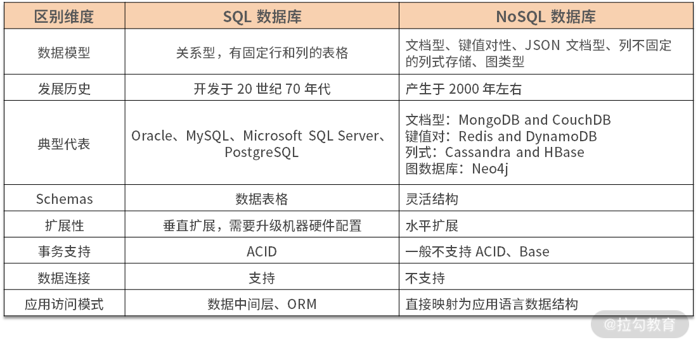
NoSQL 除了不是 SQL 外，另外一个广泛的解释是 Not Only SQL。其背后暗含：我们没有 SQL，但是有一项比 SQL 要吸引人的东西，那就是——分布式。
在 NoSQL 出现之前的商业数据库，多节点部署的难度很大且费用高昂，甚至需要使用专用的硬件。虽然理论上规模应该足够大，但其实不然。而后出现的 NoSQL，大部分在设计层面天然考虑了使用廉价硬件进行系统扩容，同时由于其放弃了 ACID，性能才没有随着系统规模的扩大而衰减。
当然 NoSQL 的缺点也比较明显：由于缺乏 ACID，应用时需要非常小心地处理数据一致性问题；同时由于其数据模型往往只针对特定场景，一般不能使用一种 NoSQL 数据库来完成整个应用的构建，导致设计层面的复杂和维护的困难。
当我们审视 NoSQL 数据库时，会发现一个有趣的事实：它们之间最大的共同点，其实是没有任何共同点，而“No”就成为它们的最大公约数。从而我有理由怀疑，NoSQL 本质上是一个为了做宣传而创造的概念——它将一种新鲜的事物打造为一个反传统、反权威的形象，从而达到宣传的目的。
由此，NoSQL 的概念大于其内涵，虽然招致了很多批评的声音，但其意义却也是重大的。我认为主要体现在以下 3 个方面。
第一，打破了固有思维
有许多应用其实使用数据库是非常烦琐的，比如互联网场景下的社交应用，它要处理大量非结构化场景。该场景其实可以使用关系型数据库实现，但却需要设计高扩展性的应用来支撑该场景，同时需要有丰富经验的 DBA 来配合，基于这两点才能使系统稳定运行。
使用 MongoDB 可以很好地解决场景问题，简化研发，在一定数量级的访问下，可以实现平滑的系统扩展，减少运维压力。这给当年资金有限的互联网公司，特别是创业公司带来了新的选择。同时也能看到，并不是任何系统都要面向关系型数据库、面向 SQL。可以说 NoSQL 一举打破了整个行业的桎梏，让技术回归人性，回归了本心。
第二，打破了大公司的垄断
当时整个行业都在诸如 Oracle、IBM 等大型数据库服务商的控制之下，大部分商业场景都可以看到它们的身影。而新兴互联网行业以解决实际问题出发，心中的束缚少，步子可以迈得大。通过反复试错和迭代，NoSQL 门类中有多种数据库得到了验证，从而在真实的商业场景中发挥了作用。
这种趋势在一定程度上打破了垄断，使行业生机勃勃，更加倒逼大型数据库服务商加快了前进的脚步，从而获得一个多赢的结果。
第三，将分布式引入到数据库中
从那之后，分布式数据库的概念开始流行，甚至整个技术圈都无法回避“分布式数据”这一理念，进而催生出我们后续要介绍的 NewSQL 等类型。
NoSQL 作为一个宣传手段，向我们揭示了那一代创新数据存储的窘境：它们其实与 SQL 相去甚远，但不得不与其发生深刻的关系。从而证明了我一开始给出的论断：NoSQL 数据库们的唯一核心与共同点其实就是 SQL。
但近十年来，随着 NoSQL 的发展，其中部分数据库已经摆脱了 SQL 的阴影，如 Elasticsearch、Redis 等。谈到它们的时候，人们往往不会将其与 NoSQL 概念联系起来，显然，它们已经得到了时间的认可，最终为自己正名。
NewSQL 的进击
人们常常批评 NoSQL“为了倒掉洗澡水，却把婴儿一起冲进了下水道”（Throwing the baby out with the bathwater）。SQL 类数据库应用如此广泛，为了分布式特性就需要抛弃 SQL 显得非常得不偿失。
因此一些组织开始构建基于 SQL 的分布式数据库，从表面看它们都支持 SQL，但是根据实现方式，其发展出了两种路线：NewSQL 和 Distributed SQL。这一讲我先介绍前者。
NewSQL 是基于 NoSQL 模式构建的分布式数据库，它通常采用现有的 SQL 类关系型数据库为底层存储或自研引擎，并在此之上加入分布式系统，从而对终端用户屏蔽了分布式管理的细节。Citus 和 Vitess 就是此种类型的两个著名案例，在后面的第四个模块中，我会具体介绍。
此外，一些数据库中间件，如 MyCAT、Apache ShardingShpere，由于其完全暴露了底层的关系型数据库，因此不能将它们称为 NewSQL 数据库，不过可以作为此种模式的另类代表。
大概在 2010 年年初的时候，人们尝试构建此类数据库。而后，451 ResEArch 的 Matthew Aslett 于 2011 年创造了“NewSQL”这个术语，用于对这些新的“可扩展” SQL 数据库进行定义。
NewSQL 数据库一般有两种。
第一种是在一个个独立运行的 SQL 数据库实例之上提供了一个自动数据分片管理层。例如，Vitess 使用了 MySQL，而 Citus 使用 PostgreSQL。由于每个独立实例仍然是单机关系型数据库，因此一些关键特性无法得到完美支持，如本地故障转移 / 修复，以及跨越分片的分布式事务等。更糟糕的是，甚至一些单机数据库的功能也无法进行使用，如 Vitess 只能支持子查询的一个“子集”。
第二种包括 NuoDB、VoltDB 和 Clustrix 等，它们构建了新的分布式存储引擎，虽然仍有或多或少的功能阉割，但可以给用户一个完整的 SQL 数据库体验。
NewSQL 数据库最初构建的目的是解决分布式场景下，写入 SQL 数据库所面临的挑战。它可以使用多个传统单机 SQL 数据库作为其存储节点，在此基础上构建起可扩展的分布式数据库。在它产生的年代，云技术还处于起步阶段，因此这类 NewSQL 得到了一定程度的发展。但是，随着多可用区、多区域和多云的云部署成为现代应用程序的标准，这些数据库也开始力不从心起来。
与此同时，像 Google Spanner 和 TiDB 这样的 Distributed SQL 数据库的崛起，NewSQL 数据库的地位就受到了进一步挑战。因为后者是被设计利用云组价的特性，并适应在不可靠基础设施中稳定运行的“云原生”数据库。
可以看到 NewSQL 回归了以 SQL 为核心的状态，这次回归展示了 SQL 的魅力，即可以穿越数十年时光。但这次革命是不彻底的，我们可以看到传统单机数据库的身影，还有对 SQL 功能的阉割。而革命者本身也往往来自应用领域，而不是专业数据库机构。所以NewSQL 更像是用户侧的狂欢，它可以解决一类问题，但并不完备，需要小心地评估和使用。
Distributed SQL 的崛起
上面我也提到过 Distributed SQL 数据库，此种使用的是特殊的底层存储引擎，来构建水平可伸缩的数据库。它在 NewSQL 的功能基础上，往往提供的是“地理分布”功能，用户可以跨可用区、区域甚至在全球范围内分布数据。CockroachDB、Google的Spanner、OceanBase 和 PingCAP 的 TiDB 就是很好的例子，这些引擎通常比 NewSQL 的目标更高。
但需要强调的是，NoSQL 和 NewSQL 是建立在一个假设上，即构建一个完备功能的分布式数据库代价是高昂的，需要进行某种妥协。而商用 Distributed SQL 数据库的目标恰恰是要以合理的成本构建这样一种数据库，可以看到它们的理念是针锋相对的。
相比于典型的 NewSQL，一个 Distributed SQL 数据库看起来更像一个完整的解决方案。它的功能一般包括可扩展性、数据一致性、高可用性、地理级分布和 SQL 支持，它们并非一些工具的组合。一个合格的 Distributed SQL 数据库应该不需要额外工具的支持，就可以实现上述功能。
此外，由于 Distributed SQL 天然适合与云计算相结合，因此一些云原生数据库也可以归为此门类，如 AWS 的 Aurora 等。不论是云还是非云数据库，Distributed SQL 几乎都是商业数据库，而 NewSQL 由于其工具的本质，其中开源类型的数据库占有不小的比重。
这一方面反映了 Distributed SQL 非常有潜力且具有商业价值，同时也从一个侧面说明了它才是黄金年代 SQL 关系型数据库最为正统的传承者。
新一代的 SQL 已经冉冉升起，它来自旧时代。但除了 SQL 这一个面孔外，其内部依然发生了翻天覆地的改变。不过这正是 SQL 的魅力：穿越时光，依然为数据库的核心，也是数据库经典理论为数不多的遗产。
总结
这一讲到这里就告一段落了，我们一起回顾了数据库与 SQL 的前世今生，了解了当今分布式数据库与 SQL 之间的关系，搞清楚了这些纷繁复杂的 SQL 蕴含的意义。
SQL 是在 20 世纪 70 年代被关系型数据库所引入，在随后的几十年里一直被看作是数据库标准的查询接口，从而形成了深厚的群众基础。而后 2000 年左右出现的 NoSQL 潮流，本质上与 SQL 没有实际联系，但讽刺的是，它们不得不依靠 SQL 这个“对手”来定义自身的价值，从而使我们感叹 SQL 那顽强的生命力。又随着近十年 NewSQL 和 Distributed SQL 的发展，SQL 回归本源，从旧时代的霸主摇身变为新时代的先锋。
SQL 在这漫长的时间内当然不是一成不变的，甚至可以说当今 SQL 已经与最早版本天差地别。但其核心理念未有异化，所以我们还是称其为 SQL 而不是给它新的名字。
那么通过这一讲的回顾，我们确信，任何成功的数据库都需要与 SQL 产生天然联系，而 SQL 美妙的设计，也将帮助新一代的分布式数据库乘风破浪。
教学相长
学习完这一讲的内容，我希望你思考这样一个问题：MySQL 8.0 引入的 InnoDB Cluster 应该被归类到哪种类型的分布式数据库呢？
03 数据分片：如何存储超大规模的数据？
前两讲我们介绍了分布式数据库，以及各种 SQL 的发展脉络，那么从这一讲开始，我们就正式进入分布式数据库核心原理的学习。
随着互联网时代，特别是移动互联网的到来，形形色色的企业都在将自己的系统平台快速升级迭代，以此作为向互联网转型的一部分。
在此背景下，这类应用平台所依赖的数据库系统就需要支持突然增加的巨量交易数据，但是在这种情况下单体的数据库往往会很快过载，而用于扩展数据库最常见的技术手段就是“数据分片”。
因此这一讲，我将为你介绍什么是分片，以及如何将其用于扩展数据库。同时，我还会回顾常见分片架构的优缺点，以使用 TiDB 为例，和你探讨如何在分布式数据库中实现分片。
数据分片概论
分片是将大数据表分解为较小的表（称为分片）的过程，这些分片分布在多个数据库集群节点上。分片本质上可以被看作传统数据库中的分区表，是一种水平扩展手段。每个分片上包含原有总数据集的一个子集，从而可以将总负载分散在各个分区之上。
数据分片的方式一般有两种。
- 水平分片：在不同的数据库节点中存储同一表的不同行。
- 垂直分片：在不同的数据库节点中存储表不同的表列。
如下图所示，水平和垂直这两个概念来自原关系型数据库表模式的可视化直观视图。

图 1 可视化直观视图
分片理念其实来源于经济学的边际收益理论：如果投资持续增加，但收益的增幅开始下降时，被称为边际收益递减状态。而刚好要开始下降的那个点被称为边际平衡点。
该理论应用在数据库计算能力上往往被表述为：如果数据库处理能力遇到瓶颈，最简单的方式是持续提高系统性能，如更换更强劲的 CPU、更大内存等，这种模式被称为垂直扩展。当持续增加资源以提升数据库能力时，垂直扩展有其自身的限制，最终达到边际平衡，收益开始递减。
而此时，对表进行水平分片意味着可以引入更多的计算能力处理数据与交易。从而，将边际递减扭转为边际递增状态。同时，通过持续地平衡所有节点上的处理负载和数据量，分片模式还可以获得 1+1>2 的效果，即集群平均处理能力大于单节点处理能力。
这样就使得规模较小、价格便宜的服务器组成的水平扩展集群，可能比维护一台大型商用数据库服务器更具成本效益。这也是第一讲中“去 IOE 运动”的核心技术背景。
除了解决扩展难题，分片还可以缓解计划外停机，大大降低系统 RTO（目标恢复时间）。即使在计划内的停机期，如果没有分片的加持，数据库整体上还是处于不可访问状态的，这就无法满足业务上对 SLO（目标服务级别）的要求。
如果分片可以如我们所希望的那样正常工作，它就可以确保系统的高可用。即使数据库集群部分节点发生故障，只要其他节点在其中运行，数据库整体仍可对外提供服务。当然，这还需要复制与一致性服务的保证，我们会在之后课时中进一步探讨。
总而言之，分片可以增加数据库集群的总容量并加快处理速度，同时可以使用比垂直扩展更低的成本提供更高的可用性。
分片算法
分片算法一般指代水平分片所需要的算法。经过多年的演化，其已经在大型系统中得到了广泛的实践。下面我将介绍两种最常见的水平分片算法，并简要介绍一些其他的分片算法优化思路。
哈希分片
哈希分片，首先需要获取分片键，然后根据特定的哈希算法计算它的哈希值，最后使用哈希值确定数据应被放置在哪个分片中。数据库一般对所有数据使用统一的哈希算法（例如 ketama），以促成哈希函数在服务器之间均匀地分配数据，从而降低了数据不均衡所带来的热点风险。通过这种方法，数据不太可能放在同一分片上，从而使数据被随机分散开。
这种算法非常适合随机读写的场景，能够很好地分散系统负载，但弊端是不利于范围扫描查询操作。下图是这一算法的工作原理。
图 2 哈希分片
范围分片
范围分片根据数据值或键空间的范围对数据进行划分，相邻的分片键更有可能落入相同的分片上。每行数据不像哈希分片那样需要进行转换，实际上它们只是简单地被分类到不同的分片上。下图是范围分片的工作原理。

图 3 范围分片
范围分片需要选择合适的分片键，这些分片键需要尽量不包含重复数值，也就是其候选数值尽可能地离散。同时数据不要单调递增或递减，否则，数据不能很好地在集群中离散，从而造成热点。
范围分片非常适合进行范围查找，但是其随机读写性能偏弱。
融合算法
这时我们应该意识到，以上介绍的哈希和范围的分片算法并不是非此即彼，二选一的。相反，我们可以灵活地组合它们。
例如，我们可以建立一个多级分片策略，该策略在最上层使用哈希算法，而在每个基于哈希的分片单元中，数据将按顺序存储。
这个算法相对比较简单且灵活，下面我们再说一个地理位置算法。
地理位置算法
该算法一般用于 NewSQL 数据库，提供全球范围内分布数据的能力。
在基于地理位置的分片算法中，数据被映射到特定的分片，而这些分片又被映射到特定区域以及这些区域中的节点。
然后在给定区域内，使用哈希或范围分片对数据进行分片。例如，在美国、中国和日本的 3 个区域中运行的集群可以依靠 User 表的 Country_Code 列，将特定用户（User）所在的数据行映射到符合位置就近规则的区域中。
那么以上就是几种典型的分片算法，下面我们接着讨论如何将分片算法应用到实际的场景中。
手动分片 vs 自动分片
手动分片，顾名思义，就是设置静态规则来将数据根据分片算法分散到数据库节点。这一般是由于用户使用的数据库不支持自动的分片，如 MySQL、Oracle 等。这个问题可以在应用层面上做数据分片来解决，也可以使用简单的数据库中间件或 Proxy 来设置静态的分片规则来解决。
手动分片的缺点是数据分布不均匀。数据分布不均可能导致数据库负载极其不平衡，从而使其中一些节点过载，而另一些节点访问量较少。
因此，最好避免在部分节点上存储过多数据，否则会造成这些节点成为访问热点，进而导致其运行速度降低，甚至使服务器崩溃。此外，当整体数据集过小时，也会导致这个问题，因为集群中只有部分节点才有数据。
这在开发和测试环境中是可以接受的，但在生产环境中是不可以接受的。因为数据分布不均，热点以及将数据存储在太少的分片上，都会导致数据库集群内的节点计算资源耗尽，造成系统不稳定。
但如果精心设计，且数据分布变化不大，采用手动分片也是一个较为简单、维护成本低廉的方案。
而使用自动分片意味着计算节点与分片算法可以相互配合，从而使数据库进行弹性伸缩。
使用基于范围的分片很容易实现自动分片：只需拆分或合并每个分片。
假设现在有一个范围为 [1，100）的分片，我们想要将它分裂为两个范围，先选择 50 作为切分点；然后将该区域分为 [1，50）和 [50，100）之后，将两个区域移动到两台不同的数据库节点中，从而使系统负载达到平衡。
基于范围的分片可能会带来读取和写入热点，我们可以通过拆分和移动分片消除这些热点。
而使用基于哈希的分片的系统实现自动分片代价很高昂。我们现在使用上面图 1 中的例子来说明。
当前系统有 4 个节点，然后添加一个新的数据库节点。在哈希函数中，“ n”从 4 更改为 5，这会导致较大的系统抖动。尽管你可以使用像 Ketama 这样的一致性哈希算法来尽可能减少系统抖动，但数据迁移与再平衡操作还是必须要有的。
这是因为在应用哈希函数后，数据是随机分布的，并且调整散列算法肯定会更改大多数数据的分布情况。
自动分片是分布式数据库的主流功能，所有主要的分布式数据库，甚至数据库中间件都在尝试自动分片。下面我将结合几个案例来说明。
分片算法案例
数据分片是数据库中间件的核心功能，且该领域开源项目较多。我这里以 Apache ShardingShpere 的分片内容为例，向你介绍分片算法的相关实践案例。
分片键生成
ShardingShpere 首先提供了分布式的主键生成，这是生成分片键的关键。由于分布式数据库内一般由多个数据库节点参与，因此基于数据库实例的主键生成并不适合分布式场景。
常用的算法有 UUID 和 Snowfalke 两种无状态生成算法。
UUID 是最简单的方式，但是生成效率不高，且数据离散度一般。因此目前生产环境中会采用后一种算法。下图就是用该算法生成的分片键的结构。

图 4 分片键结构
其中有效部分有三个。
- 时间戳：算法类似 UNIX 时间的表示形式，它是从一个特定时间开始到当前时间点之间的毫秒数，本案例中该算法可以使用近 70 年。
- 工作节点 ID：保证每个独立工作的数据库节点不会产生重复的数据。
- 访问序列：在同一个进程、同一个毫秒内，保证产生的 ID 不重复。
灵活的分片算法
为了保证分片计算的灵活性，ShardingShpere 提供了标准分片算法和一些工具，帮助用户实现个性化算法。
- PreciseShardingAlgorithm 配合哈希函数使用，可以实现哈希分片。RangeShardingAlogrithm 可以实现范围分片。
- 使用 ComplexShardingStrategy 可以使用多个分片键来实现融合分片算法。
- 有的时候，数据表的分片模式不是完全一致。对于一些特别的分片模式，可以使用 HintShardingStrategy 在运行态制定特殊的路由规则，而不必使用统一的分片配置。
- 如果用户希望实现诸如地理位置算法等特殊的分片算法，可以自定义分片策略。使用 inline 表达式或 Java 代码进行编写，前者基于配置不需要编译，适合简单的个性化分片计算；后者可以实现更加复杂的计算，但需要编译打包的过程。
用户通过以上多种分片工具，可以灵活和统一地制定数据库分片策略。
自动分片
ShardingShpere 提供了 Sharding-Scale 来支持数据库节点弹性伸缩，该功能就是其对自动分片的支持。下图是自动分片功能展示图，可以看到经过 Sharding-Scale 的特性伸缩，原有的两个数据库扩充为三个。

图 5 自动分片功能展示
自动分片包含下图所示的四个过程。
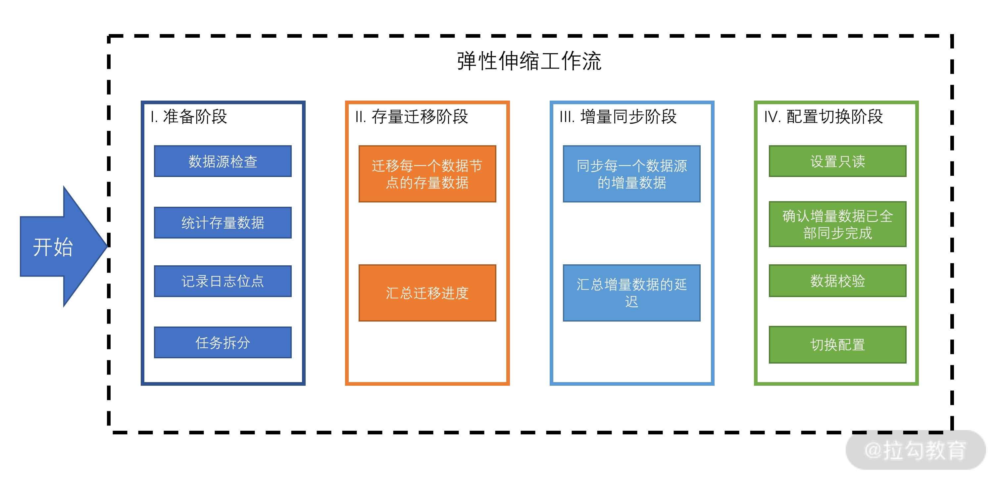
图 6 自动分片过程
从图 6 中可以看到，通过该工作量，ShardingShpere 可以支持复杂的基于哈希的自动分片。同时我们也应该看到，没有专业和自动化的弹性扩缩容工具，想要实现自动化分片是非常困难的。
以上就是分片算法的实际案例，使用的是经典的水平分片模式。而目前水平和垂直分片有进一步合并的趋势，下面要介绍的 TiDB 正代表着这种融合趋势。
垂直与水平分片融合案例
TiDB 就是一个垂直与水平分片融合的典型案例，同时该方案也是 HATP 融合方案。
其中水平扩展依赖于底层的 TiKV，如下图所示。

图 7 TiKV
TiKV 使用范围分片的模式，数据被分配到 Region 组里面。一个分组保持三个副本，这保证了高可用性（相关内容会在“05 | 一致性与 CAP 模型：为什么需要分布式一致性？”中详细介绍）。当 Region 变大后，会被拆分，新分裂的 Region 也会产生多个副本。
TiDB 的水平扩展依赖于 TiFlash，如下图所示。

图 8 TiFlash
从图 8 中可以看到 TiFlash 是 TiKV 的列扩展插件，数据异步从 TiKV 里面复制到 TiFlash，而后进行列转换，其中要使用 MVCC 技术来保证数据的一致性。
上文所述的 Region 会增加一个新的异步副本，而后该副本进行了数据切分，并以列模式组合到 TiFlash 中，从而达到了水平和垂直扩展在同一个数据库的融合。这是两种数据库引擎的融合。
以上的融合为 TiDB 带来的益处主要体现在查询层面，特别对特定列做聚合查询的效率很高。TiDB 可以很智能地切换以上两种分片引擎，从而达到最优的查询效率。
总结
这一讲到这里就告一段落了。先是详细介绍了分片的原理，以及多种常用的分片技术；而后分析了手动分片与自动分片的区别，要知道数据分片的未来是属于自动分片的。
最后，我通过两个著名的开源项目介绍了分片技术是如何应用到分布式数据库中的。其中 TiDB 所展示的 HATP 融合两个分片模式的技术路线，可以被看作是未来分片模式发展的趋势。
教学相长
这里给你留一个课后思考题。
设计一个复杂分片算法，可以在一段时间内扩展节点不必迁移数据，同时保证不产生热点。
04 数据复制：如何保证数据在分布式场景下的高可用？
我们上一讲介绍了分片技术，它主要的目的是提高数据容量和性能。这一讲，我们将介绍分布式数据库另外一个重要根基：复制。
复制的主要目的是在几个不同的数据库节点上保留相同数据的副本，从而提供一种数据冗余。这份冗余的数据可以提高数据查询性能，而更重要的是保证数据库的可用性。
本讲主要介绍两种复制模式：单主复制与多主复制，并通过 MySQL 复制技术的演化来进行相应的展示。
现在让我们开始学习单主复制，其中不仅介绍了该技术本身，也涉及了一些复制领域的话题，如复制延迟、高可用和复制方式等。
单主复制
单主复制，也称主从复制。写入主节点的数据都需要复制到从节点，即存储数据库副本的节点。当客户要写入数据库时，他们必须将请求发送给主节点，而后主节点将这些数据转换为复制日志或修改数据流发送给其所有从节点。从使用者的角度来看，从节点都是只读的。下图就是经典的主从复制架构。
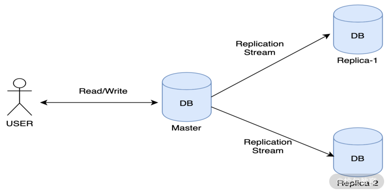
这种模式是最早发展起来的复制模式，不仅被广泛应用在传统数据库中，如 PostgreSQL、MySQL、Oracle、SQL Server；它也被广泛应用在一些分布式数据库中，如 MongoDB、RethinkDB 和 Redis 等。
那么接下来，我们就从复制同步模式、复制延迟、复制与高可用性以及复制方式几个方面来具体说说这个概念。
复制同步模式
复制是一个非常耗费时间而且很难预测完成情况的操作。虽然其受影响的因素众多，但一个复制操作是同步发生还是异步发生，被认为是极为重要的影响因素，可以从以下三点来分析。
- 同步复制：如果由于从库已崩溃，存在网络故障或其他原因而没有响应，则主库也无法写入该数据。
- 半同步复制：其中部分从库进行同步复制，而其他从库进行异步复制。也就是，如果其中一个从库同步确认，主库可以写入该数据。
- 异步复制：不管从库的复制情况如何，主库可以写入该数据。而此时，如果主库失效，那么还未同步到从库的数据就会丢失。
可以看到不同的同步模式是在性能和一致性上做平衡，三种模式对应不同场景，并没有好坏差异。用户需要根据自己的业务场景来设置不同的同步模式。
复制延迟
如果我们想提高数据库的查询能力，最简便的方式是向数据库集群内添加足够多的从节点。这些从节点都是只读节点，故查询请求可以很好地在这些节点分散开。
但是如果使用同步复制，每次写入都需要同步所有从节点，会造成一部分从节点已经有数据，但是主节点还没写入数据。而异步复制的问题是从节点的数据可能不是最新的。
以上这些问题被称为“复制延迟”，在一般的材料中，我们会听到诸如“写后读”“读单增”等名词来解决复制延迟。但是这些概念其实是数据一致性模型的范畴。我将会在下一讲中深入介绍它们。
复制与高可用性
高可用（High availablity）是一个 IT 术语，指系统无中断地执行其功能的能力。系统中的任何节点都可能由于各种出其不意的故障而造成计划外停机；同时为了要维护系统，我们也需要一些计划内的停机。采用主从模式的数据库，可以防止单一节点挂起导致的可用性降低的问题。
系统可用程度一般使用小数点后面多个 9 的形式，如下表所示。
| 可用性 | 年故障时间 |
|---|---|
| 99.9999% | 32秒 |
| 99.999% | 5分15秒 |
| 99.99% | 52分34秒 |
| 99.9% | 8小时46分 |
| 99% | 3天15小时36分 |
一般的生产系统都会至少有两个 9 的保证，追求三个 9。想要做到 4 个 9 是非常最具有挑战的。
在主从模式下，为了支撑高可用，就需要进行故障处理。我这里总结了两种可能的故障及其处理方案。
- 从节点故障。由于每个节点都复制了从主库那里收到的数据更改日志，因此它知道在发生故障之前已处理的最后一个事务，由此可以凭借此信息从主节点或其他从节点那里恢复自己的数据。
- 主节点故障。在这种情况下，需要在从节点中选择一个成为新的主节点，此过程称为故障转移，可以手动或自动触发。其典型过程为：第一步根据超时时间确定主节点离线；第二步选择新的主节点，这里注意新的主节点通常应该与旧的主节点数据最为接近；第三步是重置系统，让它成为新的主节点。
复制方式
为了灵活并高效地复制数据，下面我介绍几种常用的复制方式。
1. 基于语句的复制
主库记录它所执行的每个写请求（一般以 SQL 语句形式保存），每个从库解析并执行该语句，就像从客户端收到该语句一样。但这种复制会有一些潜在问题，如语句使用了获取当前时间的函数，复制后会在不同数据节点上产生不同的值。
另外如自增列、触发器、存储过程和函数都可能在复制后产生意想不到的问题。但可以通过预处理规避这些问题。使用该复制方式的分布式数据库有 VoltDB、Calvin。
2. 日志（WAL）同步
WAL 是一组字节序列，其中包含对数据库的所有写操作。它的内容是一组低级操作，如向磁盘的某个页面的某个数据块写入一段二进制数据，主库通过网络将这样的数据发送给从库。
这种方法避免了上面提到的语句中部分操作复制后产生的一些副作用，但要求主从的数据库引擎完全一致，最好版本也要一致。如果要升级从库版本，那么就需要计划外停机。PostgreSQL 和 Oracle 中使用了此方法。
3. 行复制
它由一系列记录组成，这些记录描述了以行的粒度对数据库表进行的写操作。它与特定存储引擎解耦，并且第三方应用可以很容易解析其数据格式。
4. ETL 工具
该功能一般是最灵活的方式。用户可以根据自己的业务来设计复制的范围和机制，同时在复制过程中还可以进行如过滤、转换和压缩等操作。但性能一般较低，故适合处理子数据集的场景。
关于单主复制就介绍到这里，下面我们再来说说多主复制。
多主复制
也称为主主复制。数据库集群内存在多个对等的主节点，它们可以同时接受写入。每个主节点同时充当主节点的从节点。
多主节点的架构模式最早来源于 DistributedSQL 这一类多数据中心，跨地域的分布式数据库。在这样的物理空间相距甚远，有多个数据中心参与的集群中，每个数据中心内都有一个主节点。而在每个数据中心的内部，却是采用常规的单主复制模式。
这么设计该类系统的目的在于以下几点。
- 获得更好的写入性能：使数据可以就近写入。
- 数据中心级别的高可用：每个数据中心可以独立于其他数据中心继续运行。
- 更好的数据访问性能：用户可以访问到距离他最近的数据中心。
但是，此方法的最大缺点是，存在一种可能性，即两个不同的主节点同时修改相同的数据。这其实是非常危险的操作，应尽可能避免。这就需要下一讲要介绍的一致性模型，配合冲突解决机制来规避。
还有一种情况是处理客户端离线操作的一致性问题。为了提高性能，数据库客户端往往会缓存一定的写入操作，而后批量发送给服务端。这种情况非常类似于大家使用协作办公文档工具的场景。在这种情况下，每个客户端都可以被看作是具有主节点属性的本地数据库，并且多个客户端之间存在一种异步的多主节点复制的过程。这就需要数据库可以协调写操作，并处理可能的数据冲突。
典型的多主复制产品有 MySQL 的 Tungsten Replicator、PostgreSQL 的 BDR 和 Oracle 的 GoldenGate。
目前，大部分 NewSQL、DistributedSQL 的分布式数据库都支持多主复制，但是大部分是用 Paxos 或 Raft 等协议来构建复制组，保证写入线性一致或顺序一致性；同时传统数据库如 MySQL 的 MGR 方案也是使用类似的方式，可以看到该方案是多主复制的发展方向。关于一致性协议的内容我们将在后续课程中详细介绍。
历史的发展潮流是从单主复制向多主复制演变的，以上我们抽象地总结了复制的发展模式和需要关注的技术点。下面我将通过 MySQL 高可用技术的发展路径，向你直观地展示数据库复制技术的发展脉络。
MySQL 复制技术的发展
MySQL 由于其单机机能的限制，很早就发展了数据复制技术以提高性能。同时依赖该技术，MySQL 可用性也得到了长足的发展。
截止到现在，该技术经历了四代的发展。第一代为传统复制，使用 MHA（Master High Available）架构；第二代是基于 GTID 的复制，即 GTID+Binlog server 的模式；第三代为增强半同步复制，GTID+增强半同步复制；第四代为 MySQL 原生高可用，即 MySQL InnoDB Cluster。
数据库的复制技术需要考虑两个因素：数据一致 RPO 和业务连续性 RTO。所以，就像前面的内容所强调的，复制与一致性是一对如影随形的概念，本讲内容聚焦于复制，但是会提到关于一致性相关的概念。
下面我就从第一代复制技术开始说起。
MHA 复制控制
下图是 MHA 架构图。
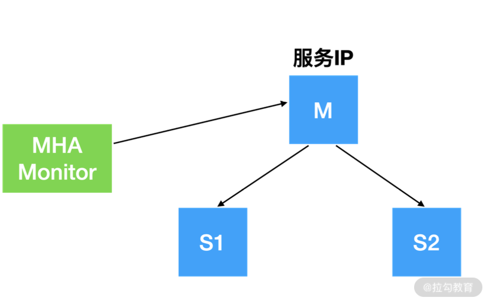
MHA 作为第一代复制架构，有如下适用场景：
- MySQL 的版本≤5.5，这一点说明它很古老；
- 只用于异步复制且一主多从环境；
- 基于传统复制的高可用。
MHA 尽最大能力做数据补偿，但并不保证一定可以成功；它也尽最大努力在实现 RPO，有 RTO 概念支持。可以看到它只是一个辅助工具，本身的架构与机制对 RPO 和 RTO 没有任何保障。
那么由此可知，它会存在如下几个问题：
- 它的 GTID 模型强依赖 binlog server，但是对于 5.7 后的 binlog 却不能识别，同时对并行复制支持不好；
- 服务 IP 切换依赖自行编写的脚本，也可以与 DNS 结合，其运维效果取决于运维人员的经验；
- 运维上需要做 SSH 信任、切换判断等人工操作，总体上处于“刀耕火种”的状态，自动化程度较低，维护难度高；
- 现在项目基本无维护。
从上述问题中可以看到，MHA 作为第一代复制架构，功能相对原始，但已经为复制技术的发展开辟了道路，特别是对 GTID 和 binlog 的应用。但如果不是维护比较古老的 MySQL 集群，目前已经不推荐采用它了。
半同步复制
这是第二代复制技术，它与第一代技术的差别表现在以下几点。
- binlog 使用半同步，而第一代是异步同步。它保障了数据安全，一般至少要同步两个节点，保证数据的 RPO。
- 同时保留异步复制，保障了复制性能。并通过监控复制的延迟，保证了 RTO。
- 引入配置中心，如 consul。对外提供健康的 MySQL 服务。
- 这一代开始需要支持跨 IDC 复制。需要引入监控 Monitor，配合 consul 注册中心。多个 IDC 中 Monitor 组成分布式监控，把健康的 MySQL 注册到 consul 中，同时将从库复制延迟情况也同步到 consul 中。
下图就是带有 consul 注册中心与监控模块的半同步复制架构图。

第二代复制技术也有自身的一些缺陷。
- 存在幻读的情况。当事务同步到从库但没有 ACK 时，主库发生宕机；此时主库没有该事务，而从库有。
- MySQL 5.6 本身半同步 ACK 确认在 dump_thread 中，dump_thread 存在 IO 瓶颈问题。
基于此，第三代复制技术诞生。
增强半同步复制
这一代需要 MySQL 是 5.7 以后的版本。有一些典型的框架来支持该技术，如 MySQL Replication Manager、GitHub-orchestrator 和国内青云开源的 Xenon 等。
这一代复制技术采用的是增强半同步。首先主从的复制都是用独立的线程来运行；其次主库采用 binlog group commit，也就是组提交来提供数据库的写入性能；而从库采用并行复制，它是基于事务的，通过数据参数调整线程数量来提高性能。这样主库可以并行，从库也可以并行。
这一代技术体系强依赖于增强半同步，利用半同步保证 RPO，对于 RTO，则取决于复制延迟。
下面我们用 Xenon 来举例说明，请看下图（图片来自官网）。

从图中可以看到。每个节点上都有一个独立的 agent，这些 agent 利用 raft 构建一致性集群，利用 GTID 做索引选举主节点；而后主节点对外提供写服务，从节点提供读服务。
当主节点发生故障后，agent 会通过 ping 发现该故障。由于 GTID 和增强半同步的加持，从节点与主节点数据是一致的，因此很容易将从节点提升为主节点。
第三代技术也有自身的缺点，如增强半同步中存在幽灵事务。这是由于数据写入 binlog 后，主库掉电。由于故障恢复流程需要从 binlog 中恢复，那么这份数据就在主库。但是如果它没有被同步到从库，就会造成从库不能切换为主库，只能去尝试恢复原崩溃的主库。
MySQL 组复制
组复制是 MySQL 提供的新一代高可用技术的重要组成。其搭配 MySQL Router 或 Proxy，可以实现原生的高可用。
从这一代开始，MySQL 支持多主复制，同时保留单主复制的功能。其单主高可用的原理与第三代技术类似，这里我们不做过多分析了。
现在说一下它的多主模式，原理是使用 MySQL Router 作为数据路由层，来控制读写分离。而后组内部使用 Paxos 算法构建一致性写入。
它与第三代复制技术中使用的一致性算法的作用不同。三代中我们只使用该算法来进行选主操作，数据的写入并不包含在其中；而组复制的多主技术需要 Paxos 算法深度参与，并去决定每一次数据的写入，解决写入冲突。
组复制有如下几个优点。
- 高可用分片：数据库节点动态添加和移除。分片实现写扩展，每个分片是一个复制组。可以结合上一讲中对于 TiDB 的介绍，原理类似。
- 自动化故障检测与容错：如果一个节点无法响应，组内大多数成员认为该节点已不正常，则自动隔离。
- 方案完整：前面介绍的方案都需要 MySQL 去搭配一系列第三方解决方案；而组复制是原生的完整方案，不需要第三方组件接入。
当然，组复制同样也有一些限制。主要集中在需要使用较新的特性，一些功能在多组复制中不支持，还有运维人员经验缺乏等。
相信随着 MySQL 的发展，将会有越来越多的系统迁移到组复制中，多主模式也会逐步去替代单主模式。
总结
这一讲内容就介绍到这里了。我们深入介绍了复制技术在分布式数据库中的作用；探讨了单主和多主两种复制技术；而后通过 MySQL 复制技术的发展路径来介绍了复制技术的应用案例。
如我在上面所描述的，复制往往需要与一致性放在一起讨论。本讲聚焦于复制，下一讲我们将详细探讨一致性问题，包括 CAP 理论与一致性模型，并带你研究它与复制的结合。
教学相长
这里给你留一个思考题：我们常听到一种叫作“无主复制”的技术，它与我们这一讲介绍的两种复制技术有什么异同？
05 一致性与 CAP 模型：为什么需要分布式一致性？
上一讲我们讨论了复制的相关内容，其中有部分知识点提到了“一致性”的概念。那么这一讲我们就来聊聊 CAP 理论和一致性的相关内容。我将重点聚焦于一致性模型，因为它是复制一致性和分布式事务的理论基础。
在开始课程之前，我们先讨论一下：分布式数据库，乃至于一般的分布式系统所谈论的一致性到底是什么？
一致性是高可用的必备条件
在现实世界中，分布式数据库的节点并不总是处于活动状态且相互能够通信的。但是，以上这些故障不应该影响数据库的可用性。换言之，从用户的角度来看，整个系统必须像没有遭到任何故障一样继续运行。系统高可用性是分布式数据库一个极其重要的特性，甚至在软件工程中，我们始终致力于实现高可用性，并尽量减少停机时间。
为了使系统高度可用，系统需要被设计成允许一个或多个节点的崩溃或不可访问。为此，我们需要引入如上一讲所说的复制技术，其核心就是使用多个冗余的副本来提高系统的可用性。但是，一旦添加了这些副本，我们将面临使多个数据副本保持同步的问题，并且遭遇故障后如何恢复系统的问题。
这就是 MySQL 复制发展历程所引入的 RPO 概念，也就是系统不仅仅要可用，而且数据还需要一致。所以高可用必须要尽可能满足业务连续性和数据一致性这两个指标。
而我们马上要介绍的 CAP 理论会告诉我们还有第三个因素——网络分区会对可用性产生影响。它会告诉我们可用性和一致性在网络分区下是不能同时满足的。
CAP 理论与注意事项
首先，可用性是用于衡量系统能成功处理每个请求并作出响应的能力。可用性的定义是用户可以感知到的系统整体响应情况。但在实践中，我们希望组成系统的各个组件都可以保持可用性。
其次，我们希望每个操作都保持一致性。一致性在此定义为原子一致性或线性化一致性。线性一致可以理解为：分布式系统内，对所有相同副本上的操作历史可以被看作一个日志，且它们在日志中操作的顺序都是相同的。线性化简化了系统可能状态的计算过程，并使分布式系统看起来像在单台计算机上运行一样。
最后，我们希望在容忍网络分区的同时实现一致性和可用性。网络是十分不稳定的，它经常会分为多个互相独立的子网络。在这些子网中，节点间无法相互通信。在这些被分区的节点之间发送的某些消息，将无法到达它的目的地。
那么总结一下，可用性要求任何无故障的节点都可以提供服务，而一致性要求结果需要线性一致。埃里克·布鲁尔（Eric Brewer）提出的 CAP 理论讨论了一致性、可用性和分区容错之间的抉择。
其中提到了，异步系统是无法满足可用性要求的，并且在存在网络分区的情况下，我们无法实现同时保证可用性和一致性的系统。不过我们可以构建出，在尽最大努力保证可用性的同时，也保证强一致性的系统；或者在尽最大努力保证一致性的同时，也保证可用性的系统。
这里提到的“最大努力”意味着，如果一切正常，系统可以提供该特性的保证，但是在网络分区的情况下，允许削弱和违反这个保证。换句话说，CAP 描述了一种组合性选择，也就是要有取舍。从 CAP 理论的定义，我们可以拥有以下几种系统。
- CP 系统：一致且容忍分区的系统。更倾向于减少服务时间，而不是将不一致的数据提供出去。一些面向交易场景构建的 NewSQL 数据库倾向于这种策略，如 TiDB、阿里云 PolarDB、AWS Aurora 等。但是它们会生成自己的 A，也就是可用性很高。
- AP 系统：可用且具有分区容忍性的系统。它放宽了一致性要求，并允许在请求期间提供可能不一致的值。一般是列式存储，NoSQL 数据库会倾向于 AP，如 Apache Cassandra。但是它们会通过不同级别的一致性模式调整来提供高一致性方案。
CP 系统的场景实现思路是需要引入共识算法，需要大多数节点参与进来，才能保证一致性。如果要始终保持一致，那么在网络分区的情况下，部分节点可能不可用。
而 AP 系统只要一个副本就能启动，数据库会始终接受写入和读取服务。它可能最终会丢失数据或产生不一致的结果。这里可以使用客户端模式或 Session 模型，来提供一致性的解决方案。
使用 CAP 理论时需要注意一些限制条件。
CAP 讨论的是网络分区，而不是节点崩溃或任何其他类型的故障。这意味着网络分区后的节点都可能接受请求，从而产生不一致的现象。但是崩溃的节点将完全不受响应，不会产生上述的不一致问题。也就是说，分区后的节点并不是都会面临不一致的问题。而与之相对的，网络分区并不能包含真实场景中的所有故障。
CAP 意味着即使所有节点都在运行中，我们也可能会遇到一致性问题，这是因为它们之间存在连接性问题。CAP 理论常常用三角形表示，就好像我们可以任意匹配三个参数一样。然而，尽管我们可以调整可用性和一致性，但分区容忍性是我们无法实际放弃的。
如果我们选择了 CA 而放弃了 P，那么当发生分区现象时，为了保证 C，系统需要禁止写入。也就是，当有写入请求时，系统不可用。这与 A 冲突了，因为 A 要求系统是可用的。因此，分布式系统理论上不可能选择 CA 架构，只能选择 CP 或者 AP 架构。
如下图所示，其实 CA 类系统是不存在的，这里你需要特别注意。

图 1 CAP 理论
CAP 中的可用性也不同于上述的高可用性，CAP 定义对请求的延迟没有任何限制。此外，与 CAP 相反，数据库的高可用性并不需要每个在线节点都可以提供服务。
CAP 里面的 C 代表线性一致，除了它以外，还有其他的一致模式，我们现在来具体介绍一下。
一致性模型
一致性模型是分布式系统的经典内容，也是入门分布式数据库的重要知识点。但很少有人知道，其实一致性模型来源于单机理论中的共享内存。
从用户的角度看，分布式数据库就像具有共享存储的单机数据库一样，节点间的通信和消息传递被隐藏到了数据库内部，这会使用户产生“分布式数据库是一种共享内存”的错觉。一个支持读取和写入操作的单个存储单元通常称为寄存器，我们可以把代表分布式数据库的共享存储看作是一组这样的寄存器。
每个读写寄存器的操作被抽象为“调用”和“完成”两个动作。如果“调用”发生后，但在“完成”之前该操作崩溃了，我们将操作定义为失败。如果一个操作的调用和完成事件都在另一个操作被调用之前发生，我们说这个操作在另一个操作之前，并且这两个操作是顺序的；否则，我们说它们是并发的。
如下图所示，a）是顺序操作，b）和 c）是并发操作。

图 2 顺序操作&并发操作
多个读取或写入操作可以同时访问一个寄存器。对寄存器的读写操作不是瞬间完成的，需要一些时间，即调用和完成两个动作之间的时间。由不同进程执行的并发读/写操作不是串行的，根据寄存器在操作重叠时的行为，它们的顺序可能不同，并且可能产生不同的结果。
当我们讨论数据库一致性时，可以从两个维度来区别。
- 滞后性。它是数据改变的时刻与其副本接收到数据的时刻。这是上一讲所介绍的复制延迟场景，一般被归类为“客户端一致性”范畴。我们将在“15 | 再谈一致性：除了 CAP 之外的一致性模型还有哪些”中进一步讨论。
- 顺序性。讨论的是各种操作在系统所有副本上执行的顺序状态。这是本讲一致性模型所讨论的重点。
现在我们对顺序性再做进一步的探讨。
当面对一系列读写操作时，作为人类，我们对它们的执行顺序是有一个主观判断的。甚至，对于一个单机数据而言，这些操作的顺序也是可以确定的。但是，在分布式系统中做出这种判断就不是那么容易了，因为很难知道什么时候确切地发生了什么，并且很难在整个集群中立刻同步这些操作。
为了推理操作顺序并指出真正的结果，我们必须定义一致性模型来保障顺序性。
我们怎么来理解模型中“保障”的含义呢？它是将一致性模型视为用户与数据库之间的一种约定，每个数据库副本如何做才能满足这种顺序保障？并且用户在读取和写入数据时期望得到什么？也就是说，即使数据是被并发读取和写入的，用户也可以获得某种可预测的结果。
需要注意，我们将要讨论单一对象和单一操作一致性模型，但现实的数据库事务是多步操作的，我们将在下面“事务与一致性”部分进一步讨论。
下面我按照顺序性的保障由强到弱来介绍一致性模型。
严格一致性
严格的一致性类似于不存在复制过程：任何节点的任何写入都可立即用于所有节点的后续读取。它涉及全局时钟的概念，如果任何节点在时刻 T1 处写入新数据 A，则所有节点在 T2 时刻（T2 满足 T2>T1），都应该读到新写入的 A。
不幸的是，这只是理论模型，现实中无法实现。因为各种物理限制使分布式数据不可能一瞬间去同步这种变化。
线性一致性
线性一致性是最严格的且可实现的单对象单操作一致性模型。在这种模型下，写入的值在调用和完成之间的某个时间点可以被其他节点读取出来。且所有节点读到数据都是原子的，即不会读到数据转换的过程和中间未完成的状态。
线性一致需要满足的是，新写入的数据一旦被读取出来，那么所有后续的读操作应该能读取到这个数据。也就是说，一旦一个读取操作读到了一个值，那么后续所有读取操作都会读到这个数值或至少是“最近”的一个值。
上面的定义来自早期的论文，我将里面的关键点提炼一下，如下所示。
- 需要有全局时钟，来实现所谓的“最近”。因为没有全局一致的时间，两个独立进程没有相同的“最近”概念。
- 任何一次读取都能读到这个“最近”的值。
下面我通过一个例子来说明线性一致性。
现在有三个节点，其中一个共享变量 x 执行写操作，而第三个节点会读取到如下数值。
- 第一个读操作可以返回 1、2 或空（初始值，两个写操作之前的状态），因为两个写操作仍在进行中；第一次读取可以在两次写入之前，第一次写入与第二次写入之间，以及两次写入之后。
- 由于第一次写操作已完成，但第二次写操作尚未完成，因此第二次读操作只能返回 1 和 2。
- 第三次读只能返回 2，因为第二次写是在第一次写之后进行的。
下图正是现象一致性的直观展示。

图 3 线性一致性
线性一致性的代价是很高昂的，甚至 CPU 都不会使用线性一致性。有并发编程经验的朋友一定知道 CAS 操作，该操作可以实现操作的线性化，是高性能并发编程的关键，它就是通过编程手段来模拟线性一致。
一个比较常见的误区是，使用一致性算法可以实现线性一致，如 Paxos 和 Raft 等。但实际是不行的，以 Raft 为例，算法只是保证了复制 Log 的线性一致，而没有描述 Log 是如何写入最终的状态机的，这就暗含状态机本身不是线性一致的。
这里推荐你阅读 TiKV 关于线性一致的实现细节，由于线性一致性价比不高，这里就不进行赘述了，我们接下来说说顺序一致性和因果一致性。
顺序一致性
由于线性一致的代价高昂，因此人们想到，既然全局时钟导致严格一致性很难实现，那么顺序一致性就是放弃了全局时钟的约束，改为分布式逻辑时钟实现。顺序一致性是指所有的进程以相同的顺序看到所有的修改。读操作未必能及时得到此前其他进程对同一数据的写更新，但是每个进程读到的该数据的不同值的顺序是一致的。
下图展示了 P1、P2 写入两个值后，P3 和 P4 是如何读取的。以真实的时间衡量，1 应该是在 2 之前被写入，但是在顺序一致性下，1 是可以被排在 2 之后的。同时，尽管 P3 已经读取值 1，P4 仍然可以读取 2。但是需要注意的是这两种组合：1->2 和 2 ->1，P3 和 P4 从它们中选择一个，并保持一致。下图正是展示了它们读取顺序的一种可能：2->1。

图 4 顺序一致性
我们使用下图来进一步区分线性一致和顺序一致。

图 5 区分线性一致和顺序一致
其中，图 a 满足了顺序一致性，但是不满足线性一致性。原因在于，从全局时钟的观点来看，P2 进程对变量 x 的读操作在 P1 进程对变量 x 的写操作之后，然而读出来的却是旧的数据。但是这个图却是满足顺序一致性，因为两个进程 P1 和 P2 的一致性并没有冲突。
图 b 满足线性一致性，因为每个读操作都读到了该变量的最新写的结果，同时两个进程看到的操作顺序与全局时钟的顺序一样。
图 c 不满足顺序一致性，因为从进程 P1 的角度看，它对变量 y 的读操作返回了结果 0。那么就是说，P1 进程的对变量 y 的读操作在 P2 进程对变量 y 的写操作之前，x 变量也如此。因此这个顺序不满足顺序一致性。
在实践中，你就可以使用上文提到的一致性算法来实现顺序一致。这些算法可以保证操作在每个节点都是按照一样的顺序被执行的，所以它们能保证顺序一致。
如 Google Megastore 这类系统都是使用 Paxos 算法实现了顺序一致性。也就是说在 Megastore 内部，如果有一个数据更新，所有节点都会同步更新，且操作在各个节点上执行顺序是一致的。
因果一致性
相比于顺序一致性，因果一致性的要求会低一些：它仅要求有因果关系的操作顺序是一致的，没有因果关系的操作顺序是随机的。
因果相关的要求有如下几点。
- 本地顺序：本进程中，事件执行的顺序即为本地因果顺序。
- 异地顺序：如果读操作返回的是写操作的值，那么该写操作在顺序上一定在读操作之前。
- 闭包传递：和时钟向量里面定义的一样，如果 a->b、b->c，那么肯定也有 a->c。
那么，为什么需要因果关系，以及没有因果关系的写法如何传播？下图中，进程 P1 和 P2 进行的写操作没有因果关系，也就是最终一致性。这些操作的结果可能会在不同时间，以乱序方式传播到读取端。进程 P3 在看到 2 之前将看到值 1，而 P4 将先看到 2，然后看到 1。

图 6 因果一致性
而下图显示进程 P1 和 P2 进行因果相关的写操作并按其逻辑顺序传播到 P3 和 P4。因果写入除了写入数据外，还需要附加一个逻辑时钟，用这个时钟保证两个写入是有因果关系的。这可以防止我们遇到上面那张图所示的情况。你可以在两个图中比较一下 P3 和 P4 的历史记录。

图 7 逻辑时钟
而实现这个逻辑时钟的一种主要方式就是向量时钟。向量时钟算法利用了向量这种数据结构，将全局各个进程的逻辑时间戳广播给所有进程，每个进程发送事件时都会将当前进程已知的所有进程时间写入到一个向量中，而后进行传播。
因果一致性典型案例就是 COPS 系统，它是基于 causal+一致性模型的 KV 数据库。它定义了 dependencies，操作了实现因果一致性。这对业务实现分布式数据因果关系很有帮助。另外在亚马逊 Dynamo 基于向量时钟，也实现了因果一致性。
事务隔离级别与一致性模型
现在我们谈论了一致性模型，但是它与数据库领域之中的事务有什么区别呢？我先说结论：有关系但又没有关系。
怎么理解呢？我先来论证它们之间的无关性。
ACID 和 CAP 中的“C”是都是一致性，但是它们的内涵完全不同。其中 ADI 都是数据库提供的能力保障，但是 C（一致性）却不是，它是业务层面的一种逻辑约束。
以转账这个最为经典的例子而言，甲有 100 元 RMB，乙有 0 元 RMB，现在甲要转给乙 30 元。那么转账前后，甲有 70，乙有 30，合起来还是 100。显然，这只是业务层规定的逻辑约束而已。
而对于 CAP 这里的 C 上文已经有了明确说明，即线性一致性。它表示副本读取数据的即时性，也就是对“何时”能读到“正确”的数据的保证。越是即时，说明系统整体上读取数据是一致的。
那么它们之间的联系如何呢？其实就是事务的隔离性与一致模型有关联。
如果把上面线性一致的例子看作多个并行事务，你会发现它们是没有隔离性的。因为在开始和完成之间任意一点都会读取到这份数据，原因是一致性模型关心的是单一操作，而事务是由一组操作组成的。
现在我们看另外一个例子，这是展示事务缺乏一致性后所导致的问题。
图 8 事务与一致性
其中三个事务满足隔离性。可以看到 T2 读取到了 T1 入的值。但是这个系统缺乏一致性保障，造成 T3 可以读取到早于 T2 读取值之前的值，这就会造成应用的潜在 Bug。
那现在给出结论：事务隔离是描述并行事务之间的行为，而一致性是描述非并行事务之间的行为。其实广义的事务隔离应该是经典隔离理论与一致性模型的一种混合。
比如，我们会在一些文献中看到如“one-copy serializability”“strong snapshot isolation”，等等。前者其实是 serializability 隔离级别加上顺序一致，后者是 snapshot 隔离级别加上线性一致。
所以对分布式数据库来说，原始的隔离级别并没有舍弃，而是引入了一致性模型后，扩宽数据库隔离级别的内涵。
总结
本讲内容较长，不过已经精炼很多了。我们从高可用性入手，介绍了 CAP 理论对于分布式模型评估的影响；而后重点介绍了一致性模型，这是本讲的核心，用来帮助你评估分布式数据库的特性。
最后我介绍了事务隔离级别与一致性模型之间的区别与联系，帮助你认清分布式数据库下的事务隔离级别的概念。
06 实践：设计一个最简单的分布式数据库
本讲是一节知识回顾与拓展实践课。经过前几讲的学习，相信你已经对分布式数据库有了直观的认识，今天我们来总结一下模块一的学习成果，并通过一个实际案例来加深印象，我也会就前几讲中同学们提出的典型问题进行答疑。
分布式数据库核心总结
现在让我们来总结一下第一模块的核心知识。
这个模块介绍了什么是分布式数据库。主要从历史发展的角度，介绍了传统数据库的分布式模式、大数据背景下的分析型分布式数据库，而后以去 IOE 为背景聊到了数据库中间件，以及开源数据库模式，接着说到了 DistributedSQL 与 NewSQL，最后介绍了 HTAP 融合型数据库，它被看作是分布式数据库未来发展的趋势。
通过第 1 讲的学习，我想你不仅了解了分布式数据库由合到分、再到合的发展历史，更重要的收获是知道了到底什么是分布式数据库，这个最根本的问题。
从广义上讲，在不同主机或容器上运行的数据库就是分布式数据库，故我们能看到其丰富的产品列表。但是，正是由于其产品线过于丰富，我不可能面面俱到地去讲解所有知识点。同时由于数据库在狭义上可以被理解为 OLTP 型交易类数据库，因此本课程更加聚焦于 DistributedSQL 与 NewSQL 的技术体系，也就是 OLTP 类分布式数据库。在后续的模块中我会着重介绍它们涉及的相关知识，这里给你一个预告。
同时，这一模块也点出了分片与同步两种特性是分布式数据库的重要特性。
我们还一起学习了关于 SQL 的历史沿革，了解了什么是 NoSQL。这部分主要是对一些历史性的概念进行的“拨乱反正”，说明了NoSQL 本身是一个营销概念。而后我们介绍了 NewSQL、DistributedSQL 的特点。如前所述，这其实才是本课程所要学习的重点。
SQL 的重要性如我介绍的那样，这使得它的受众非常广泛。如果数据库想要吸引更多的用户，想要在影响力上或在商业领域寻求突破，那 SQL 可以说是一个必然的特性。反之，如果是专业领域的分布式数据库，那么 SQL 就不如分片与同步这两个特性重要了。
在分片那一讲中，我们首先学习了分片的意义，它是分布式数据库提高数据容量的关键特性。我们学习了主要的分片算法，包括范围分片与哈希分片；也介绍了一些优化方法；最后用 Apache ShardingShpere 的例子来直观介绍了分片算法的应用，包含了分布式唯一 ID 的生成算法等相关内容。
数据分片是分布式数据库两个核心内容之一，但其概念是比较直观的。学习难度相比数据同步来讲不是很大。
我们会经常遇到一个问题：设计一套分库分片的结构，保证尽可能少地迁移数据库。其实这个需求本质上在分布式数据库语境下是毫无意义的，自动弹性的扩缩数据库节点应该是这种数据库必要特性。过分地使用分片算法来规避数据库迁移固然可以提高性能，但总归是一种不完整的技术方案，具有天然的缺陷。
模块一的最后我们学习了同步数据的概念。同步其实是复制+一致性两个概念的综合。这两个概念互相配合造就了分布式数据库数据同步多样的表现形式。其中，复制是它的前提与必要条件，也就是说，如果一份数据不需要复制，也就没有所谓一致性的概念，那么同步技术也就不存在了。
在同步那一讲中，最先进入我们视野的是异步复制，这类似于没有一致性的参与，是一种单纯的、最简单的复制方式。后面说的其他的同步、半同步等复合技术，多少都有一致性概念的参与。而除了复制模式以外，我们还需要关注诸如复制协议、复制方式等技术细节。最后我们用 MySQL 复制技术的发展历程，总结了多种复制技术的特点，并点明了以一致性算法为核心的强一致性复制技术是未来的发展方式。
接着我们介绍了一致性相关知识，这是模块一中最抽象的部分。因为 CAP 理论与一致性模型都是抽象化评估分布式数据库的工具。它们的好处之一就是可以是帮助我们快速评估数据库的一致性，比如一个数据库号称自己是线性一致的 CP 数据库，那么对于其特性，甚至大概的实现方式，我们就会心中有数了；另一个益处就是设计数据库时，你可以根据需要解决的问题，设计数据库一致性方面的特点。
CAP 理论首先要明确，其中的C 指的是一致性模型中最强的线性一致。正因为是线性一致这样的强一致，才不会同时满足 CAP 三个特性。同时要注意可用性和高可用性的区别，可用性是抽象评估概念，网络分区后，每个分区只有一个副本，只要它提供服务，我们就可以说它其实是可用的，而不能说它是高可用。最后我提到了世界上只有 CP 和 AP 两种数据库，因为 P，即网络分区是客观规律，无法排除，不会存在 CA 类数据库。
说完了 CAP 理论后，我介绍了一致性模型。它来源于共享内存设计，但其理论可以被分布式数据库乃至一般的分布式系统所借鉴。你需要知道，这部分介绍的三种一致性都是强一致性，其特点解决了复制部分提到的复制延迟，使用户不管从哪个节点写入或查询数据，看起来都是一致的。另外，这三种一致性又是数据一致，与其相对的还有客户端一致，这个我会在之后的分布式模块中具体介绍。
最后，作为数据库，一个重要的概念就是事务。它与一致性是什么关系呢？其实事务的 ACID 特性中，AID 是数据库提供的对于 C 的保证。其中 I，即隔离性才是事务的关键特性。而隔离性其实解决的是并行事务的问题，一致性模型研究是单对象、单操作的问题，解决的是非并行的事务之间的问题。故隔离性加上一致性模型才是分布式数据库事务特点的总和。
至此，我们总结了模块一主要的内容。那么学习了这些知识后，除了可以帮助你评估分布式数据库外，还有什么用呢？现在让我们来试着设计一个分布式数据库吧。
为什么要自己实现分布式数据库？
分布式数据库，特别是 NoSQL 和 NewSQL 数据库，是目前主要的发展方向。同时，这两种数据库的品种也极为丰富。其中很多都是针对特定场景服务的，比如 NoSQL 中 Elasticsearch 针对的是搜索场景，Redis 针对缓存场景。而 NewSQL 更是百花齐放，如国内的滴滴、字节跳动等企业，都针对自己的业务特点实现了 NewSQL 数据库。更不要说如 BAT、Google 这样的大厂，他们都有自己的 NewSQL 类数据库。
这背后的动力来源于内驱需求与外部环境，这两者共同叠加而产生了目前这种局面。
内驱需求是，随着某种特定业务的产生并伴随其使用规模的扩大，从数据库这种底层解决该问题的需求逐步强烈。因为从数据库层面可以保证写入和查询满足某种一致性特性，而分布式数据库天然的服务化特性，又给使用者带来极大便利，从而可以加速这类业务快速发展。
外部环境是，分布式数据库使用的技术逐步成熟化，且可选开源产品众多。早先构造数据库的一个难点是，几乎所有涉及的技术类别都需要从基础开始构建，比如 SQL 解析、分布式协议和存储引擎等。而目前，有众多的开源项目、丰富的技术路线可供挑选，这样就大大降低了构造分布式数据库的门槛。
以上两点互相作用，从而使现在很多组织和技术团队都开始去构建属于自己的分布式数据库。
设计分布式数据库案例
熟悉我的朋友可能知道，我另外一个身份是 Apache SkyWalking 的创始成员，它是一个开源的 APM 系统。其架构图可以在官网找到，如下所示。

可以看到其中的 Storage Option，也就是数据库层面可以有多种选择。除了单机内存版本的 H2 以外，其余生产级别的数据库均为分布式数据库。
选择多一方面证明了 SkyWalking 有很强的适应能力，但更重要的是目前业界没有一款数据库可以很好地满足其使用场景。
那么现在我们来尝试给它设计一个数据库。这里我简化了设计流程，只给出了需求分析与概念设计，目的是展示设计方式，帮助你更好地体会分布式数据库的关键点。
需求分析
我们先来介绍一下 SkyWalking 处理数据的特点。
由于 SkyWalking 的 APM 特性，其对写入有很高的诉求。不管是最早使用的 HBase，还是现在的主力存储 Elasticsearch，都对写入很友好。为了保证数据写入高速且一致，OAP 节点层已经将计算指标进行了分片，也就是同一个指标是在相同的节点计算出来的。另外，该应用还采用了批量写入的模式，即每 10 秒进行一些批量写入。
SkyWalking 在使用场景下可以被看成一个查询少写入多的系统，查询很少发生，可以容忍一定的查询延迟。可用性方面是允许牺牲一定的可用性来换取性能的，比如目前对 Elasticsearch 的副本数量建议为 0，也就是说不进行数据复制。
如果开启复制，一致性方面要求也比较低。因为对于最大的工作负载写入来说，几乎不在写入的时候进行数据查询。但是一些低负载操作需要保证一致性，比如写入监控结果，写入后需要马上能查询出来。
由于查询协议的数据结构是非关系型的，且查询种类不多，故不需要一定支持 SQL 语句。
以上围绕着第一模块的核心内容，分析了 SkyWalking 的数据库应该具备的特点。现在让我们来针对需求分析中提到的要点，来设计针对 SkyWalking 的分布式数据库。
概要设计
首先 OAP 节点实际上已经做过哈希分片，这样我们可以将数据库节点与 OAP 节点组成一对一，甚至多对一（二次哈希）的结构，保障一个指标只写入一个数据库节点，这样就避免了数据迁移的麻烦。甚至我们可以将数据库节点与 OAP 节点部署在一起，从而最大限度降低网络延迟，同时提高资源的利用率。
对于弹性扩缩容，由于 SkyWalking 可以容忍部分数据不可用，可以直接增加分片节点，而无须迁移数据。如果想要保证老数据可以查询，可以将扩容时间点做记录；而后老数据查询老节点，新数据查询新节点。由于 SkyWalking 所有数据都有生命周期，一旦节点上旧的数据被删除，缩容场景下，该节点也可以被安全移除。
虽然 SkyWalking 不强制要求可用性，但一些数据如果一旦遭遇故障，也会给使用者带来不好的体验。特别是对于类似一天内的平均响应时间，一旦某个节点故障，在没有副本的情况下，该指标的数据将会有非常大的偏差。
一旦开启数据复制，应该使用什么一致性呢？这个问题需要区分来看。对于大量写入的指标数据来说，弱一致是满足条件的。因为写入和读取是由不同的端点发起的，且写入可以认为是单对象单操作，故弱一致就满足条件。
但告警场景却不是这样，告警产生后会通知相关人员，他们希望能马上查询到数据。如果采用弱一致，很可能无法查询。这里我们不需要使用特别强的一致性，采用因果一致就可以满足需求。实现方式是，将写入告警产生的数据时间戳页传递给用户。用户查询的时候将时间戳发送给一个数据库节点，如果该节点没有该时间戳的数据，它会尝试请求其他节点去同步。
最后关于查询接口，由于不一定需要 SQL，故我们可以使用简单的 RESTful 风格的 API 去实现查询和写入。但为了写入高效，可以独立设计写入协议，采用高效的二进制长连接的协议风格。
案例总结
以上就是根据第一模块学习的知识并结合 SkyWalking 的需求特点，设计的针对该系统的分布式数据库。设计层面我只强调了关键设计要点，并未进行详细说明。而关于底层的存储引擎，相信你在学习完模块二之后，会有自己的答案。
通过这个案例，我们可以看到设计分布式数据库只要结合分片和同步两个特点，就可以大概勾画出一个分布式数据库的外貌。你可以自己在工作和学习中，尝试设计分布式数据库来解决具有一定共性的数据问题。
留言答疑
开课以来，我收到了大家积极的反馈，其中有些问题非常专业，让我很惊喜。这里首先非常感谢你对课程的喜爱，你的积极反馈就是我写下去的动力。
这里我总结了一些共性问题，为你解答。
第一，有人提出了名词概念第一次出现应该给出全称的问题。
这里先向你道歉，出于个人习惯，我脑海中会将自己比较熟悉的概念直接以缩写或别名输出。这确实对第一次接触该知识的同学不太友好。在以后的写作中，我会尽量避免该问题。
第二个比较集中的问题是关于 MySQL InnoDB Cluster 是不是分布式数据库。
我在文章中提到，分布式的基础定义非常宽泛。如果从它出发，那么 InnoDB Cluster 是分布式数据库。但是从我们说的两个特性来看，它并不具有分片的特点，严格来说它不是分布式数据库，更不要说它是 NewSQL。但是我们可以为其引入分片的功能，比如利用分库分表中间件，以 InnoDB Cluster 为基础去构建分布式数据库，即 NewSQL 数据库。
这里我要强调一下，你不需要陷入概念区分的陷阱里，这不是考试，但现实生活比考试要复杂。把握住关键特点，才可以以不变应万变。
好了，答疑就先到这里。最后再次感谢你的积极反馈，希望在下一个模块结束后也能看到你精彩的留言。
总结
本讲首先回顾了模块一的主要内容，帮助你将各个部分串联起来，形成完整的知识拼图。而后通过一个案例介绍了如何使用这些知识设计一个分布式数据库，将所学知识应用到实际工作和学习中。
07 概要：什么是存储引擎，为什么需要了解它？
经过第一个模块的学习，相信你已经知道了什么是分布式数据库，对分布式数据库的核心知识有了比较全面和深入的了解了。
这一讲是第二模块存储引擎的概要，主要目的是为你解释什么是存储引擎，以及它在分布式数据库中起到什么样的作用。
数据库的一个首要目标是可靠并高效地管理数据，以供人们使用。进而不同的应用可以使用相同的数据库来共享它们的数据。数据库的出现使人们放弃了为每个独立的应用开发数据存储的想法，同时，随着数据库广泛的使用，其处理能力飞速发展，演进出如现代的分布式数据库这般惊人的能力。
那么，为了支撑抽象的多种场景。一般的数据库都会采用多模块或多子系统的架构来构建数据库，从而方便数据库项目团队依据现实的场景来组合不同的子模块，进而构造出一众丰富的数据库产品。
而存储引擎就是这一众模块中极为重要的一环，下面我们开始解释它在整个数据库架构中的定位和意义。
存储引擎的定位
这个世界上，没有针对数据库设计的一定之规。每个数据库都是根据它所要解决的问题，并结合其他因素慢慢发展成如今的模样的。所以数据库子模块的分化也没有一个广泛接受的标准，且有些模块之间的边界也是很模糊的。特别是需要优化数据库性能时，原有被设计为独立存在的模块很可能会融合以提高数据库整体性能。
这里，我总结出了一个比较典型的分布式数据库的架构和模块组合标准。虽然不能完全代表所有分布式数据库，但是可以帮助你理解模块的组成方式。这里需要注意，我给出的模型是基于客户端/服务器，也就是 C/S 模式的，因为这是大部分分布式数据库的架构模式。
- 传输层：它是接受客户端请求的一层。用来处理网络协议。同时，在分布式数据库中，它还承担着节点间互相通信的职责。
- 查询层：请求从传输层被发送到查询层。在查询层，协议被进行解析，如 SQL 解析；后进行验证与分析；最后结合访问控制来决定该请求是否要被执行。解析完成后，请求被发送到查询优化器，在这里根据预制的规则，数据分布并结合数据库内部的统计，会生成该请求的执行计划。执行计划一般是树状的，包含一系列相关的操作，用于从数据库中查询到请求希望获取的数据。
- 执行层：执行计划被发送到执行层去运行。执行层一般包含本地运行单元与远程运行单元。根据执行计划，调用不同的单元，而后将结果合并返回到传输层。
细心的你可能会注意到，这里只有查询层，那么数据是怎么写入的？这对于不同的数据库，答案会非常不同。有的数据库会放在传输层，由于协议简单，就不需要额外处理，直接发送到执行层；而有些写入很复杂，会交给查询层进行处理。
以上就是数据库领域中比较常见的模块划分方式。你可能有这样的疑问：那么存储引擎在哪里呢？
执行层本地运行单元其实就是存储引擎。它一般包含如下一些功能：
- 事务管理器：用来调度事务并保证数据库的内部一致性（这与模块一中讨论的分布式一致性是不同的）；
- 锁管理：保证操作共享对象时候的一致性，包括事务、修改数据库参数都会使用到它；
- 存储结构：包含各种物理存储层，描述了数据与索引是如何组织在磁盘上的；
- 内存结构：主要包含缓存与缓冲管理，数据一般是批量输入磁盘的，写入之前会使用内存去缓存数据；
- 提交日志：当数据库崩溃后，可以使用提交日志恢复系统的一致性状态。
以上就是存储引擎比较重要的几个功能，其核心就是提供数据读写功能，故一般设计存储引擎时，会提供对其写入路径与读取路径的描述。
好了，现在你清楚了存储引擎的定位和主要结构，那么存储引擎的种类也是很多的，下面我通过一些关键特性，来介绍几种典型的存储引擎。
内存与磁盘
存储引擎中最重要的部分就是磁盘与内存两个结构。而根据数据在它们之中挑选一种作为主要的存储，数据库可以被分为内存型数据库与磁盘型数据库。由此可见存储引擎的一个功能，就是可以被作为数据库类型划分的依据，可见引擎的重要性。
内存型存储是把数据主要存储在内存里，其目的很明显，就是加快数据读写性能。分布式数据库一个重要的门类就是内存型数据库，包括 Redis、NuoDB 和 MySQL Cluster 等。当然其缺点也很明显，那就是内存的成本较高，且容量有限。而分布式的架构能有效地扩充该类数据库的容量，这也是内存数据库主要是分布式数据库的原因。
磁盘存储相对传统，它存储主要数据，而内存主要作为缓冲来使写入批量化。磁盘存储的好处是，存储性价比较高，这主要得益于磁盘甚至是磁带的单位存储价格相比内存非常低廉。但是与内存型数据库相比，磁盘型数据库的性能比较低。不过，随着近年 SSD 磁盘的普及，这种趋势得到了有效的改善。
这两种存储引擎的差别还体现在功能实现的难度上。内存型数据库相对简单，因为写入和释放随机的内存空间是相对比较容易的；而磁盘型数据库需要处理诸如数据引用、文件序列化、碎片整理等复杂的操作，实现难度很高。
从目前的分布式数据库发展来看，磁盘型存储引擎还是占据绝对统治地位的。除了性价比因素外，内存型数据库要保证不丢失数据的代价是很高昂的，因为掉电往往就意味着数据的丢失。虽然可以使用不间断电源来保证，但是需要复杂的运维管理来保证数据库稳定运行。
然而近年来，随着 NVM（Non-Volatile Memory，非易失性内存）等技术的引入。这种情况开始出现了一些变化，此种存储具有 DRAM 内存的性能，同时能保证掉电后数据不丢失。且最重要的是读写模式类似于内存，方便应用去实现功能。有了它的加持，未来内存型数据库还将有比较大的发展。
除了硬件加持，内存型数据库也可以通过结构设计来保证数据不丢失。最常用的手段就是使用数据备份+提交日志的模式。数据库为了不影响写入读取性能，可以异步地备份数据。同时在每次写入数据之前要先写入提交日志，也就是说提交日志的写入成功才被认为是数据写入成功。
当数据库节点崩溃恢复后，将备份拿出来，计算出该备份与最新日志之间的差距，然后在该备份上重放这些操作。这样就保证数据库恢复出了最新的数据。
除了内存和磁盘的取舍，存储引擎还关心数据的组合模式，现在让我们看看两种常见的组合方式：行式与列式。
行式存储与列式存储
数据一般是以表格的形式存储在数据库中的，所以所有数据都有行与列的概念。但这只是一个逻辑概念，我们将要介绍的所谓“行式”和“列式”体现的其实是物理概念。
行式存储会把每行的所有列存储在一起，从而形成数据文件。当需要把整行数据读取出来时，这种数据组织形式是比较合理且高效的。但是如果要读取多行中的某个列，这种模式的代价就很昂贵了，因为一些不需要的数据也会被读取出来。
而列式存储与之相反，不同行的同一列数据会被就近存储在一个数据文件中。同时除了存储数据本身外，还需要存储该数据属于哪行。而行式存储由于列的顺序是固定的，不需要存储额外的信息来关联列与值之间的关系。
列式存储非常适合处理分析聚合类型的任务，如计算数据趋势、平均值，等等。因为这些数据一般需要加载一列的所有行，而不关心的列数据不会被读取，从而获得了更高的性能。
我们会发现 OLTP 数据库倾向于使用行式存储，而 OLAP 数据库更倾向于列式存储，正是这两种存储的物理特性导致了这种倾向性。而 HATP 数据库也是融合了两种存储模式的一种产物。
当然这里我们要区分 HBase 和 BigTable 所说的宽列存储与列存储在本质上是不同的。宽列存储放在其中的数据的列首先被聚合到了列簇上，列簇被放在不同的文件中；而列簇中的数据其实是按行进行组织的。
选择行模式与列模式除了以上的区分外，一些其他特性也需要考虑。在现代计算机的 CPU 中，向量指令集可以一次处理很多类型相同的数据，这正是列式存储的特点。同时，将相同类型数据就近存储，还可以使用压缩算法大大减少磁盘空间的占用。
当然，选择这两种存储模式最重要的因素还是访问模式。如果数据主要是按照行进行读取，比如交易场景、资料管理场景等，那么行式存储应是首选。如果需要经常查询所有数据做聚合，或者进行范围扫描，那么列式存储就很值得一试。
以上就是常见的数据的组合模式，那么组合好的数据如何存储在物理设备上呢？下面让我们探讨一下数据文件和索引文件两种常用的存放数据的物理原件。
数据文件与索引文件
上文介绍了内存与磁盘之间的取舍，从中可看到磁盘其实更为重要的，因为数据库是提供数据持久化存储的服务。故我们开始介绍磁盘上最为重要的两类文件：数据文件和索引文件。
数据文件和索引文件如名字所示，分别保存原始数据与检索数据用的索引数据。
但是随着时间的推移，两者的区分也不是那么泾渭分明了。其中以 IOT（索引组织表）模式为代表的数据文件在数据库，特别是分布式数据库中占据越来越重的位置。一种将两者进行融合的趋势已经变得势不可挡。
数据文件最传统的形式为堆组织表（Heap-Organized Table），数据的放置没有一个特别的顺序，一般是按照写入的先后顺序排布。这种数据文件需要一定额外的索引帮助来查找数据。
另外有两种数据表形式自带了一定的索引数据能力，即哈希组织表（Hash-Organized Table）和索引组织表（Index-Organized Table）。前者是将数据通过哈希函数分散到一组数据桶内，桶内的数据一般是按照一定规则进行排序，以提高查询效率；而后者一般采用索引文件的形式来存储数据，以 B+树为例，数据被存储在叶子节点上，这样做的目的是减少检索数据时读取磁盘的次数，同时对范围扫描支持友好。
索引文件的分类模式一般为主键索引与二级索引两类。前者是建立在主键上的，它可能是一个字段或多个字段组成。而其他类型的索引都被称为二级索引。主键索引与数据是一对一关系，而二级索引很有可能是一对多的关系，即多个索引条目指向一条数据。
这里按照索引与数据之间结合的程度，我们又可以把索引分为聚簇索引和非聚簇索引。前者如哈希组织表和索引组织表那样，数据的分布与索引分布是有关联的，它们被“聚”在一起，这样的查询效率很好。而后者最常见的例子就是针对这两种数据文件的二级索引，因为二级索引要索引的列不是主键，故索引与数据是分割的，查询时需要进行多次磁盘读取。但是对于写入，聚簇索引可能需要进行唯一判断，性能会比简单构建的非聚簇索引低效。
最后一点需要说明的是，二级索引需要保存指向最终数据的“引用”。从实现层面上，这个引用可以是数据的实际位置，也可以是数据的主键。前者的好处是查询效率高，而写入需要更新所有索引，故性能相对较低。而后者就恰好相反，查询需要通过主键索引进行映射，效率稍低，但写入性能很稳定，如 MySQL 就是选用后者作为其索引模式。
面向分布式的存储引擎特点
以上内容为存储引擎的一些核心内容。那分布式数据库相比传统单机数据库，在存储引擎的架构上有什么不同呢？我总结了以下几点。
内存型数据库会倾向于选择分布式模式来进行构建。原因也是显而易见的，由于单机内存容量相比磁盘来说是很小的，故需要构建分布式数据库来满足业务所需要的容量。
列式存储也与分布式数据库存在天然的联系。你可以去研究一下，很多列式相关的开源项目都与 Hadoop 等平台有关系的。原因是针对 OLAP 的分析数据库，一个非常大的应用场景就是要分析所有数据。
而列式存储可以被认为是这种模式的一种优化，实现该模式的必要条件是要有分布式系统，因为一台机器的处理能力是有瓶颈的。如果希望处理超大规模数据，那么将数据分散到多个节点就成为必要的方式。所以说，列模式是由分析性分布式的优化需求所流行起来的。
至于宽列存储更是分布式数据库场景下才会采用的模式。
数据文件的组织形式，分布式数据库几乎不会使用堆组织表。因为该形式过于随意，无法有效地分散数据。不知道学习过数据分片那一讲的时候你有没有注意到，另外两种组织表的名字与两种分片算法是有着天然联系的。
哈希组织表数据经过哈希函数散列到不同的桶，这些桶可以被分散到不同节点。而索引组织表一般叶子节点是按一定顺序排列的，这与范围分片又有着某种契合的关系。所以分布式数据库一般都会采用这两种模式作为其存储引擎，甚至一些分布式数据库直接将数据文件当作索引使用。
总结
好了，关于存储引擎我就介绍到这了。这一讲我们首先展示了数据库的整体架构，并点出了存储引擎所在的位置；而后分别讨论了存储引擎中几组概念的对比，并在最后说明了分布式数据库在引擎层面的选择及其原因。
当然，本讲只是一篇概述。存储引擎中其他重要的概念，我会在本模块随后的几讲中为你详细介绍。
08 分布式索引：如何在集群中快速定位数据？
索引是数据检错的关键技术，那么在分布式数据库这种体量的数据容量下，如单机数据那样进行数据表全量扫描是非常不现实的，故分布式存储引擎的关键就是要通过索引查找目标数据。
由于索引在不同的数据库概念里内涵是非常不同的，故本讲首先会定义我们要讨论的索引的内涵；接着会描述数据库的读取路径，从中可以观察到主要索引的使用模式；而后会重点介绍磁盘上与内存中的索引结构；最后会谈谈非主键索引，即二级索引的意义和主要实现形式。
那么，让我们从什么是分布式索引说起。
说到分布式索引时，我们在谈论什么？
首先，我要说明一下谈到分布式索引，需要了解什么样的内容。通过上一讲的学习，你已经知道存储引擎中包含数据文件和索引文件，同时索引文件中又有索引组织表这种主要的形式。目前世界上主要的分布式数据库的数据存储形式，就是围绕着索引而设计的。
为什么会这样呢？
由于分布式数据库的数据被分散在多个节点上，当查询请求到达服务端时，目标数据有极大的概率并不在该节点上，需要进行一次甚至多次远程调用才可查询到数据。由于以上的原因，在设计分布式数据库存储引擎时，我们更希望采用含有索引的数据表，从而减少查询的延迟。
这同时暗含了，大部分分布式数据库的场景是为查询服务的。数据库牺牲了部分写入的性能，在存入数据的时候同时生成索引结构。故分布式数据库的核心是以提供数据检索服务为主，数据写入要服务于数据查询。从这个意义上说，分布式索引就是数据存储的主要形式。
本讲会以 NewSQL 和 Cassandra 为代表，介绍典型的 NoSQL 的存储引擎中的主要技术，力图帮助你理解此类数据库中存储引擎检索数据的路径。
读取路径
掌握分布式数据库存储引擎，一般需要明确其写入路径与读取路径。但如上文讨论的那样，写入是严重依赖读取的，故明确读取路径我们就可以指明写入的规则。
因此这一部分，我们先来明确存储引擎是如何处理查询请求的。一般的规则如下：
- 寻找分片和目标节点；
- 检查数据是否在缓存与缓冲中；
- 检查数据是否在磁盘文件中；
- 合并结果。
第一步就是要查找数据在分布式系统的哪个目标节点上。严格说，这一步并不是存储引擎所囊括的部分，但为了表述清楚，我们也将它加入读取路径中来。由于分布式数据库采用分片技术来分散数据，那么查询条件中如果有分片键，就可以应用分片算法来计算出分片，也就是目标节点所在的位置；而如果不包含分片键，就需要“二级索引”来帮忙寻找分片键了，之后的逻辑与使用分片键查找就相似了。
第二步，既然确定了所在节点，那么剩下的就交给存储引擎了。首先需要在缓存（Cache）中进行查找。缓存包含数据缓存或行缓存，其中包含真实的数据，用于快速检索经常访问的数据，一般元数据和静态配置数据都会放在数据缓存里面。而后再缓冲查找数据，缓冲是为了批量写入数据而预留的一段内存空间，当写满缓冲后，数据会被刷入磁盘中，所以会有部分数据存在缓冲之中。
第三步，确定了数据并不在内存中，这时就需要检查磁盘了。我们需要在具有索引的数据文件内查找响应的数据。通过之前的学习我们可以知道，每个数据文件都有主键索引，可以直接在其中查找数据。但是，存储引擎为了写入性能，会把数据拆分在众多的数据文件内部。所以我们需要在一系列文件中去查找数据，即使有索引的加成，查找起来的速度也不是能够令人满意的。这个时候我们可以引入布隆过滤，来快速地定位目标文件，提高查询效率。
最后一步是对结果进行归并。根据执行层的不同需求，这里可以马上返回部分匹配结果，也可以一次性返回全部结果。
现在我们已经勾勒出存储引擎的一个完整的读取路径，可以看到路径上一些关键技术是保证数据查询与读取的关键点。下面我们就分别介绍其中所涉及的关键技术。
索引数据表
我在前文提到过，含有索引的数据表有索引组织表和哈希组织表。其实，我们在分布式数据库中最常见的是 Google 的 BigTable 论文所提到的 SSTable（排序字符串表）。
Google 论文中的原始描述为：SSTable 用于 BigTable 内部数据存储。SSTable 文件是一个排序的、不可变的、持久化的键值对结构，其中键值对可以是任意字节的字符串，支持使用指定键来查找值，或通过给定键范围遍历所有的键值对。每个 SSTable 文件包含一系列的块。SSTable 文件中的块索引（这些块索引通常保存在文件尾部区域）用于定位块，这些块索引在 SSTable 文件被打开时加载到内存。在查找时首先从内存中的索引二分查找找到块，然后一次磁盘寻道即可读取到相应的块。另一种方式是将 SSTable 文件完全加载到内存，从而在查找和扫描中就不需要读取磁盘。
从上面的描述看，我们会发现这些键值对是按照键进行排序的，而且一旦写入就不可变。数据引擎支持根据特定键查询，或进行范围扫描。同时，索引为稀疏索引，它只定位到数据块。查到块后，需要顺序扫描块内部，从而获取目标数据。
下面就是 RocksDB 的 SSTable 结构，可以看到数据是放在前面，后索引作为 metadata 放在文件尾部，甚至 meta 的索引也是放在整个 meta 结构的尾部。
<beginning_of_file>
[data block 1]
[data block 2]
...
[data block N]
[meta block 1: filter block]
[meta block 2: index block]
[meta block 3: compression dictionary block]
[meta block 4: range deletion block]
[meta block 5: stats block]
...
[meta block K: future extended block]
[metaindex block]
[Footer]
<end_of_file>
当然 SSTable 的实现并不一定是通过一个文件，不同的存储引擎会采用不一样的策略去实现它。有的是使用一个文件，如 BigTable 论文中描述的那样，将数据放置在文件开始的部分，索引放在文件结尾。或者将数据和索引分开，放置在不同的文件中。
数据是按照键的顺序放置的，所以不论索引的实现形式如何，数据文件本身是支持范围扫描的。即使使用没有规律的哈希表，数据部分也可以正常支持范围扫描。
这里要注意，SSTable 是不可变的，也就是输入一旦写入是不可以更改的，而修改和删除操作一般也是以写入的形式进行的。这就需要进行合并（Compaction），将对同一个数据的操作合并为最终的结果。这个过程类似于上文中数据库面临故障崩溃后恢复的过程，其中日志回放与合并的基本思想是相同的。关于 SSTable 的详细操作，我们会在 LSM 树这种存储引擎的介绍中详细说明。
当然索引数据表的实现方式不仅仅有 SSTable 一种，对数据库索引有所了解的朋友应该都知道，B 树家族在索引领域扮演着举足轻重的角色。原因是 B 树的每个节点可以有多个数据，所以可以在高度与宽度上进行平衡，从而有效降低磁盘寻道次数。
但是对 B 树的更新代价是非常高的，故分布式数据库为了写入高效会采用一系列优化手段去提高更新 B 树的效率。这里我们以 MongoDB 的 WiredTiger 存储引擎为例，来介绍其中的一个优化手段。
这个优化方式就是缓存最近的对索引的操作，而后将操作固化到磁盘中。WiredTiger 使用 B 树来存储数据，在内存页中，B 树节点带有一个修改缓冲，这个缓冲保存的一个指向磁盘原始数据的引用。而后，在读取流程中，原始磁盘数据结合内存缓冲数据后，再返回给用户。这么做的好处是，数据的刷新和内存页更新都是由后台线程完成，不会去阻塞读写操作。
以上就是两种带有索引性质的数据表实现的逻辑，从中可以看到提高写入速度的关键点，不是采用顺序的形式写入，就是缓存随机写入，从而转变为顺序写入。
以上介绍的两种数据表都包含内存中的缓冲结构，用以应对内存与磁盘两种设备写入速度差的问题，我在这一讲的后面将会详细介绍其中使用的数据结构。
下面我们再来看看内存缓冲。
内存缓冲
目前有很多种不同的数据结构可以在内存中存储有序的数据。在分布式数据库的存储引擎中，有一种结构因其简单而被广泛地使用，那就是跳表（SkipList）。
跳表的优势在于其实现难度比简单的链表高不了多少，但是其时间复杂度可以接近负载平衡的搜索树结构。
跳表在插入和更新时避免对节点做旋转或替换，而是使用了随机平衡的概念来使整个表平衡。跳表由一系列节点组成，它们又由不同的高度组成。连续访问高度较高的节点可以跳过高度较低的节点，有点像蜘蛛侠利用高楼在城市内快速移动一样，这也就是跳表名称的来源。现在我们用一个例子来说明跳表的算法细节。请看下面的图片。

如果我们以寻找 15 为例来说明跳表的查找顺序。
- 首先查找跳表中高度最高的节点，从图中可以看到是10。
- 目标节点 15 比 10 大，从当前高度，也就是最高的高度，向后找没有任何节点，这个时候需要降低一个高度。
- 高度降低后，找到了节点 22，它比 15 要大，这个时候我们又回到了 10 节点，且要继续降低高度。
- 现在降低到了最低，而后顺利地找到了 15。
如果节点需要插入、删除和修改。就需要进行树的平衡，这个时候需要将节点在不同高度上移动，而且高度也会随着节点的数量而变化。要怎么决定变化的数量呢？答案其实很简单，使用随机数来决定这些变量。随机数虽然不是严格均分数据，但是可以做到相对均匀，且代价很小。这也是该算法被广泛使用的原因：用比较小的代价去实现较好的结果，简而言之，其通入产出比非常可观。
以上就是内存中常用的快速搜索数据结构，那么我们如何判断数据在哪个磁盘文件中呢？答案就是使用布隆过滤。
布隆过滤
以上介绍的内容包含了如何在数据文件以及在数据文件缓冲里查找数据。在查询路径中，我们介绍了，除了向所有数据文件请求查询（也被称作读放大）外，还可以利用布隆过滤快速定位目标数据文件。
布隆过滤的原理是，我们有一个非常大的位数组，首先初始化里面所有的值为 0；而后对数据中的键做哈希转换，将结果对应的二进制表示形式映射到这个位数组里面，这样有一部分 0 转为 1；然后将数据表中所有建都如此映射进去。
查找的时候，将查询条件传入的键也进行类似的哈希转换，而后比较其中的 1 是否与数组中的匹配，如果匹配，说明键有可能在这个数据表中。
可以看到，这个算法是一个近似算法，存在误判的可能。也就是所有位置都是 1，但是键也可能不在数据表内，而这些 1 是由于别的键计算产生的。
但是在查找数据文件的场景中，这个缺陷可以忽略。因为如果布隆过滤判断失败，也只是多浪费一些时间在数据表中查找，从而退化为读放大场景，并不会产生误读的情况。
布隆过滤的原理简单易懂，它对于 LSM 树存储引擎下所产生的大量 SSTable 的检索很有帮助，是重要的优化查询的手段。
二级索引
我以上谈到的所有查询方式都是基于主键索引，但是在真实的场景下，非主键经常需要作为查询条件。这个时候就引入了二级索引的概念。
二级索引一般都是稀疏索引，也就是索引与数据是分离的。索引的结果一般保存的是主键，而后根据主键去查找数据。这在分布式场景下有比较明显的性能问题，因为索引结果所在的节点很可能与数据不在一个节点上。
以上问题的一个可行解决方案是以二级索引的结果（也就是主键）来分散索引数据，也就是在数据表创建时，同时创建二级索引。Apache Cassandra 的 SASI 在这方面就是一个很好的例子。它绑定在 SSTable 的生命周期上，在内存缓存刷新或是在数据合并时，二级索引就伴随着创建了。这一定程度上让稀疏的索引有了一定亲和性。
如果要使用键值对实现二级索引，那么索引结果会有如下几种组合方式。
- 急迫模式：将索引结果快速合并到一个 value 中，而后一次查询就可以查到所以结果。
- 正常模式：使用多个键值对保留数据。
- 键组合模式：把索引与结果全都放在 key 上，value 是空的。
总体来说，三种模式读取性能接近，但急迫模式的写入性能会低一些。但是对于不同的 key-value 底层实现，其性能会有差别，比如 wisckey（将在第 11 讲中介绍）实现的键值分离模式，使用组合模式就有意义。同时由于键组合模式比较简单，且适合键扫描算法的实现，故是一种比较常见二级索引形式。
总结
本讲内容就介绍到这里了。这一讲我们首先说明了分布式索引的概念，实际上它就是分布式数据库存储引擎中用来存储数据的所有技术的总称；而后我介绍了存储引擎的查询路径，帮你在心中建立起存储引擎处理查询的整体概念；最后我又分别介绍了影响查询路径的多个关键技术，并给出了实际的案例。
09 日志型存储：为什么选择它作为底层存储？
在上一讲中，我们学习了存储引擎的逻辑概念与架构。这些概念和架构都是总结了数个存储引擎的特点后，勾勒出的高度抽象的形象。目的是帮助你对数据库存储引擎，特别是分布式数据库存储引擎有一个总体认识，从而建立起一个知识体系。
但是，只有高度抽象的内容，而没有具体的案例，对于理解相关概念是远远不够的。这一讲，我将以经典日志合并树（LSM 树）——这个典型的日志型存储引擎为切入点，为你直观展示存储引擎的设计特点；同时我会解释为什么此类存储引擎特别适合于分布式数据库。
那么，我们首先开始介绍 LSM 树的结构特点。
LSM 树的结构
LSM 树存储引擎的结构暗含在它的名字内。LS 代表日志结构，说明它是以日志形式来存储数据的，那么日志有什么特点呢？如果你对财务记账有些了解的话，会知道会计在删除一笔记录时，是不会直接拿着橡皮擦去擦掉这个记录的，而是会写一笔与原金额相等的冲抵操作。这就是典型的日志型存储的模式。
日志型存储的特点是对写入非常友好，不像 B 树等结构需要进行随机写，日志存储可以进行顺序性写。因为我们常用的 HDD 磁盘是有旋转机构的，写入延迟主要发生在磁盘旋转与读写臂的移动上。如果数据可以顺序写入，可以大大加快这种磁盘机构的写入速度。
而 M 则暗含这个结构会存在合并操作，形成最终的可读取结构。这样读取操作就不用去查找对于该记录的所有更改了，从而加快了读取速度。同时将多个记录合并为一个最终结果，也节省了存储空间。虽然合并操作有诸多优点，但是它也不是没有代价的，那就是会消耗一定的计算量和存储空间。
现在让我们开始详细介绍 LSM 树的结构。
LSM 树包含内存驻留单元和磁盘驻留单元。首先数据会写入内存的一个缓冲中，而后再写到磁盘上的不可变文件中。
内存驻留单元一般被称为 MemTable（内存表），是一个可变结构。它被作为一个数据暂存的缓冲使用，同时对外提供读取服务。当其中的数据量到达一个阈值后，数据会被批量写入磁盘中的不可变文件内。
我们看到，它最主要的作用是将写入磁盘的数据进行排序，同时批量写入数据可以提高写入的效率。但是数据库一旦崩溃，内存中的数据会消失，这个时候就需要引入“07 | 概要：什么是存储引擎，为什么需要了解它”中提到的提交日志来进行日志回放，从而恢复内存中的数据了。但前提是，数据写入内存之前，要首先被记录在提交日志中。
磁盘驻留单元，也就是数据文件，是在内存缓冲刷盘时生成的。且这些数据文件是不可变的，只能提供读取服务。而相对的，内存表同时提供读写两个服务。
关于 LSM 树的结构，一般有双树结构和多树结构两种。前者一般是一个理论说明，目前没有一个实际的存储引擎是使用这种结构的。所以我简单说一下双树概念，它有助于你去理解多树结构。
双树中的两棵树分别指：内存驻留单元和磁盘驻留单元中分别有一棵树，你可以想象它们都是 B 树结构的。刷盘的时候，内存数据与磁盘上部分数据进行合并，而后写到磁盘这棵大树中的某个节点下面。成功后，合并前的内存数据与磁盘数据会被移除。
可以看到双树操作是比较简单明了的，而且可以作为一种 B 树类的索引结构而存在。但实际上几乎没有存储引擎去使用它，主要原因是它的合并操作是同步的，也就是刷盘的时候要同步进行合并。而刷盘本身是个相对频繁的操作，这样会造成写放大，也就是会影响写入效率且会占用非常大的磁盘空间。
多树结构是在双树的基础上提出的，内存数据刷盘时不进行合并操作，而是完全把内存数据写入到单独的文件中。那这个时候另外的问题就出现了：随着刷盘的持续进行，磁盘上的文件会快速增加。这时，读取操作就需要在很多文件中去寻找记录，这样读取数据的效率会直线下降。
为了解决这个问题，此种结构会引入合并操作（Compaction）。该操作是异步执行的，它从这众多文件中选择一部分出来，读取里面的内容而后进行合并，最后写入一个新文件中，而后老文件就被删除掉了。如下图所示，这就是典型的多树结构合并操作。而这种结构也是本讲介绍的主要结构。
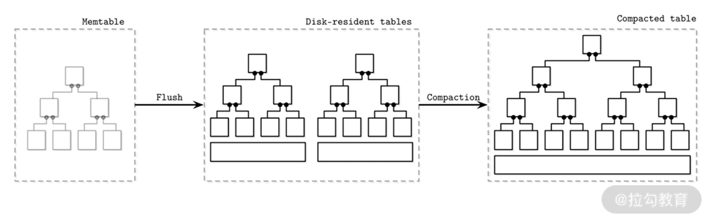
最后，我再为你详细介绍一下刷盘的流程。
首先定义几种角色，如下表所示。
数据首先写入当前内存表，当数据量到达阈值后，当前数据表把自身状态转换为刷盘中，并停止接受写入请求。此时会新建另一个内存表来接受写请求。刷盘完成后，由于数据在磁盘上，除了废弃内存表的数据外，还对提交日志进行截取操作。而后将新数据表设置为可以读取状态。
在合并操作开始时，将被合并的表设置为合并中状态，此时它们还可以接受读取操作。完成合并后，原表作废，新表开始启用提供读取服务。
以上就是经典的 LSM 树的结构和一些操作细节。下面我们开始介绍如何对其进行查询、更新和删除等操作。
查询、更新与删除操作
查询操作本身并没有 LSM 树的特色操作。由于目标数据可能在内存表或多个数据表中，故需要对多个数据源的结果数据进行归并操作。其中使用了排序归并操作，原因也非常简单，因为不论是内存表还是数据表，其中的数据都已经完成了排序。排序归并算法广泛应用在多种数据库中，如 Oracle、MySQL，等等。另外数据库中间 Apache ShardingShpere 在处理多数据源 order by 时，也使用了这个方法。感兴趣的话你可以自行研究，这里我就不占用过多篇幅了。
而查询另外一个问题是处理同一份数据不同版本的情况，虽然合并操作可以解决部分问题，但合并前的数据还需要通过查询机制来解决。我刚介绍过 LSM 树中对数据的修改和删除本质上都是增加一条记录，因此数据表和内存表中，一份数据会有多条记录，这个时候查询就需要进行冲突处理。一般一份数据的概念是它们具有相同的 key，而往往不同的版本会有时间戳，根据这个时间戳可以建立写入顺序，这类似于向量时钟的概念。故查询中我们很容易判断哪条数据是最新数据。
更新和删除操作本质上是插入数据，然后根据上面提到的冲突处理机制和合并操作来获取最终数据。更新操作是比较简明的，插入新数据就好了。但是删除操作时插入的是什么呢？
一般插入的是特殊的值，被称作墓碑（Tombstone）。它是一个特殊的值，用来表示记录被删除。如果要产出一个范围内数据呢？Apache Cassandra 的处理方法是引入范围墓碑（Range Tombstone）。
比如有从 k0 到 k9 的 9 条数据，在 k3 处设置开始删除点（包含 k3），在 k7 处设置结束删除点（不包含 k7），那么 k3 到 k6 这四条数据就被删除了。此时查询就会查不到 k4 到 k6，即使它们上面没有设置墓碑。
以上我们介绍了 LSM 树中最基本的操作，下面我再为你介绍一种非常特殊的操作，那就是合并操作。
合并操作
合并操作是用来维护 LSM 树的结构的，以保证其可以正常运行。需要强调的一点是，我们这里说的合并操作针对的是 LSM 树的结构里面提到的多树结构。在多树结构中，磁盘中表的数量随着刷盘动作的持续进行，而变得越来越多。合并操作正是让它们减少的一种手段。
合并操作会根据一定规则，从磁盘的数据文件中选择若干文件进行合并，而后将新文件写入磁盘，成功后会删除老数据。在整个操作的过程中，对内存的消耗是完全可控的。这是由于每个数据文件都是经过排序的，如上一讲提到的查询规则一样，我们依然可以通过排序归并来合并多个文件中的数据。这种合并每次只会加载部分数据，也就是每个文件头部的数据，进入内存进行合并操作。从而很好地控制了合并操作对内存资源的消耗。
在整个合并的过程中，老的数据表依然可以对外提供读取服务，这说明老数据依然在磁盘中。这就要求磁盘要留有一定的额外空间来容纳生成中的新数据表。同时合并操作可以并行执行，但是一般情况下它们操作的数据不会重合，以免引发竞争问题。合并操作既可以将多个数据文件合并成一个，也可以将一个数据文件拆分成多个。
常见的合并策略有 Size-Tiered Compaction 和 Leveled Compaction。
Size-Tiered Compaction
下图就是这种策略的合并过程。
其中，数据表按照大小进行合并，较小的数据表逐步合并为较大的数据表。第一层保存的是系统内最小的数据表，它们是刚刚从内存表中刷新出来的。合并过程就是将低层较小的数据表合并为高层较大的数据表的过程。Apache Cassandra 使用过这种合并策略。
该策略的优点是比较简单，容易实现。但是它的空间放大性很差，合并时层级越高该问题越严重。比如有两个 5GB 的文件需要合并，那么磁盘至少要保留 10GB 的空间来完成这次操作，可想而知此种容量压力是巨大的，必然会造成系统不稳定。
那么有没有什么策略能缓解空间放大呢？答案就是 Leveled Compaction。
Leveled Compaction
如名称所示，该策略是将数据表进行分层，按照编号排成 L0 到 Ln 这样的多层结构。L0 层是从内存表刷盘产生的数据表，该层数据表中间的 key 是可以相交的；L1 层及以上的数据，将 Size-Tiered Compaction 中原本的大数据表拆开，成为多个 key 互不相交的小数据表，每层都有一个最大数据量阈值，当到达该值时，就出发合并操作。每层的阈值是按照指数排布的，例如 RocksDB 文档中介绍了一种排布：L1 是 300MB、L2 是 3GB、L3 是 30GB、L4 为 300GB。
该策略如下图所示。
上图概要性地展示了从 L1 层开始，每个小数据表的容量都是相同的，且数据量阈值是按 10 倍增长。即 L1 最多可以有 10 个数据表，L2 最多可以有 100 个，以此类推。
随着数据表不断写入，L1 的数据量会超过阈值。这时就会选择 L1 中的至少一个数据表，将其数据合并到 L2 层与其 key 有交集的那些文件中，并从 L1 中删除这些数据。
仍然以上图为例，一个 L1 层数据表的 key 区间大致能够对应到 10 个 L2 层的数据表，所以一次合并会影响 11 个文件。该次合并完成后，L2 的数据量又有可能超过阈值，进而触发 L2 到 L3 的合并，如此往复。
可见，Leveled Compaction 与 Size-Tiered Compaction 相比，每次合并时不必再选取一层内所有的数据，并且每层中数据表的 key 区间都是不相交的，重复 key 减少了，所以很大程度上缓解了空间放大的问题。
当然在实际应用中会组合两种策略，比如经典的 RocksDB 会在 L0 合并到 L1 时，使用 Size-Tiered Compaction；而从 L1 开始，则是采用经典的 Leveled Compaction。这其中原因是 L0 的数据表之间肯定会存在相同的 key。
以上介绍了 LSM 树中经典的合并问题，那么在合并过程中常常面临各种困境，比如上文提到的空间放大问题。下面我为你介绍 RUM 假说，来详细分析此类问题。
RUM 假说
开始介绍这个假说之前，你要先明确几个“放大”概念。
- 读放大。它来源于在读取时需要在多个文件中获取数据并解决数据冲突问题，如查询操作中所示的，读取的目标越多，对读取操作的影响越大，而合并操作可以有效缓解读放大问题。
- 写放大。对于 LSM 树来说，写放大来源于持续的合并操作，特别是 Leveled Compaction，可以造成多层连续进行合并操作，这样会让写放大问题呈几何倍增长。
- 空间放大。这是我在说合并的时候提到过的概念，是指相同 key 的数据被放置了多份，这是在合并操作中所产生的。尤其是 Size-Tiered Compaction 会有严重的空间放大问题。
那么我们可以同时解决以上三种问题吗？根据 RUM 的假说，答案是不能。
该假说总结了数据库系统优化的三个关键参数：读取开销（Read）、更新开销（Update）和内存开销（Memory），也就是 RUM。对应到上面三种放大，可以理解为 R 对应读放大、U 对应写放大，而 M 对应空间放大（Memory 可以理解为广义的存储，而不仅仅指代内存）。
该假说表明，为了优化上述两项的开销必然带来第三项开销的上涨，可谓鱼与熊掌不可兼得。而 LSM 树是用牺牲读取性能来尽可能换取写入性能和空间利用率，上面我已经详细阐明其写入高效的原理，此处不做过多说明。
而有的同学会发现，合并操作会带来空间放大的问题，理论上应该会浪费空间。但是 LSM 树由于其不可变性，可以引入块压缩，来优化空间占用使用，且内存不需要做预留（B 树需要额外预留内存来进行树更新操作），从而使其可以很好地优化空间。
你应该知道，RUM 所描述的内容过于简单，一些重要指标如延迟、维护性等没有涵盖其中，但是它可以作为我们工具箱里面的一个短小精干的扳手，来快速分析和掌握一个存储引擎的特点。
总结
至此，我们学习了一个典型的面向分布式数据库所使用的存储引擎。从其特点可以看到，它高速写入的特性对分布式数据库而言是有非常大吸引力的，同时其KV 结构更是分片所喜欢的一种数据格式，非常适合基于此构建分布式数据库。所以诸如 Apache Cassandra、ClickHouse 和 TiDB 等分布式数据库都选用 LSM 树或类似结构的存储引擎来构建分布式数据库。
10 事务处理与恢复（上）：数据库崩溃后如何保证数据不丢失？
上一讲我们探讨了一个典型的面向分布式数据库所使用的存储引擎——LSM 树。那么这一讲，我将为你介绍存储引擎的精华部分，也就是事务管理。首先我将从使用者角度，介绍事务的特性，也就是 ACID；而后简要说明存储引擎是通过什么组件来支持这些特性的。
为了保持这些特性，事务管理器需要考虑各种可能的问题与故障，如数据库进程崩溃、磁盘故障等。在面临各种故障时，如何保证 ACID 特性，我会在“数据库恢复”部分为你介绍。
由于这部分内容较多，我分成了上下两讲来向你讲述。下一讲我会接着介绍数据库的隔离级别与并发控制，它们是数据库提供给应用开发人员的礼物，可以让其非常轻易地实现并发数据的一致性。
以上就是这部分内容的学习脉络，现在让我们从事务的概述说起。
事务概述
事务管理是数据库中存储引擎的一个相当独立并且重要的组件，它可以保证对数据库的一系列操作看起来就像只有一步操作一样。这大大简化了面向数据库的应用的开发，特别是在高并发场景下，其意义更为重要。
一个典型的案例就是转账操作：从甲处转 100 元给乙。现实生活中，这个操作是原子的，因为纸币是不可复制的。但是在计算机系统内，这个操作实际上是由两个操作组成：甲账户减 100、乙账户加 100。两个操作就会面临风险，比如在转账的同时，丁又从甲处转走 100（此时甲给乙的 100 未扣除），而如果此时账户内钱不够，这两笔操作中的一笔可能会失败；又比如，两个操作过程中数据库崩溃，重启后发现甲的账户已经没了 100，而乙账户还没有增加，或者相反。
为了解决上面类似的问题，人们在数据库特别是存储引擎层面提出了事务的概念。下面我来说说事务的经典特性 ACID。
ACID
A：原子性
原子性保证了事务内的所有操作是不可分割的，也就是它们要么全部成功，要么全部失败，不存在部分成功的情况。成功的标志是在事务的最后会有提交（Commit）操作，它成功后会被认为整个事务成功。而失败会分成两种情况，一种是执行回滚（Rollback）操作，另一种就是数据库进程崩溃退出。
原子性是数据库提供给使用者的保证，是为了模拟现实原子操作，如上文提到的转账。在现实生活中，一些看似不可分割的操作转换为计算机操作却并不是单一操作。而原子性就是对现实生活中原子操作的保证。
C：一致性
一致性其实是受用户与数据库共同控制的，而不只是数据库提供的一个服务。它首先是一个业务层面的约束，比如开篇中的例子，甲向乙转 100 元。业务应用首先要保证在甲账户扣款 100 元，而且在乙账户增加 100 元，这个操作所带来的一致性与数据库是无关的。而数据库是通过 AID 来保证这两个正确的动作可以得到最终正确的结果。
这里的一致性与模块一中的分布式一致性有本质区别，想了解详细对比的同学，请移步到“05 | 一致性与 CAP 模型：为什么需要分布式一致性”，这里就不进行赘述了。
I：隔离性
事务的一个伟大之处是能处理并发操作，也就是不同的事务在运行的时候可以互相不干扰，就像没有别的事务发生一样。做并发编程的同学会对此深有体会，处理并发操作需要的精力与经验与处理串行操作完全不在一个等级上。而隔离性恰好能将实际上并发的操作，转化为从使用者角度看却是串行的，从而大大降低使用难度。
当然在实际案例中，以上描述的强并发控制性能会偏低。一般数据库会定义多种的隔离级别来提供不同等级的并发处理能力，也就是一个事务在较低隔离级别下很可能被其他事务看见。详细内容我会在“隔离级别”部分进行说明。
D：持久性
持久性比较简单，就是事务一旦被提交，那么它对数据库的修改就可以保留下来。这里要注意这个“保存下来”不仅仅意味着别的事务能查询到，更重要的是在数据库面临系统故障、进程崩溃等问题时，提交的数据在数据库恢复后，依然可以完整地读取出来。
以上就是事务的四种重要的特性，那么事务在存储引擎内部有哪些组件来满足上面的特性呢？我接下来要为你介绍的就是一个典型的事务管理组件。
事务管理器
事务主要由事务管理器来控制，它负责协调、调度和跟踪事务状态和每个执行步骤。当然这与分布式事务两阶段提交（2PC）中的事务管理器是不同的，关于分布式事务的内容我将在下一个模块详细介绍。
页缓存
关于事务管理器，首先要提到的就是页缓存（Page Cache）或者缓冲池（Buffer Pool），它是磁盘和存储引擎其他组件的一个中间层。数据首先被写入到缓存里，而后同步到数据磁盘上。它一般对于其他组件，特别是对于写入来说是透明的，写入组件以为是将数据写入磁盘，实际上是写入了缓存中。这个时候如果系统出现故障，数据就会有丢失的风险，故需要本讲后面“如何恢复事务”要介绍的手段来解决这个问题。
缓存首先解决了内存与磁盘之间的速度差，同时可以在不改变算法的情况下优化数据库的性能。但是，内存毕竟有限，不可能将磁盘中的所有数据进行缓存。这时候就需要进行刷盘来释放缓存，刷盘操作一般是异步周期性执行的，这样做的好处是不会阻塞正常的写入和读取。
刷盘时需要注意，脏页（被修改的页缓存）如果被其他对象引用，那么刷盘后不能马上释放空间，需要等到它没有引用的时候再从缓存中释放。刷盘操作同时需要与提交日志检查点进行配合，从而保证 D，也就是持久性。
当缓存到达一定阈值后，就不得不将有些旧的值从缓存中移除。这个时候就需要缓存淘汰算法来帮忙释放空间。这里有 FIFO、LRU、表盘（Clock）和 LFU 等算法，感兴趣的话你可以根据这几个关键词自行学习。
最后存在部分数据我们希望它们一直在缓存中，且不受淘汰算法的影响，这时候我们可以把它们“锁”（Pinned）在缓存里。比如 B 树的高节点，它们一般数据量不大，且每次查询都需要访问。还有一些经常访问的元数据也会长期保存在缓存中。
日志管理器
其次是日志管理器，它保存了一组数据的历史操作记录。缓存内的数据没有刷入磁盘前，系统就崩溃了，通过回放日志，缓存中的数据可以恢复出来。另外，在回滚场景，这些日志可以将修改前的数据恢复出来。
锁管理器
最后要介绍的就是非常重要的锁管理器，它保证了事务访问共享资源时不会打破这些资源的完整性约束。同时，它也可以保证事务可以串行执行。关于锁的内容我会在后面详细说明。
以上就是事务管理的主要组件，下面我将从数据库恢复事务的角度介绍日志管理相关内容。
数据库如何恢复事务
数据库系统是由一系列硬件和软件组成的复杂生态系统，其中每个组件都有产生各种稳定性问题的可能，且将它们组合为数据库系统后，这种可能被进一步放大了。而数据库的设计者必须为这种潜在的稳定性问题给出自己的解决方案，并使数据库作出某种“承诺”。
提交日志，即 CommitLog 或 WAL（Write-Ahead Log）就是应对此种问题的有效手段。这种日志记录了数据库的所有操作，并使用追加（Append）模式记录在磁盘的日志文件中。
上文中我们知道数据库的写操作首先是写入了缓存，而后再刷入磁盘中。但是在刷盘之前，其实这些数据已经以日志的形式保存在了磁盘的提交日志里面。当数据没有刷入磁盘而仅仅驻留在缓存时，这些日志可以保证数据的持久性。也就是，一旦数据库遭遇故障，可以从日志中恢复出来数据。
那么提交日志具有哪些特性来保障这些功能呢？下面来看一下日志的特性。
提交日志的特性
首先，提交日志非常类似于上一讲介绍的 LSM 树的磁盘文件特性，都是顺序写入且不可变。其益处也是相同的，顺序写保障了写入的高性能，不可变保证了读取可以安全地从前到后读取里面的数据。
提交日志一般都会被分配一个序列号作为唯一键，这个序号不是一个自增数字，就是一个时间戳。此外，每条日志都非常小，有些数据库会将它们进行缓存而后批量写入磁盘。这就导致，默写情况下日志不能完全恢复数据库，这是对于性能的考虑，大部分数据库会给出不同的参数来描述日志缓存刷盘的行为，用户可在性能与恢复数据完整性上作出平衡。
而事务在提交的时候，一定要保证其日志已经写入提交日志中。也就是事务内容完全写入日志是事务完成的一个非常重要的标志。
日志在理论上可以无限增长，但实际上没有意义。因为一旦数据从缓存中被刷入磁盘，该操作之前的日志就没有意义了，此时日志就可以被截断（Trim），从而释放空间。而这个被截断的点，我们一般称为检查点。检查点之前的页缓存中的脏页需要被完全刷入磁盘中。
日志在实现的时候，一般是由一组文件组成。日志在文件中顺序循环写入，如果一个文件中的数据都是检查点之前的旧数据，那么新日志就可以覆盖它们，从而避免新建文件的问题。同时，将不同文件放入不同磁盘，以提高日志系统的可用性。
物理日志 Redo Log 与逻辑日志 Undo Log
事务对数据的修改其实是一种状态的改变，比如将 3 改为 5。这里我们将 3 称为前镜像（before-image），而 5 称为后镜像（after-image）。我们可以得到如下公式：
- 前镜像+redo log=后镜像
- 后镜像+undo log=前镜像
redo log 存储了页面和数据变化的所有历史记录，我们称它为物理日志。而 undo log 需要一个原始状态，同时包含相对这个状态的操作，所以又被称为逻辑日志。我们使用 redo 和 undo 就可以将数据向前或向后进行转换，这其实就是事务操作算法的基础。
Steal 与 Force 策略
redo 和 undo 有两种写入策略：steal 和 force。
steal 策略是说允许将事务中未提交的缓存数据写入数据库，而 no-steal 则是不能。可以看到如果是 steal 模式，说明数据从后镜像转变为前镜像了，这就需要 undo log 配合，将被覆盖的数据写入 undo log，以备事务回滚的时候恢复数据，从而可以恢复到前镜像状态。
force 策略是说事务提交的时候，需要将所有操作进行刷盘，而 no-force 则不需要。可以看到如果是 no-force，数据在磁盘上还是前镜像状态。这就需要 redo log 来配合，以备在系统出现故障后，从 redo log 里面恢复缓存中的数据，从而能转变为后镜像状态。
从上可知，当代数据库存储引擎大部分都有 undo log 和 redo log，那么它们就是 steal/no-force 策略的数据库。
下面再来说一个算法。
ARIES 数据恢复算法
这个算法全称为 Algorithm for Recovery and Isolation Exploiting Semantics。
该算法同时使用 undo log 和 redo log 来完成数据库故障崩溃后的恢复工作，其处理流程分为如下三个步骤。
- 首先数据库重新启动后，进入分析模式。检查崩溃时数据库的脏页情况，用来识别需要从 redo 的什么位置开始恢复数据。同时搜集 undo 的信息去回滚未完成的事务。
- 进入执行 redo 的阶段。该过程通过 redo log 的回放，将在页缓存中但是没有持久化到磁盘的数据恢复出来。这里注意，除了恢复了已提交的数据，一部分未提交的数据也恢复出来了。
- 进入执行 undo 的阶段。这个阶段会回滚所有在上一阶段被恢复的未提交事务。为了防止该阶段执行时数据库再次崩溃，存储引擎会记录下已执行的 undo 操作，防止它们重复被执行。
ARIES 算法虽然被提出多年，但其概念和执行过程依然在现代存储引擎中扮演着重要作用。
以上我们讲解了数据库如何恢复数据，保持一致性状态。它对应着 AID（C 如前文所示，是一种约束，一般不认为是数据库提供的功能）中的 AD。同时我们也要知道以提交日志为代表的数据库恢复技术，在没有事务概念的数据库中也扮演着重要的作用，因为页缓存是无处不在的，解决主存掉电丢失数据的问题，是提交日志的主要功能。
总结
那么这一讲就介绍到这了。我们从 ACID 原理出发，介绍了管理事务的众多组件，而后重点介绍了如何保证数据的持久性，这主要通过提交日志来实现。其余有关隔离性的概念，我将会在下一讲接着介绍。
11 事务处理与恢复（下）：如何控制并发事务？
上一讲，我们介绍了事务的基本概念和数据库恢复流程，其中涉及了事务持久性是如何保证的，那么这一讲，我们就重点介绍事务的隔离性。
数据库最强的隔离级别是序列化，它保证从事务的角度看自己是独占了所有资源的。但序列化性能较差，因此我们引入了多种隔离界别来提高性能。在本讲的最后我会介绍分布式数据库中常用的并发控制手段，它们是实现隔离级别的有效方案，其中以多版本方式实现快照隔离最为常见。
现在让我们开始今天的内容。
隔离级别
在谈隔离级别之前，我们先聊聊“序列化”（Serializability）的概念。
序列化的概念与事务调度（Schedule）密切相关。一个调度包含该事务的全部操作。我们可以用 CPU 调度理论来类比，当一个事务被调度后，它可以访问数据库系统的全部资源，同时会假设没有其他事务去影响数据库的状态。这就类似于一个进程被 CPU 调度，从而独占该 CPU 资源（这里的 CPU 指的是时分系统）。但是实际设计调度时，会允许调度事务内部的操作被重新排序，使它们可以并行执行。这些都是优化操作，但只要不违反 ACID 的原则和结果的正确性就可以了。
那什么是序列化呢？如果一个调度被说成是序列化的，指的是它与其他调度之间的关系：在该调度执行时没有其他被调度的事务并行执行。也就是说，调度是一个接着一个顺序执行的，前一个调度成功完成后，另一个调度再执行。这种方法的一个好处是执行结果比较好预测。但是，我们发现这种做法有明显的缺陷：性能太低。在实现时，一个序列化调度可能会并行执行多个事务操作，但是会保证这样与一个个顺序执行调度有相同的结果。
以上就是序列化的概念，它揭示了序列化也会存在并发执行的情况。这一点很重要，在隔离理论中，一个隔离概念只是描述了一种行为，而在实现层面可以有多种选择，只要保证这个行为的结果符合必要条件就没有问题了。
序列化是最强的事务隔离级别，它是非常完美的隔离状态，可以让并行运行的事务感知不到对方的存在，从而安心地进行自己的操作。但在实现数据库事务时，序列化存在实现难度大、性能差等问题。故数据库理论家提出了隔离级别的概念，用来进行不同程度的妥协。在详解隔离级别之前，来看看我们到底可以“妥协”什么。
这些“妥协”被称为读写异常（Anomalies）。读异常是大家比较熟悉的，有“脏读”“不可重读”和“幻读”。写异常不太为大家所知，分别是“丢失更新”“脏写”和“写偏序”。读异常和写异常是分别站在使用者和数据本身这两个角度去观察隔离性的，我们将成对介绍它们。传统上隔离级别是从读异常角度描述的，但是最近几年，一些论文也从写异常角度出发，希望你能明白两种表述方式之间是有联系的。下表就是经典隔离级别与读异常的关系。

从中可以看到序列化是不允许任何读写异常存在的。
可重读允许幻读的产生。幻读是事务里面读取一组数据后，再次读取这组数据会发现它们可能已经被修改了。幻读对应的写异常是写偏序。写偏序从写入角度发现，事务内读取一批数据进行修改，由于幻读的存在，造成最终修改的结果从整体上看违背了数据一致性约束。
读到已提交在可重读基础上放弃了不可重读。与幻读类似，但不可重读针对的是一条数据。也就是只读取一条数据，而后在同一个事务内，再读取它数据就变化了。
刚接触这个概念的同学可能会感觉匪夷所思，两者只相差一个数据量，就出现了两个隔离级别。这背后的原因是保证一条数据的难度要远远低于多条，也就是划分这两个级别，主要的考虑是背后的原理问题。而这个原理又牵扯出了性能与代价的问题。因此就像我在本专栏中反复阐述的一样，一些理论概念有其背后深刻的思考，你需要理解背后原理才能明白其中的奥义。不过不用担心，后面我会详细阐述它们之间实现的差别。
而不可重读对应的是丢失更新，与写偏序类似，丢失更新是多个事务操作一条数据造成的。
最低的隔离级别就是读到未提交，它允许脏读的产生。脏读比较简单，它描述了事务可以读到其他事务为提交的数据，我们可以理解为完全没有隔离性。而脏读本身也会造成写异常：脏写。脏写就是由于读到未提交的数据而造成的写异常。
以上，我们详细阐述了经典的隔离级别。但是这套理论是非常古早的，较新的 MVCC 多版本技术所带来的快照隔离又为传统隔离级别增添一个灵活选型。它可以被理解为可重读隔离级别，也就是不允许不可重读。但是在可重读隔离下，是可以保证读取不到数据被修改的。但快照隔离的行为是：一旦读到曾经读过的数据被修改，将立即终止当前事务，也就是进行回滚操作。在多并发事务下，也就是只有一个会成功。你可以细细品味两者的差异。
快照隔离可以解决丢失更新的问题，因为针对同一条数据可以做快照检测，从而发现数据被修改，但是不能防止写偏序的问题。
快照隔离是现代分布式数据库存储引擎最常使用的隔离级别，而解决写偏序问题，也是存储引擎在该隔离级别下需要解决的问题。SSI（Serializable Snaphost Isoltion）正是解决这个问题的方案，我会在“18 | 分布式事务：‘老大难’问题的最新研究与实践”中详细介绍该方案。
至此我们讨论了典型的隔离级别，隔离级别与分布式一致性的关系我在“<05 | 一致性与 CAP 模型：为什么需要分布式一致性>”中已经有过阐述，如果需要复习，请出门左转。现在让我们接着讨论如何实现这些隔离级别。
并发控制
目前存储引擎引入多种并发模型来实现上面提到的隔离级别，不同的模式对实现不同的级别是有偏好的，虽然理论上每种控制模型都可以实现所有级别。下面我就从乐观与悲观、多版本、基于锁的控制三个方面进行介绍。
乐观与悲观
乐观与悲观的概念类似于并发编程中的乐观锁与悲观锁。但是这里你要注意，实现它们并不一定要借助锁管理。
乐观控制使用的场景是并行事务不太多的情况，也就是只需要很少的时间来解决冲突。那么在这种情况下，就可以使用一些冲突解决手段来实现隔离级别。最常用的方案是进行提交前冲突检查。
冲突检查有多种实现模式，比如最常用的多版本模式。而另一种古老的模式需要检查并行事务直接操作的数据，也就是观察它们操作的数据是否有重合。由于其性能非常差，已经很少出现在现代存储引擎中了。这里需要你注意的是，乐观控制不一定就是多版本这一种实现，还有其他更多的选择。
同样的，悲观控制也不仅仅只有锁这一种方案。一种可能的无锁实现是首先设置两个全局时间戳，最大读取时间与最大写入时间。如果一个读取操作发生的时间小于最大写入时间，那么该操作所在的事务被认为应该终止，因为读到的很可能是旧数据。而一个写操作如果小于最大读取时间，也被认为是异常操作，因为刚刚已经有读取操作发生了，当前事务就不能去修改数据了。而这两个值是随着写入和读取操作而更新的。这个悲观控制被称为 Thomas Write Rule，对此有兴趣的话你可以自行搜索学习。
虽然乐观与悲观分别有多种实现方案，但乐观控制最为常见的实现是多版本控制，而悲观控制最常见的就是锁控制。下面我就详细介绍它们。
多版本
多版本并发控制（MVCC，Multiversion concurrency control）是一种实现乐观控制的经典模式。它将每行数据设置一个版本号，且使用一个单调递增的版本号生成器来产生这些版本号，从而保证每条记录的版本号是唯一的。同时给每个事物分为一个 ID 或时间戳，从而保证读取操作可以读到事务提交之前的旧值。
MVCC 需要区分提交版本与未提交版本。最近一次提交的版本被认为是当前版本，从而可以被所有事务读取出来。而根据隔离级别的不同，读取操作能或者不能读取到未提交的版本。
使用 MVCC 最经典的用法是实现快照隔离。事务开始的时候，记录当前时间，而后该事务内所有的读取操作只能读到当前提交版本小于事务开始时间的数据，而未提交的数据和提交版本大于事务开始时间点的数据是不能读取出来的。如果事务读取的数据已经被其他事务修改，那么该数据应该在上一讲提到的 undo log 中，当前事务还是能够读取到这份数据的。故 undo log 的数据不能在事务提交的时候就清除掉，因为很可能有另外的事务正在读取它。
而当事务提交的时候，数据其实已经写入完成。只需要将版本状态从未提交版本改为提交版本即可。所以 MVCC 中的提交操作是非常快的，这点会对分布式事务有很多启示。
而上文提到的 SSI 模式可以在 MVCC 的基础上引入冲突解决机制，从而解决写偏序问题。当提交发生的时候，事务会检测其修改和读取的数据在提交之前是否已经被其他已提交事务修改了，如果是，则会终止当前事务，并进行回滚。同时这个冲突检测时机会有两个：一个是在事务内进行读取操作时就进行检测，称为前向检测（forward）。而相对的，在提交时进行检测被称为后向检测（backward）。你会明显感觉到，前者会快速失败，但是性能较低；而后者对异常的反应较慢，但速度会有优势。
这就是经典的 MVCC 并发控制，现在让我接着介绍典型的悲观控制：锁控制。
基于锁的控制
基于锁的控制是典型的悲观控制。它会使用显示的锁来控制共享资源，而不是通过调度手段来实现。锁控制可以很容易实现“序列化操作”，但是它同时存在锁竞争和难扩展等问题。
一个比较知名的锁技术是两阶段锁（2PL），它将锁操作总结为两个阶段。
- 锁膨胀阶段。在该过程中，事务逐步获得所有它需要的锁，同时不释放任何锁。这期间事务可以对加锁的数据进行操作。
- 锁收缩阶段。该过程中，在上一过程中获得的锁全部被释放。这个事务是逐步的，这期间事务依然可以对还持有锁的数据进行操作。
以上过程简单明了，它是针对一次性加锁提出来的，一次性加锁的缺点是没有并发度，性能低；而两阶段锁可以保证一定的并发度，但其缺点是会有死锁的产生。
死锁是两个事务互相持有对方的锁，从而造成它们都无法继续运行。解决死锁需要引入超时机制，但超时机制又有明显的性能缺憾。此时，人们会引入死锁检测机制来尽早发现死锁。一般实现手段是将所有事务的锁依赖构建成一棵依赖图，而后使用图算法来发现其中的环形死锁结构，从而快速判断死锁的产生。
而与锁相对的一个概念就是“闩”（latch，读“shuān”）。一般资料说闩是轻量的，锁是重量的，这其实体现在两个方面。
一是说它们处理的对象。闩一般用在粒度很小的数据中，比如数据块、索引树的节点等。而锁一般作用在大颗粒操作，如锁定多行数据、事务和修改存储结构等。
二是它们本身的实现不同。闩一般使用 CAS 执行，是基于比较而后设置的无锁指令级别的操作。如果原始值发生变化就重新进行以上操作，这个过程叫自旋（spin）。而锁是使用独立的资源，且有锁管理器来控制。可想而知，调度锁也是一个比较耗时且复杂的过程。
这里就要解释上文中隔离级别“序列化”和“可重读”之间实现的差异了。“序列化”由于要保证一组数据重复读取的一致性，就需要引入重量级的锁，其代价是很高的；而“可重读”只需要保证一行数据重复读取是一致的，它可以使用轻量级的闩来实现。故隔离级别将它们分成两种是非常合理的，因为从原理看，它们是完全不同的。
以上就是关于基于锁的控制的相关内容。
总结
本讲内容就介绍到这里了。事务是我们课程到目前为止最长的内容，用了两讲的篇幅来详细介绍。事务的话题在数据库领域一直很热门，我从事务原理层面切入，解释了 ACID 和不同隔离级别所需要的技术手段。这些内容为分布式事务的学习打下坚实的基础，同时你可以将本专栏作为一份参考资料，随时进行查阅。
从本质出发，事务是一个面向使用者的概念，它向使用者提供一种契约，目的是使人们可以可靠地使用数据库保存和共享数据，这是数据库最核心的功能，且有众多的应用是基于该功能构建的，这也是分布式数据库为什么要实现分布式条件下的事务的根本原因。
12 引擎拓展：解读当前流行的分布式存储引擎
这一讲是存储引擎模块的最后一讲，通过这一个模块的学习，相信你已经对存储引擎的概念、使用方法与技术细节有了全方位的认识。本讲我们先总结一下模块二的主要内容，并回答大家提到的一些典型问题；而后我会介绍评估存储引擎的三个重要元素；最后为你介绍目前比较流行的面向分布式数据库的存储引擎。
让我们先进行本模块的内容回顾。
存储引擎回顾
存储引擎是数据库的核心组件，起到了物理模型与逻辑模型之间的沟通作用，是数据库重要功能，是数据写入、查询执行、高可用和事务等操作的主要承担者。可谓理解存储引擎也就掌握了数据库的主要功能。
在这个模块里，我首先向你介绍了存储引擎在整个数据库中的定位，点明了它其实是本地执行模块的组成部分；而后通过内存与磁盘、行式与列式等几组概念的对比，介绍了不同种类的存储引擎的实现差异；并最终说明了分布式数据库存储引擎的特点，即面向内存、列式和易于散列。
在第 8 讲中，我介绍了分布式数据库的索引。着重说明了存储引擎中大部分数据文件其实都是索引结构；而后带着你一起探讨了典型分布式数据库存储引擎的读取路径，并介绍了该路径上的一些典型技术，如索引数据表、内存跳表、布隆过滤和二级索引等。
接着我介绍了一个在分布式数据库领域内非常流行的存储引擎：LSM 树。介绍了其具体的结构、读写修改等操作流程；重点说明了合并操作，它是 LSM 树的核心操作，直接影响其性能；最后介绍了 RUM 假说，它是数据库优化的一个经典取舍定律。
最后，我们探讨了存储引擎最精华的概念，就是事务。我用了两讲的篇幅，详细为你阐述事务的方方面面。总结一下，事务其实是数据库给使用者的一个承诺，即 ACID。为了完成这个承诺，数据库动用了存储引擎中众多的功能模块。其中最重要的事务管理器，同时还需要页缓存、提交日志和锁管理器等组件来进行配合。故在实现层面上，事务的面貌是很模糊的，它同时具备故障恢复和并发控制等特性，这是由其概念是建立在最终使用侧而造成的。
事务部分我们主要抓住两点：故障恢复+隔离级别。前者保证了数据库存储数据不会丢失，后者保证并发读写数据时的完整性；同时我们要将事务与模块一中的分布式一致性做区别，详细内容请你回顾第 5 讲。
在事务部分，有同学提到了下面这个问题，现在我来为你解答。
当内存数据刷入磁盘后，同时需要对日志做“截取”操作，这个截取的值是什么？
这个“截取”是一个形象的说法，也就是可以理解为截取点之前的数据已经在输入磁盘中。当进行数据库恢复的时候，只要从截取点开始恢复数据库即可，这样大大加快了恢复速度，同时也释放了日志的空间。这个截取点，一般被称为检查点。相关细节，你可以自行学习。
以上我们简要回顾了本模块的基本知识。接下来，我将带你领略当代分布式数据库存储引擎的一些风采。但是开始介绍之前，我们需要使用一个模型来评估它们的特点。
评估存储引擎的黄金三角
存储引擎的特点千差万别，各具特色。但总体上我们可以通过三个变量来描述它们的行为：缓存的使用方式，数据是可变的还是不可变的，存储的数据是有顺序的还是没有顺序的。
缓存形式
缓存是说存储引擎在数据写入的时候，首先将它们写入到内存的一个片段，目的是进行数据汇聚，而后再写入磁盘中。这个小片段由一系列块组成，块是写入磁盘的最小单位。理想状态是写入磁盘的块是满块，这样的效率最高。
大部分存储引擎都会使用到缓存。但使用它的方式却很不相同，比如我将要介绍的 WiredTiger 缓存 B 树节点，用内存来抵消随机读写的性能问题。而我们介绍的 LSM 树是用缓存构建一个有顺序的不可变结构。故使用缓存的模式是衡量存储引擎的一个重要指标。
可变/不可变数据
存储的数据是可变的还是不可变的，这是判断存储引擎特点的另一个维度。不可变性一般都是以追加日志的形式存在的，其特点是写入高效；而可变数据，以经典 B 树为代表，强调的是读取性能。故一般认为可变性是区分 B 树与 LSM 树的重要指标。但 BW-Tree 这种 B 树的变种结构虽然结构上吸收了 B 树的特点，但数据文件是不可变的。
当然不可变数据并不是说数据一直是不变的，而是强调了是否在最影响性能的写入场景中是否可变。LSM 树的合并操作，就是在不阻塞读写的情况下，进行数据文件的合并与分割操作，在此过程中一些数据会被删除。
排序
最后一个变量就是数据存储的时候是否进行排序。排序的好处是对范围扫描非常友好，可以实现 between 类的数据操作。同时范围扫描也是实现二级索引、数据分类等特性的有效武器。如本模块介绍的 LSM 树和 B+ 树都是支持数据排序的。
而不排序一般是一种对于写入的优化。可以想到，如果数据是按照写入的顺序直接存储在磁盘上，不需要进行重排序，那么其写入性能会很好，下面我们要介绍的 WiscKey 和 Bitcask 的写入都是直接追加到文件末尾，而不进行排序的。
以上就是评估存储引擎特点的三个变量，我这里将它们称为黄金三角。因为它们是互相独立的，彼此并不重叠，故可以方便地评估存储引擎的特点。下面我们就试着使用这组黄金三角来评估目前流行的存储引擎的特点。
B 树类
上文我们提到过评估存储引擎的一个重要指标就是数据是否可以被修改，而 B 树就是可以修改类存储引擎比较典型的一个代表。它是目前的分布式数据库，乃至于一般数据库最常采用的数据结构。它是为了解决搜索树（BST）等结构在 HDD 磁盘上性能差而产生的，结构特点是高度很低，宽度很宽。检索的时候从上到下查找次数较少，甚至如 B+ 树那样，可以完全把非叶子节点加载到内存中，从而使查找最多只进行一次磁盘操作。
下面让我介绍几种典型的 B 树结构的存储引擎。
InnoDB
InnoDB 是目前 MySQL 的默认存储引擎，同时也是 MariaDB 10.2 之后的默认存储引擎。
根据上文的评估指标看，它的 B+ 树节点是可变的，且叶子节点保存的数据是经过排序的。同时由于数据的持续写入，在高度不变的情况下，这个 B+ 树一定会横向发展，从而使原有的一个节点分裂为多个节点。而 InnoDB 使用缓存的模式就是：为这种分裂预留一部分内存页面，用来容纳可能的节点分裂。
这种预留的空间其实就是一种浪费，是空间放大的一种表现。用 RUM 假设来解释，InnoDB 这种结构是牺牲了空间来获取对于读写的优化。
在事务层面，InnoDB 实现了完整的隔离级别，通过 MVCC 机制配合各种悲观锁机制来实现不同级别的隔离性。
WiredTiger
WiredTiger 是 MongoDB 默认的存储引擎。它解决了原有 MongoDB 必须将大部分数据放在内存中，当内存出现压力后，数据库性能急剧下降的问题。
它采用的是 B 树结构，而不是 InnoDB 的 B+ 树结构。这个原因主要是 MongoDB 是文档型数据库，采用内聚的形式存储数据（你可以理解为在关系型数据库上增加了扩展列）。故这种数据库很少进行 join 操作，不需要范围扫描且一次访问就可以获得全部数据。而 B 树每个层级上都有数据，虽然查询性能不稳定，但总体平均性能是要好于 B+ 树的。
故 WiredTiger 首先是可变数据结构，同时由于不进行顺序扫描操作，数据也不是排序的。那么它是如何运用缓存的呢？这个部分与 InnoDB 就有区别了。
在缓存中每个树节点上，都配合一个更新缓冲，是用跳表实现的。当进行插入和更新操作时，这些数据写入缓冲内，而不直接修改节点。这样做的好处是，跳表这种结构不需要预留额外的空间，且并发性能较好。在刷盘时，跳表内的数据和节点页面一起被合并到磁盘上。
由此可见，WiredTiger 牺牲了一定的查询性能来换取空间利用率和写入性能。因为查询的时候出来读取页面数据外，还要合并跳表内的数据后才能获取最新的数据。
BW-Tree
BW-Tree 是微软的 Azure Cosmos DB 背后的主要技术栈。它其实通过软件与硬件结合来实现高性能的类 B 树结构，硬件部分的优化使用 Llama 存储系统，有兴趣的话你可以自行搜索学习。我们重点关注数据结构方面的优化。
BW-Tree 为每个节点配置了一个页面 ID，而后该节点的所有操作被转换为如 LSM 树那样的顺序写过程，也就是写入和删除操作都是通过日志操作来完成的。采用这种结构很好地解决了 B 树的写放大和空间放大问题。同时由于存在多个小的日志，并发性也得到了改善。
刷盘时，从日志刷入磁盘，将随机写变为了顺序写，同样提高了刷盘效率。我们会发现，BW-Tree 也如 LSM 树一样存在读放大问题，即查询时需要将基础数据与日志数据进行合并。而且如果日志太长，会导致读取缓慢。而此时 Cosmos 采用了一种硬件的解决方案，它会感知同一个日志文件中需要进行合并的部分，将它们安排在同一个处理节点，从而加快日志的收敛过程。
以上就是典型的三种 B 树类的存储引擎，它们各具特色，对于同一个问题的优化方式也带给我们很多启发。
LSM 类
这个模块我专门用了一个完整篇章来阐述它的特点，它是典型的不可变数据结构，使用缓存也是通过将随机写转为顺序写来实现的。
我们在说 LSM 树时介绍了它存储的数据是有顺序的，其实目前有两种无顺序的结构也越来越受到重视。
经典存储
经典的 LSM 实现有 LeveledDB，和在其基础之上发展出来的 RocksDB。它们的特点我们之前有介绍过，也就是使用缓存来将随机写转换为顺序写，而后生成排序且不可变的数据。它对写入和空间友好，但是牺牲了读取性能。
Bitcask
Bitcask 是分布式键值数据库 Riak 的一种存储引擎，它也是一种典型的无顺序存储结构。与前面介绍的典型 LSM 树有本质上的不同，它没有内存表结构，也就是它根本不进行缓存而是直接将数据写到数据文件之中。
可以看到，其写入是非常高效的，内存占用也很小。但是如何查询这种“堆”结构的数据呢？答案是在内存中有一个叫作 Keydir 的结构保存了指向数据最新版本的引用，旧数据依然在数据文件中，但是没有被 Keydir 引用，最终就会被垃圾收集器删除掉。Keydir 实际上是一个哈希表，在数据库启动时，从数据文件中构建出来。
这种查询很明显改善了 LSM 树的读放大问题，因为每条数据只有一个磁盘文件引用，且没有缓存数据，故只需要查询一个位置就可以将数据查询出来。但其缺陷同样明显：不支持范围查找，且启动时，如果数据量很大，启动时间会比较长。
此种结构优化了写入、空间以及对单条数据的查找，但牺牲了范围查找的功能。
WiscKey
那么有没有一种结构，既能利用无顺序带来的高速写入和空间利用率上的优点，又可以支持非常有用的范围查询呢？WiscKey 结构正是尝试解决这个问题的一个手段。
它的特点是将 Key 和 Value 分别放在两个文件中。Key 还是按照 LSM 树的形式，这样就保证了 Key 是有顺序的，可以进行范围扫描。同时使用 LSM 树，即不需要将所有的 Key 放到内存里，这样也解决了 Bitcask 加载慢的问题。
而 Value 部分称为 vLogs（value Logs），其中的数据是没有顺序的。这种结构适合更新和删除比较少的场景，因为范围扫描会使用随机读，如果更新删除很多，那么其冲突合并的效率很低。同时在合并操作的时候，需要扫描 Key 而后确定合并方案，这个在普通的 LSM 树中也是不存在的。
WiscKey 非常适合在 SSD 进行运行，因为读取 Value 需要进行随机读取。目前 dgraph.io 的 Badger 是该模式比较成熟的实现。
总结
到这里，这一讲内容就说完了。我带你回顾了第二模块的主要内容，这是一个基础知识普及模块，将为接下来的分布式模块打下基础。同时相对于传统关系型数据库，分布式数据库的存储引擎也有其自身特点，如 LSM 树结构，你需要认真掌握这种结构。
13 概要：分布式系统都要解决哪些问题？
在学习了存储引擎相关内容之后，从这一讲开始，我们就进入新的模块——分布式数据库最核心的部分，那就是分布式系统。
分布式数据库区别于传统数据库的一个重要特性就是其分布式的特点，这些特点来源于分布式理论的发展，特别是数据分布相关理论的发展。相比于无状态分布式系统，有状态的数据库在分布式领域中将会面对更多的挑战。
本讲内容作为整个模块三的引子，我将会向你提出一系列问题，而在后续的课程中，我会逐一回答这些问题。那么现在让我们从失败模型开始，讨论分布式模式下的数据库吧。
失败模型
分布式系统是由多个节点参与其中的，它们直接通过网络进行互联。每个节点会保存本地的状态，通过网络来互相同步这些状态；同时节点需要访问时间组件来获取当前时间。对于分布式系统来说，时间分为逻辑时间与物理时间。逻辑时间一般被实现为一个单调递增的计数器，而物理时间对应的是一个真实世界的时间，一般由操作系统提供。
以上就是分布式系统所涉及的各种概念，看起很简单，实际上业界对分布式系统的共识就是上述所有环节没有一点是可靠的，“不可靠”贯穿了分布式系统的整个生命周期。而总结这些不可靠就成为失败模型所解决的问题。
在介绍失败模型的具体内容之前，让我们打开思路，看看有哪些具体的原因引起了分布式系统的可靠性问题。
引起失败的原因
当讨论分布式系统内的不稳定因素的时候，人们首先会想到网络问题，但是一个最容易让大家忽略的地方就是远程节点处理请求时也可能发生故障。一个比较常见的误区就是认为远程执行会马上返回结果，但这种假设是非常不可靠的。因为远程节点的处理能力、运行环境其实是未知的，我们不能认为它们会一直按照固定的模式去响应我们的请求。
而另一种情况是，请求到达远程节点后很可能不会被马上处理，而是放在了一个队列里面进行缓冲。这对于远程节点的吞吐量改善是有好处的，但是这在一定程度上带来了延迟，从而深刻地影响了交互模式。处理以上问题的方式就是需要引入故障检测（我会在下一讲介绍），来观察远程节点的运行情况，从而针对不同的问题采取不同的应对手段。
第二种常见的误解是所有节点时间是一致的，这种误解是非常普遍并且危险的。虽然可以使用工具去同步集群内的时间，但是要保持系统内时间一致是非常困难的。而如果我们使用不同节点产生的物理时间来进行一致性计算或排序，那么结果会非常不靠谱。所以大部分分布式数据库会用一个单独的节点来生成全局唯一的逻辑时间以解决上面的问题。而有些分布式数据库，如 Spanner 会使用原子钟这种精密服务来解决时间一致的问题。
本地物理时间的另一个问题是会产生回溯，也就是获取一个时间并执行若干步骤后，再去获取当前时间，而这个时间有可能比之前的时间还要早。也就是说我们不能认为系统的物理时间是单调递增的，这就是为什么要使用逻辑时间的另一个重要的原因。
但是本地物理时间在分布式系统中某些部分依然扮演着重要的作用，如判断远程节点超时等。但是基于以上两点，我们在实现分布式算法时应将时间因素考虑进去，从而避免潜在的问题。
以上谈到的分布式问题集中在节点层面，而另一大类问题就是网络造成的了。其中最为经典的问题就是网络分区，它指的是分布式系统的节点被网络故障分割为不同的小块。而最棘手的是，这些小块内的节点依然可以提供服务。但它们由于不能很好地感知彼此的存在，会产生不一致的问题，这个我们在模块一“<05 | 一致性与 CAP 模型：为什么需要分布式一致性>”有过比较详细的论述。
这里需要注意的是，网络分区带来的问题难以解决，因为它是非常难发现的。这是由于网络环境复杂的拓扑和参与者众多共同左右而导致的。故我们需要设计复杂的算法，并使用诸如混沌工程的方式来解决此类问题。
最后需要强调的一点是，一个单一读故障可能会引起大规模级联反映，从而放大故障的影响面，也就是著名的雪崩现象。这里你要注意，这种故障放大现象很可能来源于一个为了稳定系统而设计的机制。比如，当系统出现瓶颈后，一个新节点被加入进来，但它需要同步数据才能对外提供服务，而大规模同步数据很可能造成其他节点资源紧张，特别是网络带宽，从而导致整个系统都无法对外提供服务。
解决级联故障的方式有退避算法和断路。退避算法大量应用在 API 的设计中，由于上文提到远程节点会存在暂时性故障，故需要进行重试来使访问尽可能成功地完成。而频繁地重试会造成远程节点资源耗尽而崩溃，退避算法正是依靠客户端来保证服务端高可用的一种手段。而从服务端角度进行直接保护的方式就是断路，如果对服务端的访问超过阈值，那么系统会中断该服务的请求，从而缓解系统压力。
以上就是分布式系统比较常见的故障。虽然你可能会觉得这些故障很直观，但是如果要去解决它们思路会比较分散。还好前人已经帮我们总结了一些模型来对这些故障进行分级，从而有的放矢地解决这些问题。接下来我就要为你介绍三种典型的失败模型。
崩溃失败
当遭遇故障后，进程完全停止工作被称为崩溃失败。这是最简单的一种失败情况，同时结果也非常好预测。这种失败模式也称为崩溃停止失败，特别强调失败节点不需要再参与回分布式系统内部了。我们说这种模式是最容易预测的，是因为失败节点退出后，其他节点感知到之后可以继续提供服务，而不用考虑它重新回归所带来的复杂问题。
虽然失败停止模式有以上的优点，但实际的分布式系统很少会采用。因为它非常明显地会造成资源浪费，所以我们一般采用崩溃恢复模式，从而重复利用资源。提到崩溃节点恢复，一般都会想到将崩溃节点进行重启，而后经过一定的恢复步骤再加入网络中。虽然这是一种主流模式，但其实通过数据复制从而生成备份节点，而后进行快速热切换才是最为主流的模式。
崩溃失败可以被认为是遗漏失败的一种特殊情况。因为从其他节点看，他们很难分清一个节点服务响应是由于崩溃还是由于遗漏消息而产生的。那究竟什么是遗漏失败呢？
遗漏失败
遗漏失败相比于崩溃失败来说更为不可预测，这种模式强调的是消息有没有被远程节点所执行。
这其中的故障可能发生在：
- 消息发送后没有送达远程节点；
- 远程节点跳过消息的处理或根本无法执行（一种特例就是崩溃失败，节点无法处理消息）；
- 后者处理的结果无法发送给其他节点。
总之，从其他节点的角度看，发送给该节点的消息石沉大海，没有任何响应了。
上文提到的网络分区是遗漏失败的典型案例，其中一部分节点间消息是能正常收发的，但是部分节点之间消息发送存在困难。而如果崩溃失败出现，集群中所有节点都将无法与其进行通讯。
另一种典型情况就是一个节点的处理速度远远慢于系统的平均水平，从而导致它的数据总是旧的，而此时它没有崩溃，依然会将这些旧数据发送给集群内的其他节点。
当远程节点遗漏消息时，我们是可以通过重发等可靠连接手段来缓解该问题的。但是如果最终还是无法将消息传递出去，同时当前节点依然在继续提供服务，那么此时遗漏失败才会产生。除了以上两种产生该失败的场景，遗漏失败还会发生在网络过载、消息队列满等场景中。
下面为你介绍最后一种失败模型，即拜占庭失败。
拜占庭失败
拜占庭失败又称为任意失败，它相比于上述两种失败是最不好预测的。所谓任意失败是，参与的节点对请求产生不一致的响应，一个说当前数据是 A，而另一个却说它是 B。
这个故障往往是程序 Bug 导致的，可以通过严格软件开发流程管理来尽可能规避。但我们都清楚，Bug 在生产系统中是很难避免的，特别是系统版本差异带来的问题是极其常见的。故在运行态，一部分系统并不信任直接从远程节点获得的数据，而是采用交叉检测的方式来尽可能得到正确的结果。
另一种任意失败是一些节点故意发送错误消息，目的是想破坏系统的正常运行，从而牟利。采用区块链技术的数字货币系统则是使用正面奖励的模式（BFT），来保证系统内大部分节点不“作恶”（做正确事的收益明显高于作恶）。
以上就是三种比较常见的失败模型。模块三的绝大部分内容主要是面向崩溃恢复的场景的。那么下面我们来梳理一下本模块接下来内容的讲解脉络。
错误侦测与领导选举
要想解决失败问题，首先就是要进行侦测。在本模块的开始部分，我们会研究使用什么手段来发现系统中的故障。目前，业界有众多方式来检测故障的产生，他们是在易用性、精确性和性能之间做平衡。
而错误侦测一个重要应用领域就是领导选举。使用错误侦测技术来检测领导节点的健康状态，从而决定是否选择一个新节点来替代已经故障的领导节点。领导节点的一个主要作用就是缓解系统发生失败的可能。我们知道系统中如果进行对等同步状态的代价是很高昂的，如果能选择一个领导节点来统一进行协调，那么会大大降低系统负载，从而避免一些失败的产生。
而一旦侦测到失败的产生，如何解决它就是我们需要考虑的内容啦。
复制与一致性
故障容忍系统（Fault-tolerant）一般使用复制技术产生多个副本，来提供系统的可用性。这样可以保证当系统总部分节点发生故障后，仍然可以提供正常响应。而多个副本会产生数据同步的需求，一致性就是保证数据同步的前提。就像我在模块一中描述的那样，没有复制技术，一致性与同步就根本不存在。
模块一我们讨论的是 CAP 理论和强一致性模型，它们都是数据一致的范畴。本模块我们会接着讨论客户端一致，或称为会话一致。同时会讨论最终一致这种弱一致模型，最终一致模型允许系统中存在状态不一致的情况，但我们希望尽可能使系统保持一致，这时候会引入反熵手段来解决副本之间不一致的问题。
而后我们会接着讨论分布式事务，它与一致性存在着联系但又有很明显的区别。同时相比于模块二中的经典事务，分布式事务由于需要解决上文表述的各种失败情况，其处理是比较特殊的，比如需要进行事务协调来处理脑裂问题。
共识
最后我们将介绍分布式系统的精华：共识算法。以上介绍的很多内容，包括错误侦测、领导选举、一致性和分布式事务都涵盖在共识算法内，它是现代分布式数据库重要的组件。
共识算法是为了解决拜占庭将军问题而产生的。简单来说，在从前，拜占庭将军问题被认为是一个逻辑上的困境，它说明了一群拜占庭将军在试图就下一步行动达成统一意见时，可能存在的沟通问题。
该困境假设每个将军都有自己的军队，每支军队都位于他们打算攻击的城市周围的不同位置，这些将军需要就攻击或撤退达成一致。只要所有将军达成共识，即协调后决定共同执行，无论是攻击还是撤退都无关紧要。
基于著名的 FLP 不可能问题的研究，拜占庭将军们面临三种困境：
- 将军们没有统一的时间（没法对表）；
- 无法知道别的将军是否被击败；
- 将军们之间的通讯是完全异步的。
由于以上的困境，我们是没有任何办法使将军们最终在特定时间内达成一致性意见的，也就是说共识算法在上述困境下是完全不可能的。
但是共识算法使用逻辑时钟来提供统一时间，并引入错误侦测技术来确定参与节点的情况，从而在完全异步的通讯情况下可以实现分布式系统的共识。本模块最后一部分，我会介绍几种经典的共识算法，并介绍它们的使用案例。
共识可以解决遗漏失败，因为只要系统内大部分节点达成共识，剩下的节点即使遗漏该消息，也能对外提供正确的数据。
总结
这一讲是模块三的引导课，我首先为你介绍了失败模型的概念，它是描述分布式数据库内各种可能行为的一个准则；而后根据失败模型为你梳理了本模块的讲解思路。
分布式算法根据目标不同可能分为下面几种行为模式，这些模式与对应的课时如下表所示。
14 错误侦测：如何保证分布式系统稳定？
经过上一讲的学习，相信你已经了解了分布式数据库领域中，分布式系统部分所重点解决的问题，即围绕失败模型来设计算法、解决各种稳定性问题。
解决问题的前提是发现问题，所以这一讲我们来说说如何发现系统内的错误，这是之后要介绍的算法们所依赖的前置条件。比如上一讲提到的共识算法，如果没有失败侦测手段，我们是无法解决拜占庭将军问题的，也就是会陷入 FLP 假说所描述的境地中，从而无法实现一个可用的共识算法。这里同时要指明，失败不仅仅是节点崩溃，而主要从其他节点看，该节点无法响应、延迟增大，从而降低系统整体的可用性。
这一讲，我将从影响侦测算法表现的几组特性出发，为评估这些算法给出可观标准；而后从你我耳熟能详的心跳算法开始介绍，逐步探讨几种其改良变种；最后介绍大型分布式数据库，特别是无主数据库常用的 Gossip 方案。
现在让我们从影响算法表现的因素开始说起。
影响算法的因素
失败可能发生在节点之间的连接，比如丢包或者延迟增大；也可能发生在节点进程本身，比如节点崩溃或者处理缓慢。我们其实很难区分节点到底是处理慢，还是完全无法处理请求。所以所有的侦测算法需要在这两个状态中平衡，比如发现节点无法响应后，一般会在特定的延迟时间后再去侦测，从而更准确地判断节点到底处于哪种状态。
基于以上原因，我们需要通过一系列的指标来衡量算法的特性。首先是任何算法都需要遵守一组特性：活跃性与安全性，它们是算法的必要条件。
- 活跃性指的是任何失败的消息都能被安全地处理，也就是如果一个节点失败了而无法响应正常的请求，它一定会被算法检测出来，而不会产生遗漏。
- 安全性则相反，算法不产生任何异常的消息，以至于使得正常的节点被判定为异常节点，从而将它标记为失败。也就是一个节点失败了，它是真正失败了，而不是如上文所述的只是暂时性的缓慢。
还有一个必要条件就是算法的完成性。完成性被表述为算法要在预计的时间内得到结果，也就是它最终会产生一个符合活跃性和安全性的检测结果，而不会无限制地停留在某个状态，从而得不到任何结果。这其实也是任何分布式算法需要实现的特性。
上面介绍的三个特性都是失败检测的必要条件。而下面我将介绍的这一对概念，可以根据使用场景的不同在它们之间进行取舍。
首先要介绍的就是算法执行效率，效率表现为算法能多快地获取失败检测的结果。其次就是准确性，它表示获取的结果的精确程度，这个精确程度就是上文所述的对于活跃性与安全性的实现程度。不精准的算法要么表现为不能将已经失败的节点检测出来，要么就是将并没有失败的节点标记为失败。
效率和准确被认为是不可兼得的，如果我们想提高算法的执行效率，那么必然会带来准确性的降低，反之亦然。故在设计失败侦测算法时，要对这两个特性进行权衡，针对不同的场景提出不同的取舍标准。
基于以上的标准，让我开始介绍最常用的失败检测算法——心跳检测法，及其多样的变种。
心跳检测法
心跳检测法使用非常广泛，最主要的原因是它非常简单且直观。我们可以直接将它理解为一个随身心率检测仪，一旦该仪器检测不到心跳，就会报警。
心跳检测有许多实现手段，这里我会介绍基于超时和不基于超时的检测法，以及为了提高检测精准度的间接检测法。
基于超时
基于超时的心跳检测法一般包括两种方法。
- 发送一个 ping 包到远程节点，如果该节点可以在规定的时间内返回正确的响应，我们认为它就是在线节点；否则，就会将它标记为失败。
- 一个节点向周围节点以一个固定的频率发送特定的数据包（称为心跳包），周围节点根据接收的频率判断该节点的健康状态。如果超出规定时间，未收到数据包，则认为该节点已经离线。
可以看到这两种方法虽然实现细节不同，但都包含了一个所谓“规定时间”的概念，那就是超时机制。我们现在以第一种模式来详细介绍这种算法，请看下面这张图片。

图 1 模拟两个连续心跳访问
上面的图模拟了两个连续心跳访问，节点 1 发送 ping 包，在规定的时间内节点 2 返回了 pong 包。从而节点 1 判断节点 2 是存活的。但在现实场景中经常会发生图 2 所示的情况。

图 2 现实场景下的心跳访问
可以看到节点 1 发送 ping 后，节点没有在规定时间内返回 pong，此时节点 1 又发送了另外的 ping。此种情况表明，节点 2 存在延迟情况。偶尔的延迟在分布式场景中是极其常见的，故基于超时的心跳检测算法需要设置一个超时总数阈值。当超时次数超过该阈值后，才判断远程节点是离线状态，从而避免偶尔产生的延迟影响算法的准确性。
由上面的描述可知，基于超时的心跳检测法会为了调高算法的准确度，从而牺牲算法的效率。那有没有什么办法能改善算法的效率呢？下面我就要介绍一种不基于超时的心跳检测算法。
不基于超时
不基于超时的心跳检测算法是基于异步系统理论的。它保存一个全局节点的心跳列表，上面记录了每一个节点的心跳状态，从而可以直观地看到系统中节点的健康度。由此可知，该算法除了可以提高检测的效率外，还可以非常容易地获得所有节点的健康状态。那么这个全局列表是如何生成的呢？下图展示了该列表在节点之间的流转过程。

图 3 全局列表在节点之间的流转过程
由图可知，该算法需要生成一个节点间的主要路径，该路径就是数据流在节点间最常经过的一条路径，该路径同时要包含集群内的所有节点。如上图所示，这条路径就是从节点 1 经过节点 2，最后到达节点 3。
算法开始的时候，节点首先将自己记录到表格中，然后将表格发送给节点 2；节点 2 首先将表格中的节点 1 的计数器加 1，然后将自己记录在表格中，而后发送给节点 3；节点 3 如节点 2 一样，将其中的所有节点计数器加 1，再把自己记录进去。一旦节点 3 发现所有节点全部被记录了，就停止这个表格的传播。
在一个真实的环境中，节点不是如例子中那样是线性排布的，而很可能是一个节点会与许多节点连接。这个算法的一个优点是，即使两个节点连接偶尔不通，只要这个远程节点可以至少被一个节点访问，它就有机会被记录在列表中。
这个算法是不基于超时设计的，故可以很快获取集群内的失败节点。并可以知道节点的健康度是由哪些节点给出的判断。但是它同时存在需要压制异常计算节点的问题，这些异常记录的计数器会将一个正常的节点标记为异常，从而使算法的精准度下降。
那么有没有方法能提高对于单一节点的判断呢？现在我就来介绍一种间接的检测方法。
间接检测
间接检测法可以有效提高算法的稳定性。它是将整个网络进行分组，我们不需要知道网络中所有节点的健康度，而只需要在子网中选取部分节点，它们会告知其相邻节点的健康状态。
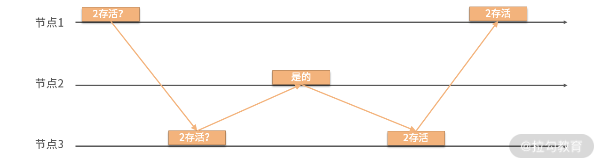
图 4 间接检测法
如图所示，节点 1 无法直接去判断节点 2 是否存活，这个时候它转而询问其相邻节点 3。由节点 3 去询问节点 2 的健康情况，最后将此信息由节点 3 返回给节点 1。
这种算法的好处是不需要将心跳检测进行广播，而是通过有限的网络连接，就可以检测到集群中各个分组内的健康情况，从而得知整个集群的健康情况。此种方法由于使用了组内的多个节点进行检测，其算法的准确度相比于一个节点去检测提高了很多。同时我们可以并行进行检测，算法的收敛速度也是很快的。因此可以说，间接检测法在准确度和效率上取得了比较好的平衡。
但是在大规模分布式数据库中，心跳检测法会面临效率上的挑战，那么何种算法比较好处理这种挑战呢？下面我要为你介绍 Gossip 协议检测法。
Gossip 协议检测
除了心跳检测外，在大型分布式数据库中一个比较常用的检测方案就是 Gossip 协议检测法。Gossip 的原理是每个节点都检测与它相邻的节点，从而可以非常迅速地发现系统内的异常节点。
算法的细节是每个节点都有一份全局节点列表，从中选择一些节点进行检测。如果成功就增加成功计数器，同时记录最近一次的检测时间；而后该节点把自己的检测列表的周期性同步给邻居节点，邻居节点获得这份列表后会与自己本地的列表进行合并；最终系统内所有节点都会知道整个系统的健康状态。
如果某些节点没有进行正确响应，那么它们就会被标记为失败，从而进行后续的处理。这里注意，要设置合适的阈值来防止将正常的节点标记为错误。Gossip 算法广泛应用在无主的分布式系统中，比较著名的 Cassandra 就是采用了这种检测手法。
我们会发现，这种检测方法吸收了上文提到的间接检测方法的一些优势。每个节点是否应该被认为失败，是由多个节点判断的结果推导出的，并不是由单一节点做出的判断，这大大提高了系统的稳定性。但是，此种检测方法会极大增加系统内消息数量，故选择合适的数据包成为优化该模式的关键。这个问题我会在“17 | 数据可靠传播：反熵理论如何帮助数据库可靠工作”中详细介绍 Gossip 协议时给出答案。
Cassandra 作为 Gossip 检测法的主要案例，它同时还使用了另外一种方式去评价节点是否失败，那就是 φ 值检测法。
φ 值检测
以上提到的大部分检测方法都是使用二元数值来表示检测的结果，也就是一个节点不是健康的就是失败了，非黑即白。而 φ 值检测法引入了一个变量，它是一个数值，用来评价节点失败的可能性。现在我们来看看这个数值是如何计算的。
首先，我们需要生成一个检测消息到达的时间窗口，这个窗口保存着最近到的检测消息的延迟情况。根据这个窗口内的数值，我们使用一定的算法来“预测”未来消息的延迟。当消息实际到达时，我们用真实值与预测值来计算这个 φ 值。
其次，给 φ 设置一个阈值，一旦它超过这个阈值，我们就可以将节点设置为失败。这种检测模式可以根据实际情况动态调整阈值，故可以动态优化检测方案。同时，如果配合 Gossip 检测法，可以保证窗口内的数据更加有代表性，而不会由于个别节点的异常而影响 φ 值的计算。故这种评估检测法与 Gossip 检测具有某种天然的联系。
从以上算法的细节出发，我们很容易设计出该算法所需的多个组件。
- 延迟搜集器：搜集节点的延迟情况，用来构建延迟窗口。
- 分析器：根据搜集数据计算 φ 值，并根据阈值判断节点是否失败。
- 结果执行器：一旦节点被标记为失败，后续处理流程由结果执行器去触发。
你可以发现，这种检测模式将一个二元判断变为了一个连续值判断，也就是将一个开关变成了一个进度条。这种模式其实广泛应用在状态判断领域，比如 APM 领域中的 Apdex 指标，它也是将应用健康度抽象为一个评分，从而更细粒度地判断应用性能。我们看到，虽然这类算法有点复杂，但可以更加有效地判断系统的状态。
总结
这一讲内容比较简单、易理解，但是却非常重要且应用广泛。作为大部分分布式算法的基础，之后我要介绍的所有算法都包含今天所说的失败检测环节。
这一讲的算法都是在准确性与效率上直接进行平衡的。有些会使用点对点的心跳模式，有些会使用 Gossip 和消息广播模式，有些会使用单一的指标判断，而有些则使用估算的连续变换的数值……它们有各自的优缺点，但都是在以上两种特点之间去平衡的。当然简单性也被用作衡量算法实用程度的一个指标，这符合 UNIX 哲学，简单往往是应对复杂最佳的利器。
大部分分布式数据库都是主从模式，故一般由主节点进行失败检测，这样做的好处是能够有效控制集群内的消息数量，下一讲我会为你介绍如何在集群中选择领导节点。
15 领导选举：如何在分布式系统内安全地协调操作？
这一讲我们来聊聊如何在分布式数据库，乃至一般性的分布式系统内同步数据。
不知道你是否发现这样一种事实：同步数据是一种代价非常高昂的操作，如果同步过程中需要所有参与的节点互相进行操作，那么其通信开销会非常巨大。
如下图所示，随着参与节点的增加，其通信成本逐步提高，最终一定会导致数据在集群内不一致。尤其在超大型和地理空间上分散的集群网络中，此现象会进一步被放大。
为了减少同步通信开销和参与节点的数量，一些算法引入了“领导者”（有时称为协调者），负责协调分布式系统内的数据同步。
领导选举
通常，分布式系统中所有节点都是平等的关系，任何节点都可以承担领导角色。节点一旦成为领导，一般在相当长的时间内会一直承担领导的角色，但这不是一个永久性的角色。原因也比较容易想到：节点会崩溃，从而不能履行领导职责。
现实生活中，如果你的领导由于个人变故无法履职，组织内会重新选择一个人来替代他。同样，在领导节点崩溃之后，任何其他节点都可以开始新一轮的选举。如果当选，就承担领导责任，并继续从前一个领导节点退出的位置开始工作。
领导节点起到协调整个集群的作用，其一般职责包括：
- 控制广播消息的总顺序；
- 收集并保存全局状态；
- 接收消息，并在节点之间传播和同步它们；
- 进行系统重置，一般是在发生故障后、初始化期间，或重要系统状态更新时操作。
集群并不会经常进行领导选举流程，一般会在如下两个场景中触发选举：
- 在初始化时触发选举，称为首次选举领导；
- 当前一位领导者崩溃或无法通信时。
选举算法中的关键属性
当集群进入选举流程后，其中的节点会应用选举算法来进行领导选举，而这些选举算法一般包含两个属性：“安全性”（Safety）和“活跃性”（Liveness）。它们是两个非常重要且比较基础的属性，最早由莱斯利·兰伯特（ L.Lamport——分布式计算的开创者）提出。
在解释这两个属性的含义之前，我们先想象一下工作生活中是如何选举领导的？领导通常来源于一组候选人，选举规则需包含如下两点。
- 选举必须产生一个领导。如果有两个领导，那么下属应该听从他们中谁的指示呢？领导选举本来是解决协调问题的，而多个领导不仅没有解决这个问题，反而带来了更大问题。
- 选举必须有结果。较为理想的状态是：领导选举需要在大家可以接受的时间内有结果。如果领导长时间没有被选举出来，那么必然造成该组织无法开展正常的工作。因为没人来协调和安排工作，整个组织内部会变得混乱无序。
以上两个规则正好对应到算法的两个属性上。
其中第一个规则对应了算法的“安全性”（Safety），它保证一次最多只有一个领导者，同时完全消除“脑裂”（Split Brain）情况的可能性（集群被分成两个以上部分，并产生多个互相不知道对方存在的领导节点）。然而，在实践中，许多领导人选举算法违反了这个属性。下面在介绍“脑裂”的时候会详细讲解如何解决这个问题。
第二个规则代表了选举算法的“活跃性”（Liveness），它保证了在绝大多数时候，集群内都会有一个领导者，选举最终会完成并产生这个领导，即系统不应无限期地处于选举状态。
满足了以上两个属性的算法，我们才称其为有效的领导选举算法。
领导选举与分布式锁
领导选举和分布式锁在算法层面有很高的重合性，前者选择一个节点作为领导，而后者则是作为锁持有者，因此很多研发人员经常将二者混为一谈。那么现在，让我们比较一下领导者选举和分布式锁的区别。
分布式锁是保证在并发环境中，一些互斥的资源，比如事务、共享变量等，同一时间内只能有一个节点进行操作。它也需要满足上文提到的安全性和活跃性，即排他锁每次只能分配给一个节点，同时该节点不会无限期持有锁。
从理论上看，虽然它们有很多相似之处，但也有比较明显的区别。如果一个节点持有排他锁，那么对于其他节点来说，不需要知道谁现在持有这个锁，只要满足锁最终将被释放，允许其他人获得它，这就是前文所说的“活跃性”。
与此相反，选举过程完全不是这样，集群中的节点必须要知道目前系统中谁是领导节点，因为集群中其他节点需要感知领导节点的活性，从而判断是否需要进入到选举流程中。因此，新当选的领导人必须将自己的角色告知给它的下属。
另一个差异是：如果分布式锁算法对特定的节点或节点组有偏好，也就是非公平锁，它最终会导致一些非优先节点永远都获得不了共享资源，这与“活跃性”是矛盾的。但与其相反，我们一般希望领导节点尽可能长时间地担任领导角色，直到它停止或崩溃，因为“老”领导者更受大家的欢迎。
解决单点问题
在分布式系统中，具有稳定性的领导者有助于减小远程节点的状态同步消耗，减少交换消息的数量；同时一些操作可以在单一的领导节点内部进行，避免在集群内进行同步操作。在采用领导机制的系统中，一个潜在的问题是由于领导者是单节点，故其可能成为性能瓶颈。
为了克服这一点，许多系统将数据划分为不相交的独立副本集，每个副本集都有自己的领导者，而不是只有一个全局领导者，使用这种方法的系统代表是 Spanner（将在第 17 讲“分布式事务”中介绍）。由于每个领导节点都有失败的可能，因此必须检测、报告，当发生此种情况时，一个系统必须选出另一个领导人来取代失败的领导人。
上面整体介绍了领导选举的使用场景和算法特点，那么领导选举是怎样操作的呢？
典型的算法包括：Bully 算法、ZAB（Zookeeper Atomic Broadcast）、Multi-Paxos 和 RAFT 等。但是除了 Bully 算法外，其他算法都使用自己独特的方法来同时解决领导者选举、故障检测和解决竞争领导者节点之间的冲突。所以它们的内涵要远远大于领导选举这个范畴，限于篇幅问题，我将会在下一讲详细介绍。
基于以上的原因，下面我将使用 Bully 算法及其改进算法来举例说明典型的领导选举流程。Bully 算法简单且容易进行收敛，可以很好地满足“活跃性”；同时在无网络分区的情况下，也能很好地满足“安全性”。
经典领导选举算法：Bully 算法
这是最常用的一种领导选举算法，它使用节点 ID的大小来选举新领导者。在所有活跃的节点中，选取节点 ID 最大或者最小的节点为主节点。
以下采用“ID 越大优先级越高”的逻辑来解释算法：
每个节点都会获得分配给它的唯一 ID。在选举期间，ID 最大的节点成为领导者。因为 ID 最大的节点“逼迫”其他节点接受它成为领导者，它也被称为君主制领导人选举：类似于各国王室中的领导人继承顺位，由顺位最高的皇室成员来继承皇位。如果某个节点意识到系统中没有领导者，则开始选举，或者先前的领导者已经停止响应请求。
算法包含 4 个步骤：
- 集群中每个活着的节点查找比自己 ID 大的节点，如果不存在则向其他节点发送 Victory 消息，表明自己为领导节点；
- 如果存在比自己 ID 大的节点，则向这些节点发送 Election 消息，并等待响应；
- 如果在给定的时间内，没有收到这些节点回复的消息，则自己成为领导节点，并向比自己 ID 小的节点发送 Victory 消息；
- 节点收到比自己 ID 小的节点发送的 Election 消息，则回复 Alive 消息。
上图举例说明了 Bully 领导者选举算法，其中：
- 节点3 注意到先前的领导者 6 已经崩溃，并且通过向比自己 ID 更大的节点发送选举消息来开始新的选举；
- 4 和 5 以 Alive 响应，因为它们的 ID 比 3 更大；
- 3 通知在这一轮中作出响应的最大 ID 节点是5；
- 5 被选为新领导人，它广播选举信息，通知排名较低的节点选举结果。
这种算法的一个明显问题是：它违反了“安全性”原则（即一次最多只能选出一位领导人）。在存在网络分区的情况下，在节点被分成两个或多个独立工作的子集的情况下，每个子集选举其领导者。
该算法的另一个问题是：它对 ID较大的节点有强烈的偏好，但是如果它们不稳定，会严重威胁选举的稳定性，并可能导致不稳定节点永久性地连任。即不稳定的高排名节点提出自己作为领导者，不久之后失败，但是在新一轮选举中又赢得选举，然后再次失败，选举过程就会如此重复而不能结束。这种情况，可以通过监控节点的存活性指标，并在选举期间根据这些指标来评价节点的活性，从而解决该问题。
Bully 算法的改进
Bully 算法虽然经典，但由于其相对简单，在实际应用中往往不能得到良好的效果。因此在分布式数据库中，我们会看到如下所述的多种演进版本来解决真实环境中的一些问题，但需要注意的是，其核心依然是经典的 Bully 算法。
改进一：故障转移节点列表
有许多版本的 Bully 算法的变种，用来改善它在各种场景下的表现。例如，我们可以使用多个备选节点作为在发生领导节点崩溃后的故障转移目标，从而缩短重选时间。每个当选的领导者都提供一个故障转移节点列表。当集群中的节点检测到领导者异常时，它通过向该领导节点提供的候选列表中排名最高的候选人发送信息，开始新一轮选举。如果其中一位候选人当选，它就会成为新的领导人，而无须经历完整的选举。
如果已经检测到领导者故障的进程本身是列表中排名最高的进程，它可以立即通知其他节点自己就是新的领导者。
上图显示了采用这种优化方式的过程，其中：
- 6是具有指定候选列表 {5，4} 的领导者，它崩溃退出，3 注意到该故障，并与列表中具有最高等级的备选节点5 联系；
- 5 响应 3，表示它是 Alive 的，从而防止 3 与备选列表中的其他节点联系；
- 5 通知其他节点它是新的领导者。
因此，如果备选列表中，第一个节点是活跃的，我们在选举期间需要的步骤就会更少。
改进二：节点分角色
另一种算法试图通过将节点分成候选和普通两个子集来降低消息数量，其中只有一个候选节点可以最终成为领导者。普通节点联系候选节点、从它们之中选择优先级最高的节点作为领导者，然后将选举结果通知其余节点。
为了解决并发选举的问题，该算法引入了一个随机的启动延迟，从而使不同节点产生了不同的启动时间，最终导致其中一个节点在其他节点之前发起了选举。该延迟时间通常大于消息在节点间往返时间。具有较高优先级的节点具有较低的延迟，较低优先级节点延迟往往很大。
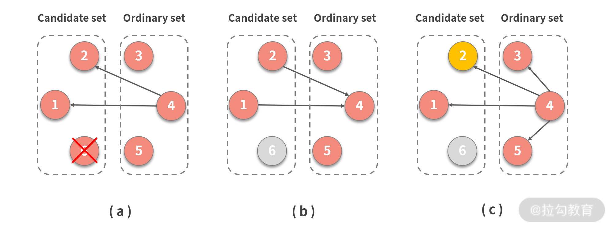 上图显示了选举过程的步骤，其中：
- 节点4 来自普通的集合，它发现了崩溃的领导者 6，于是通过联系候选集合中的所有剩余节点来开始新一轮选举；
- 候选节点响应并告知 4 它们仍然活着；
- 4通知所有节点新的领导者是 2。
该算法减小了领导选举中参与节点的数量，从而加快了在大型集群中该算法收敛的速度。
改进三：邀请算法
邀请算法允许节点“邀请”其他进程加入它们的组，而不是进行组间优先级排序。该算法允许定义多个领导者，从而形成每个组都有其自己的领导者的局面。每个节点开始时都是一个新组的领导者，其中唯一的成员就是该节点本身。
组领导者联系不属于它们组内的其他节点，并邀请它们加入该组。如果受邀节点本身是领导者，则合并两个组；否则，受邀节点回复它所在组的组长 ID，允许两个组长直接取得联系并合并组，这样大大减少了合并的操作步骤。
 上图显示了邀请算法的执行步骤，其中：
上图显示了邀请算法的执行步骤，其中：
- 四个节点形成四个独立组，每个节点都是所在组的领导，1 邀请 2 加入其组，3 邀请 4 加入其组；
- 2 加入节点 1的组，并且 4 加入节点3的组，1 为第一组组长，联系人另一组组长 3，剩余组成员（在本例中为 4个）获知了新的组长 1；
- 合并两个组，并且 1 成为扩展组的领导者。
由于组被合并，不管是发起合并的组长成为新的领导，还是另一个组长成为新的领导。为了将合并组所需的消息数量保持在最小，一般选择具有较大 ID 的组长的领导者成为新组的领导者，这样，只有来自较小 ID 组的节点需要更新领导者。
与所讨论的其他算法类似，该算法采用“分而治之”的方法来收敛领导选举。邀请算法允许创建节点组并合并它们，而不必从头开始触发新的选举，这样就减少了完成选举所需的消息数量。
改进四：环形算法
在环形算法中，系统中的所有节点形成环，并且每个节点都知道该环形拓扑结构，了解其前后邻居。当节点检测到领导者失败时，它开始新的选举，选举消息在整个环中转发，方式为：每个节点联系它的后继节点（环中离它最近的下一节点）。如果该节点不可用，则跳过该节点，并尝试联系环中其后的节点，直到最终它们中的一个有回应。
节点联系它们的兄弟节点，收集所有活跃的节点从而形成可用的节点集。在将该节点集传递到下一个节点之前，该节点将自己添加到集合中。
该算法通过完全遍历该环来进行。当消息返回到开始选举的节点时，从活跃集合中选择排名最高的节点作为领导者。
如上图所示，你可以看到这样一个遍历的例子：
- 先前的领导 6失败了，环中每个节点都从自己的角度保存了一份当前环的拓扑结构；
- 以 3 为例，说明查找新领导的流程，3 通过开始遍历来发起选举轮次，在每一步中，节点都按照既定路线进行遍历操作，5 不能到 6，所以跳过，直接到 1；
- 由于 5 是具有最高等级的节点，3 发起另一轮消息，分发关于新领导者的信息。
该算法的一个优化方法是每个节点只发布它认为排名最高的节点，而不是一组活跃的节点，以节省空间：因为 Max 最大值函数是遵循交换率的，也就是知道一个最大值就足够了。当算法返回到已经开始选举的节点时，最后就得到了 ID 最大的节点。
另外由于环可以被拆分为两个或更多个部分，每个部分就会选举自己的领导者，这种算法也不具备“安全性”。
如前所述，要使具有领导的系统正常运行，我们需要知道当前领导的状态。因此，为了系统整体的稳定性，领导者必须保证是一直活跃的，并且能够履行其职责。为了检测领导是否崩溃，可以使用我上一讲介绍过的故障检测算法。
解决选举算法中的脑裂问题
我们需要注意到，在本讲中讨论的所有算法都容易出现脑裂的问题，即最终可能会在独立的两个子网中出现两个领导者，而这两个领导并不知道对方的存在。
为了避免脑裂问题，我们一般需要引入法定人数来选举领导。比如 Elasticsearch 选举集群领导，就使用Bully 算法结合最小法定人数来解决脑裂问题。
如上图所示，目前有 2 个网络、5 个节点，假定最小法定人数是3。A 目前作为集群的领导，A、B 在一个网络，C、D 和 E 在另外一个网络，两个网络被连接在一起。
当这个连接失败后，A、B 还能连接彼此，但与 C、D 和 E 失去了联系。同样， C、D 和 E 也能知道彼此，但无法连接到A 和B。
 此时，C、D 和 E 无法连接原有的领导 A。同时它们三个满足最小法定人数3，故开始进行新一轮的选举。假设 C 被选举为新的领导，这三个节点就可以正常进行工作了。
此时，C、D 和 E 无法连接原有的领导 A。同时它们三个满足最小法定人数3，故开始进行新一轮的选举。假设 C 被选举为新的领导，这三个节点就可以正常进行工作了。
而在另外一个网络中，虽然 A 是曾经的领导，但是这个网络内节点数量是 2，小于最小法定人数。故 A 会主动放弃其领导角色，从而导致该网络中的节点被标记为不可用，从而拒绝提供服务。这样就有效地避免了脑裂带来的问题。
总结
领导选举是分布式系统中的一个重要课题，这是因为使用固定的领导者非常有助于减少协调开销并提高系统的性能。选举过程可能成本很高，但由于不是很频繁，因此不会对整个系统性能产生严重影响。单一的领导者可能成为瓶颈，但我们可以通过对数据进行分区并使用每个分区的领导者来解决这个问题，或对不同的操作使用不同的领导者。
许多共识算法，包括Multi-Paxos 和 RAFT一般都有选举的过程。但是共识算法的内涵相比于单纯的选举算法更为丰富，所以我在“19 | 共识算法：一次性说清楚 Paxos、Raft 等算法的区别”中会专门来和你讨论。
能力越强，责任越大。领导节点虽然解决了系统内数据同步的问题，但由于其承担重大责任，一旦发生问题将会产生严重的影响。故一个稳定高效的选举算法是领导模式的关键。
领导者的状态可能在节点不知道的情况下发生变化，所以集群内节点需要及时了解领导节点是否仍然活跃。为了实现这一点，我们需要将领导选举与故障检测结合起来。例如，稳定领导者选举算法使用具有独特的稳定领导者和基于超时的故障检测的轮次，以保证领导者可以被重新选举，从而保留它的领导地位。前提是只要它不会崩溃，并且可以访问。
16 再谈一致性：除了 CAP 之外的一致性模型还有哪些？
在“05 | 一致性与 CAP 模型：为什么需要分布式一致性”中，我们讨论了分布式数据库重要的概念——一致性模型。由于篇幅的限制，我在该部分只谈到了几种数据端（服务端）的强一致模型。那么这一讲，我们将接着讨论剩下的一致性模型，包括客户端（会话）一致性、最终一致性，等等。
现在我就和你一起，把一致性模型的知识体系补充完整。
完整的一致性模型
完整的一致性模型如下图所示。

图中不同的颜色代表了可用性的程度，下面我来具体说说。
- 粉色代表网络分区后完全不可用。也就是 CP 类的数据库。
- 黄色代表严格可用。当客户端一直访问同一个数据库节点，那么遭遇网络分区时，在该一致性下依然是可用的。它在数据端或服务端，被认为是 AP 数据库；而从客户端的角度被认为是 CP 数据库。
- 蓝色代表完全可用。可以看到其中全都是客户端一致性，所以它们一般被认为是 AP 数据库。
我们看到图中从上到下代表一致性程度在降低。我在 05 讲中介绍的是前面三种一致性，现在要介绍剩下的几种，它们都是客户端一致性。
客户端一致性
客户端一致性是站在一个客户端的角度来观察系统的一致性。我们之前是从“顺序性”维度来研究一致性的，因为它们关注的是多个节点间的数据一致性问题。而如果只从一个客户端出发，我们只需要研究“延迟性”。
分布式数据库中，一个节点很可能同时连接到多个副本中，复制的延迟性会造成它从不同副本读取数据是不一致的。而客户端一致性就是为了定义并解决这个问题而存在的，这其中包含了写跟随读、管道随机访问存储、读到已写入、单增读和单增写。
写跟随读（Writes Follow Reads）
WFR 的另一个名字是回话因果（session causal）。可以看到它与因果一致的区别是，它只针对一个客户端。故你可以对比记忆，它是对于一个客户端，如果一次读取到了写入的值 V1，那么这次读取之后写入了 V2。从其他节点看，写入顺序一定是 V1、V2。
WFR 的延迟性问题可以描述为：当写入 V1 时，是允许复制延迟的。但一旦 V1 被读取，就需要认为所有副本中 V1 已经被写入了，从而保证从副本写入 V2 时的正确性。
管道随机访问存储（PRAM）/FIFO
管道随机访问存储的名字来源于共享内存访问模型。像 05 讲中我们提到的那样，分布式系统借用了并发内存访问一致性的概念来解释自己的问题。后来，大家觉得这个名字很怪，故改用 FIFO，也就是先进先出，来命名分布式系统中类似的一致性。
它被描述为从一个节点发起的写入操作，其他节点与该节点的执行顺序是一致的。它与顺序一致性最大的区别是，后者是要求所有节点写入都是有一个固定顺序的；而 PRAM 只要求一个节点自己的操作有顺序，不同节点可以没有顺序。
PRAM 可以拆解为以下三种一致性。
- 读到已写入（Read Your Write）：一个节点写入数据后，在该节点或其他节点上是能读取到这个数据的。
- 单增读（Monotonic Read）：它强调一个值被读取出来，那么后续任何读取都会读到该值，或该值之后的值。
- 单增写（Monotonic Write）：如果从一个节点写入两个值，它们的执行顺序是 V1、V2。那么从任何节点观察它们的执行顺序都应该是 V1、V2。
同时满足 RYW、MR 和 MW 的一致性就是 PRAM。PRAM 的实现方式一般是客户端一直连接同一个节点，因为读写同一个节点，故不存在延迟性的问题。
我们可以将 PRAM 与 WFR 进行组合，从而获得更强的因果一致。也就是一个客户端连接同一个节点，同时保持回话因果一致，就能得到一个普通的因果一致。这种模式与 05 讲中介绍的是不一样的，这次我们是采用模型递推的模式去构建一致性，目的是方便模型记忆。但这并不代表因果一致一定是这种模型化的构建方式；相反，在 05 讲中介绍的时间戳模式更为普遍。
我们刚才说到，PRAM 是严格可用的，并不是完全可用，如果要完全可用一般可以牺牲 RYW，只保留 MR 和 MW。这种场景适合写入和读取由不同的客户端发起的场景。
至此，我们已经将所有的强一致模型介绍了一遍。掌握上面那个图，你就掌握了完整的一致性模型。下面我要为你介绍最弱的一致性模型，也就是最终一致。
最终一致性
最终一致性是非常著名的概念。随着互联网和大型分布式系统的发展，这一概念被广泛地传播。它被表述为副本之间的数据复制完全是异步的，如果数据停止修改，那么副本之间最终会完全一致。而这个最终可能是数毫秒到数天，乃至数月，甚至是“永远”。
最终一致性具有最高的并发度，因为数据写入与读取完全不考虑别的约束条件。如果并发写入修改同一份数据，一般采用之前提到的一些并发冲突解决手段来处理，比如最后写入成功或向量时钟等。
但是，最终一致性在分布式数据库中是完全不可用的。它至少会造成各种偏序（skew）现象，比如写入数据后读取不出来，或者一会儿能读取出来，一会儿又读取不出来。因为数据库系统是底层核心系统，许多应用都构建在它上面，此种不稳定表现在分布式数据库设计中是很难被接受的。故我们经常采用可调节的最终一致性，来实现 AP 类的分布式数据库。
可调节一致性
一般的分布式系统的写入和读取都是针对一个节点，而可调节一致性针对最终一致性的缺点，提出我们可以同时读取多个节点。现在我们引入可调节一致性设计的三个变量。
- 副本数量 N：是分布式集群中总的节点数量，也就是副本总量。
- 最少并发写入数量 W：当一份数据同步写入该数量的节点后，我们认为该数据是写入成功的。
- 最少并发读取数量 R：当读取数据时，至少读取该数量的节点，比较后选择最终一份最新的数据。如此我们才认为一次读取操作是成功的。
当分布式系统的并发读写数量满足下面的公式：
W + R > N
这时我们认为该系统的并发度可以满足总是能读取到最新的数据。因为你可以发现，写入节点与读取的节点之间肯定存在重合，所以每次读取都会发现最新写入的一个节点。
一个常见的例子是 N=3、W=2 和 R=2。这个时候，系统容忍一个节点失效。正常情况下三个节点都能提供读写服务，如果其中一个节点失效，读写的最少节点数量依然可以满足。在三个节点同时工作的情况下，最新数据至少在两个节点中，所以从三个里面任意读取两个，其中至少一个节点存在最新的数据。
你可能注意到，我上文用了很多“最少”这种描述。这说明在实际中实现这种分布式数据库时，可以在写入时同时写入三个节点。但此时只要其中两个节点返回成功，我们就认为写入成功了。读取也同样，我们可以同时发起三个读取，但只需要获取最快返回的两个结果即可。
那么有的人会问，为什么不每次写入或读取全部节点呢？我的回答是也可以的，比如对于写入负载较高的场景可以选择 W=1、R=N；相反，对于读取负载高的场景可以选择 W=N、R=1。你不难发现这两种模式分别就是上文讨论的强一致性：前者是客户端一致性，后者是数据一致性（同步复制）。故可调节一致性同时涵盖了弱一致性到强一致性的范围。
如何选择 W 和 R 呢？增加 W 和 R 会提高可用性，但是延迟会升高，也就是并发度降低；反之亦然。一个常用的方式是 Quorums 方法，它是集群中的大多数节点。比如一个集群有 3 个节点，Quorums 就是 2。这个概念在分布式数据库中会反复提及，比如领导选举、共识等都会涉及。
对于可调节一致性，如果我们的 W 和 R 都为 Quorums，那么当系统中失败节点的数量小于 Quorums 时，都可以正常读写数据。该方法是一种在并发读与可用性之间取得最佳平衡的办法。因为 W 和 R 比 Quorums 小，就不满足 W+R>N；而大于 Quorums 只降低了并发度，可用性是不变的。因为 W 和 R 越大，可失败的节点数量越小。
但是使用 Quorums 法有一个经典的注意事项，那就是节点数量应为奇数，否则就无法形成多数的 Quorums 节点。
Witness 副本
我在上文介绍了利用 Quorums 方法来提高读取的可用性。也就是写入的时候写入多个副本，读取的时候也读取多个副本，只要这两个副本有交集，就可以保证一致性。虽然写入的时候没有写入全部副本，但是一般需要通过复制的方式将数据复制到所有副本上。比如有 9 个节点，Quorums 是 5，即使一开始写入了 5 个节点，最终 9 个节点上都会有这一份数据。这其实增加了对于磁盘的消耗，但是对于可用性没有实质的提高。
我们可以引入 Witeness 副本来改善上面这种情况，将集群中的节点分为复制节点与 Witness 节点。复制节点保存真实数据，但 Witeness 节点在正常情况下不保存数据。但是当集群中的可用节点数量降低的时候，我们可以将一部分 Witeness 节点暂时转换为可以存储数据的节点。当集群内节点恢复后，我们又可以将它们再次转换为 Witeness 节点，并释放上面存储的数据。
那么需要使用多少个 Witeness 副本来满足一致性呢？假设我们现在有 r 个复制副本和 w 个 Witeness 副本。那么总副本数量为 r+w，需要满足下面两个规则：
- 读写操作必须要有 Quorums 数量的节点，也就是 (r+w)/2+1 个节点参与；
- 在条件 1 给出的节点中，至少有一个节点是复制节点。
只要满足这两条规则，就可以保证 Witeness 节点的加入是满足一致性要求的。
现在分布式数据库广泛使用 Witeness 节点来提高数据存储的利用率，如 Apache Cassandra、Spanner 和 TiDB 等。但是它们的使用方法不尽相同，感兴趣的话你可以自己深入研究。
CRDT 算法
上文我们探讨了最终一致性方案，除了使用可调节手段来保持一致性外。我们可以使用 Conflict-Free Replicated Data Type（CRDT）来解决最终一致的数据冲突问题。
CAP 理论提出者 Eric Brewer 撰文回顾 CAP 时也提到，C 和 A 并不是完全互斥，建议大家使用 CRDT 来保障一致性。自此各种分布式系统和应用均开始尝试 CRDT，微软的 CosmosDB 也使用 CRDT 作为多活一致性的解决方案，而众多云厂商也使用 CRDT 来制定 Redis 的多活一致性方案。
由于目前 CRDT 算法仍然处于高速发展的阶段，为了方便你理解，我这里选取携程网内部 Redis 集群一致性方案，它的技术选型相对实用。如果你对 CRDT 有兴趣，可以进一步研究，这里就不对诸如 PN-Counter、G-Set 等做进一步说明了。
由于 Redis 最常用的处理手段是设置字符串数据，故需要使用 CRDT 中的 register 进行处理。携程团队选择了经典的 LWW Regsiter，也就是最后写入胜利的冲突处理方案。
这种方案，最重要的是数据上需要携带时间戳。我们用下图来说明它的流程。

从图中可以看到，每个节点的数据是一个二元组，分别是 value 和 timestamp。可以看到节点间合并数据是根据 timestamp，也就是谁的 timestamp 大，合并的结果就以哪个值为准。使用 LWW Register 可以保证高并发下合并结果最终一致。
而删除时，就需要另外一种算法了。那就是 Observed-Remove SET（OR Set），其主要的目的是解决一般算法无法删除后重新增加该值的情况。
它相较于 LWW-Register 会复杂一些，除了时间戳以外，还需要给每个值标记一个唯一的 tag。比如上图中 P1 设置（1，3），实际需要设置（1α，3）；而后如果删除 1，集合就为空；再添加 1 时，标签就需要与一开始不同，为（1β，5）。这样就保证步骤 2 中的删除操作不会影响步骤 3 中的增加操作。因为它们虽然数值相同，但是标签不同，所以都是唯一的。
以上就是 Redis 跨 IDC 异步同步的核心技术方案，当然细节还是有很多的，有兴趣的话你可以自行学习。
总结
到这里，我们已经学习了分布式数据库中关于一致性问题的全部内容。这部分你要理解一致性模型图，从而可以系统地掌握数据端一致性与客户端一致性；同时结合 CAP 理论体会不同一致性所对应的可用性。
最终一致性一般应用在跨数据中心、跨区域节点这种无主同步的场景，使用可调节的一致性和 CRDT 算法可以保证同步的一致性。
学习一致性部分后，我们就可以评估各种分布式数据库文档中的一致性概念了，从而理解它们背后的设计理念。在本模块的最后一讲，我会举例说明一些分布式数据库一致性方面的背后逻辑。
欢迎你和我一起思考，祝你每天能强大一点。下一讲我们将探讨数据是如何可靠进行传输的，希望准时与你相见。
17 数据可靠传播：反熵理论如何帮助数据库可靠工作？
上一讲我们完整地介绍了一致性的概念，其中一致性程度最低的是最终一致性。在最终一致性的条件下，节点间需要经过一段时间的数据同步，才能将最新数据在节点间进行分发。这就需要这些最新产生的数据能在节点间稳定地传播。
但是，现实是非常无情的，数据传播中会遇到各种故障，如节点崩溃失败、网络异常、同步数据量巨大造成延迟高等情况，最终会造成最终一致性集群内部节点间数据差异巨大。随着时间的推移，集群向着越来越混乱的局面恶化。
以上描述的场景就是“熵增”。这是一个物理学概念，在 2020 年上映的影片“Tenet”中，对“熵”的概念有过普及，其中把熵描述为与时间有关，好像熵增就是正向时间，熵减就是时间倒流。
其实熵与时间之间是间接关系。19 世纪的时候，科学家发现不借助外力，热力总是从高温物体向低温物理传播，进而出现一个理论：在封闭系统内且没有外力作用下，熵总是增的。而时间也是跟随熵增一起向前流动的。影片假设，如果能将熵减小，时间就应该可以随之倒流。
熵的概念深入了各个领域中，一般都表示系统总是向混乱的状态变化。在最终一致性系统中，就表示数据最终有向混乱方向发展的趋势，这个时候我们就要引入“反熵”机制来施加“外力”，从而消除自然状态的“熵增”所带来的影响。
说了这么多，简而言之，就是通过一些外部手段，将分布式数据库中各个节点的数据达到一致状态。那么反熵的手段包含：前台同步、后台异步与 Gossip 协议。现在让我来一一为你介绍。
前台同步
前台同步是通过读与写这两个前台操作，同步性地进行数据一致性修复。它们分别称为读修复（Read Repair）和暗示切换（Hinted Handoff）。
读修复
随着熵逐步增加，系统进入越来越混乱的状态。但是如果没有读取操作，这种混乱其实是不会暴露出去的。那么人们就有了一个思路，我们可以在读取操作发生的时候再来修复不一致的数据。
具体操作是，请求由一个总的协调节点来处理，这个协调节点会从一组节点中查询数据，如果这组节点中某些节点有数据缺失，该协调节点就会把缺失的数据发送给这些节点，从而修复这些节点中的数据，达到反熵的目的。
有的同学可能会发现，这个思路与上一讲的可调节一致性有一些关联。因为在可调节一致性下，读取操作为了满足一致性要求，会从多个节点读取数据从而发现最新的数据结果。而读修复会更进一步，在此以后，会将落后节点数据进行同步修复，最后将最新结果发送回客户端。这一过程如下图所示。

当修复数据时，读修复可以使用阻塞模式与异步模式两种。阻塞模式如上图所示，在修复完成数据后，再将最终结果返还给客户端；而异步模式会启动一个异步任务去修复数据，而不必等待修复完成的结果，即可返回到客户端。
你可以回忆一下，阻塞的读修复模式其实满足了上一讲中客户端一致性提到的读单增。因为一个值被读取后，下一次读取数据一定是基于上一次读取的。也就是说，同步修复的数据可以保证在下一次读取之前就被传播到目标节点；而异步修复就没有如此保证。但是阻塞修复同时丧失了一定的可用性，因为它需要等待远程节点修复数据，而异步修复就没有此问题。
在进行消息比较的时候，我们有一个优化的手段是使用散列来比较数据。比如协调节点收到客户端请求后，只向一个节点发送读取请求，而向其他节点发送散列请求。而后将完全请求的返回值进行散列计算，与其他节点返回的散列值进行比较。如果它们是相等的，就直接返回响应；如果不相等，将进行上文所描述的修复过程。
这种散列模式的一个明显好处是在系统处于稳定的状态时，判断数据一致性的代价很小，故可以加快读取速度并有效降低系统负载。常用的散列算法有 MD5 等。当然，理论上散列算法是有碰撞的可能性的，这意味着一些不一致状态无法检测出来。首先，我们要说在真实场景中，这种碰撞概率是很低的，退一万步讲，即使发生碰撞，也会有其他检测方来修复该差异。
以上就是在读取操作中进行的反熵操作，那么在写入阶段我们如何进行修复呢？下面我来介绍暗示切换。
暗示切换
暗示切换名字听起来很玄幻。其实原理非常明了，让我们看看它的过程，如下图所示。

客户端首先写入协调节点。而后协调节点将数据分发到两个节点中，这个过程与可调节一致性中的写入是类似的。正常情况下，可以保证写入的两个节点数据是一致的。如果其中的一个节点失败了，系统会启动一个新节点来接收失败节点之后的数据，这个结构一般会被实现为一个队列（Queue），即暗示切换队列（HHQ）。
一旦失败的节点恢复了回来，HHQ 会把该节点离线这一个时间段内的数据同步到该节点中，从而修复该节点由于离线而丢失的数据。这就是在写入节点进行反熵的操作。
以上介绍的前台同步操作其实都有一个限制，就是需要假设此种熵增过程发生的概率不高且范围有限。如果熵增大范围产生，那么修复读会造成读取延迟增高，即使使用异步修复也会产生很高的冲突。而暗示切换队列的问题是其容量是有限的，这意味着对于一个长期离线的节点，HHQ 可能无法保存其全部的消息。
那么有没有什么方式能处理这种大范围和长时间不一致的情况呢？下面我要介绍的后台异步方式就是处理此种问题的一些方案。
后台异步
我们之前介绍的同步方案主要是解决最近访问的数据，那么将要介绍的后台异步方案主要面向已经写入较长时间的数据，也就是不活跃的数据。进而使用这种方案也可以进行全量的数据一致性修复工作。
而后台方案与前台方案的关注点是不同的。前台方案重点放在修复数据，而后台方案由于需要比较和处理大量的非活跃数据，故需要重点解决如何使用更少的资源来进行数据比对。我将要为你介绍两种比对技术：Merkle 树和位图版本向量。
Merkle 树
如果想要检查数据的差异，我们一般能想到最直观的方式是进行全量比较。但这种思路效率是很低的，在实际生产中不可能实行。而通过 Merkle 树我们可以快速找到两份数据之间的差异，下图就是一棵典型的 Merkle 树。
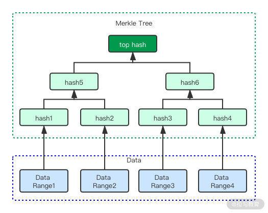
树构造的过程是：
- 将数据划分为多个连续的段。而后计算每个段的哈希值，得到 hash1 到 hash4 这四个值；
- 而后，对这四个值两两分组，使用 hash1 和 hash2 计算 hash5、用 hash3 和 hash4 计算 hash6；
- 最后使用 hash5 和 hash6 计算 top hash。
你会发现数据差异的方式类似于二分查找。首先比较两份数据的 top hash，如果不一致就向下一层比较。最终会找到差异的数据范围，从而缩小了数据比较的数量。而两份数据仅仅有部分不同，都可以影响 top hash 的最终结果，从而快速判断两份数据是否一致。
Merkle 树结合了 checksum 校验与二叉树的特点，可以帮助我们快速判断两份数据是否存在差异。但如果我们想牺牲一定精准性来控制参与比较的数据范围，下面介绍的位图版本向量就是一种理想的选择。
位图版本向量
最近的研究发现，大部分数据差异还是发生在距离当前时间不远的时间段。那么我们就可以针对此种场景进行优化，从而避免像 Merkle 树那样计算全量的数据。而位图版本向量就是根据这个想法发展起来的。
这种算法利用了位图这一种对内存非常友好的高密度数据格式，将节点近期的数据同步状态记录下来；而后通过比较各个节点间的位图数据，从而发现差异，修复数据。下面我用一个例子为你展示这种算法的执行过程，请看下图。

如果有三个节点，每个节点包含了一组与其他节点数据同步的向量。上图表示节点 2 的数据同步情况。目前系统中存在 8 条数据，从节点 2 的角度看，每个节点都没有完整的数据。其中深灰色的部分表明同步的数据是连续的，我们用一个压缩的值表示。节点 1 到 3 这个压缩的值分别为 3、5 和 2。可以看到节点 2 自己的数据是连续的。
数据同步一旦出现不连续的情况，也就是出现了空隙，我们就转而使用位图来存储。也就是图中浅灰色和白色的部分。比如节点 2 观察节点 1，可以看到有三个连续的数据同步，而后状态用 00101 来表示（浅灰色代表 1，白色代表 0）。其中 1 是数据同步了，而 0 是数据没有同步。节点 2 可以从节点 1 和节点 3 获取完整的 8 条数据。
这种向量列表除了具有内存优势外，我们还可以很容易发现需要修复数据的目标。但是它的一个明显缺点与暗示切换队列 HHQ 类似，就是存储是有限的，如果数据偏差非常大，向量最终会溢出，从而不能比较数据间的差异。但不要紧，我们可以用上面提到的 Merkle 来进行全量比较。
以上我介绍了一些常见的反熵手段，它们都可以很好地解决数据一致性问题。但是我们会发现相对于传统的领导节点数据同步，它们同步数据的速度是不好度量的，而且会出现部分节点长期不进行同步的状态。那么有没有一种模式可以提高数据同步的效率呢？答案是肯定的，那就是 Gossip 协议。
Gossip 协议
Gossip 协议可以说是传播非常广泛的分布式协议。因为它的名字非常地形象，用幽默的东北话来说就是“传闲话”。大家可以想象一个东北乡村，屯头树下大家聚在一起“张家长李家短”。一件事只需一会儿整个村庄的人都全知道了。
Gossip 协议就是类似于这种情况。节点间主动地互相交换信息，最终达到将消息快速传播的目的。而该协议又是基于病毒传播模型设计的。2020 年是新冠疫情的灾年，大家都对病毒传播有了深刻理解，那么我现在就用病毒传播模型来解释 Gossip 协议的消息传播模式。
最开始，集群中一个节点产生了一条消息，它的状态为“已感染”。而其他节点我们认为是“易感节点”，这类似于新冠的易感人群。一旦该消息从已感染节点传播到易感节点，这个易感节点把自己的状态转换为已感染，而后接着进行传播。
这里，选择传播的目标使用一个随机函数，从而可以很好地将“病毒”扩展到整个集群中。当然，如果已感染节点不愿意传染其他节点，类似于它被隔离了起来，在其上的消息经过一段时间后会被移除。
我们可以看到 Gossip 模式非常适合于无主集群的数据同步，也就是不管集群中有多少节点参与，消息都可以很健壮地在集群内传播。当然，消息会重复传播到同一个节点上，在实现算法的时候，我们需要尽量减少这种重复数据。
另一个对算法成败重要的影响因素是消息用多快的速度在集群内传播，越快传播不仅会减少不一致的时间，同时可以保证消息不容易丢失。现在我通过几个特性来描述算法的行为。
- 换出数量。它表示为节点选择多少个相邻节点来传播数据。我们很容易知道，当这个值增大后，数据就能更快地传播。但这个值增大同样会增加重复数据的比例，从而导致集群负载增加吞吐量下降。所以我们需要对重复数据进行监控，来实时调整换出数量。
- 传播延迟。这种延迟与我们之前提到的复制延迟不同，它描述的是消息传播到集群中所有节点所需要的时间。它取决于换出数量和集群规模。在一个规模比较大的集群中，我们应该适当提高换出数量，而降低数据传播的延迟。
- 传播停止阈值。当一个节点最近总是收到重复的数据，我们就应该考虑减弱甚至停止这个数据在集群中的传播了，这种过程被形象地称为“兴趣减弱”。我们一般需要计算每个节点重复的数量，并通过一个阈值来确定该数据是否需要停止传播。
以上就是 Gossip 传播模式的一些特点，但是在实际生产中，我们不能完全用随机的模式构造传播网络，那样的话会造成网络信息过载。我们一般会采用一些网络优化的手段。
网络优化
我们刚才提到 Gossip 协议成功的关键之一是控制重复消息的数量，但同时一定程度的重复数量可以保障消息的可用性，从而使集群更加稳健。
一种平衡的方案是构造一个临时的稳定拓扑网络结构。节点可以通过检测发现与其网络相对稳定的节点，从而构建一个子网。子网之间再互相连接，从而构建一个单向传播且无环的树形拓扑结构。这就达到如存在主节点网络一般的传播结构，这种结构可以很好地控制重复的消息，且保证集群中所有节点都可以安全地接收数据。
但是这种结构存在明显的弱点，也就是连接子网之间的节点会成为潜在的瓶颈。一旦这类节点失败，那么子网就会变为信息孤岛，从而丧失 Gossip 算法所带来的稳健性特点。
那有没有一种算法能解决这种孤岛问题呢？我们可以使用混合模式来解决，也就是同时使用树结构与传统 Gossip 随机传播结构。当系统稳定运行时，使用树结构加快信息的传播速度，同时减小重复数据。一旦检测到失败，那么系统退化为 Gossip 模式进行大范围信息同步，来修复失败问题。
总结
最终一致性允许节点间状态存在不一致，那么反熵机制就是帮助最终一致性来修复这些不一致情况的。
我们既可以使用前台的读修复和暗示切换来快速修复最近产生的问题，也可以使用 Merkle 树和位图版本向量这种后台手段来修复全局的一致性问题。如果需要大规模且稳定地同步数据，那么 Gossip 协议将是你绝佳的选择。
至此我们可以说，所有针对分布式系统复制与一致性的问题都已经介绍完了。下一讲我们将进入分布式数据最核心的领域：分布式事务。希望准时与你相见，谢谢。
18 分布式事务（上）：除了 XA，还有哪些原子提交算法吗？
这一讲我认为是整个课程最为精华的部分，因为事务是区别于数据库与一般存储系统最为重要的功能。而分布式数据库的事务由于其难度极高，一直被广泛关注。可以说，不解决事务问题，一个分布式数据库会被认为是残缺的。而事务的路线之争，也向我们展示了分布式数据库发展的不同路径。
提到分布式事务，能想到的第一个概念就是原子提交。原子提交描述了这样的一类算法，它们可以使一组操作看起来是原子化的，即要么全部成功要么全部失败，而且其中一些操作是远程操作。Open/X 组织提出 XA 分布式事务标准就是原子化提交的典型代表，XA 被主流数据库广泛地实现，相当长的一段时间内竟成了分布式事务的代名词。
但是随着 Percolator 的出现，基于快照隔离的原子提交算法进入大众的视野，在 TiDB 实现 Percolator 乐观事务后，此种方案逐步达到生产可用的状态。
这一讲我们首先要介绍传统的两阶段提交和三阶段提交，其中前者是 XA 的核心概念，后者针对两阶段提交暴露的问题进行了改进。最后介绍 Percolator 实现的乐观事务与 TiDB 对其的改进。
两阶段提交与三阶段提交
两阶段提交非常有名，其原因主要有两点：一个是历史很悠久；二是其定义是很模糊的，它首先不是一个协议，更不是一个规范，而仅仅是作为一个概念存在，故从传统的关系统数据库一致的最新的 DistributedSQL 中，我们都可以看到它的身影。
两阶段提交包含协调器与参与者两个角色。在第一个阶段，协调器将需要提交的数据发送给参与者，同时询问参与者是否能够提交该数据，而后参与者返回投票结果。在第二阶段，协调器根据参与者的投票结果，决定是提交还是取消这次事务，而后将结果发送给每个参与者，参与者根据结果来提交本地的事务。
可以看到两阶段提交的核心是协调器。它一般被实现为一个领导节点，你可以回忆一下领导选举那一讲。我们可以使用多种方案来选举领导节点，并根据故障检测机制来探测领导节点的健康状态，从而确定是否要重新选择一个领导节点作为协调器。另外一种常见的实现是由事务发起者来充当协调器，这样做的好处是协调工作被分散到多个节点上，从而降低了分布式事务的负载。
整个事务被分解为两个过程。
- 准备阶段。协调器向所有参与节点发送 Propose 消息，该消息中包含了该事务的全部信息。而后所有参与节点收到该信息后，进行提交决策——是否可以提交该事务，如果决定提交该事务，它们就告诉协调器同意提交；否则，它们告诉协调器应该终止该事务。协调器和所有参与者分别保存该决定的结果，用于故障恢复。
- 提交或终止。如果有任何一个参与者终止了该事务，那么所有参与者都会收到终止该事务的结果，即使他们自己认为是可以提交该事务的。而只有当所有参与者全票通过该事务时，协调器才会通知它们提交该事务。这就是原子提交的核心理念：全部成功或全部失败。
我们可以看到两阶段提交是很容易理解的，但是其中却缺少大量细节。比如数据是在准备阶段还是在提交阶段写入数据库？每个数据库对该问题的实现是不同的，目前绝大多数实现是在准备阶段写入数据。
两阶段提交正常流程是很容易理解的，它有趣的地方是其异常流程。由于有两个角色和两个阶段，那么异常流程就分为 4 种。
- 参与者在准备阶段失败。当协调者发起投票后，有一个参与者没有任何响应（超时）。协调者就会将这个事务标记为失败，这与该阶段投票终止该事务是同样的结果。这虽然保证了事务的一致性，但却降低了分布式事务整体的可用性。下一讲我会介绍 Spanner 使用 Paxos groups 来提高参与者的可用度。
- 参与者在投票后失败。这种场景描述了参与者投赞成票后失败了，这个时候必须保证该节点是可以恢复的。在其恢复流程里，需要首先与协调器取得联系，确认该事务最终的结果。然后根据其结果，来取消或者提交该事务。
- 协调器在投票后失败。这是第二个阶段，此时协调器和参与者都已经把投票结果记录下来了。如果协调器失败，我们可以将备用协调器启动，而后读取那个事务的投票结果，再向所有参与者发送取消或者提交该事务的消息。
- 协调器在准备阶段失败。这是在第一阶段，该阶段存在一个两阶段提交的缺点。在该阶段，协调器发送消息没有收到投票结果，这里所说的没有收到结果主要指结果没有记录到日志里面。此时协调器失败了，那么备用协调器由于缺少投票结果的日志，是不能恢复该事务的。甚至其不知道有哪些参与者参与了这个事务，从而造成参与者无限等待。所以两阶段提交又称为阻塞提交算法。
三阶段相比于两阶段主要是解决上述第 4 点中描述的阻塞状态。它的解决方案是在两阶段中间插入一个阶段，第一阶段还是进行投票，第二阶段将投票后的结果分发给所有参与者，第三阶段是提交操作。其关键点是在第二阶段，如果协调者在第二阶段之前崩溃无法恢复，参与者可以通过超时机制来释放该事务。一旦所有节点通过第二阶段，那么就意味着它们都知道了当前事务的状态，此时，不管协调者还是参与者崩溃都不会影响事务执行。
我们看到三阶段事务会存在两阶段不存在的一个问题，在第二阶段的时候，一些参与者与协调器失去联系，它们由于超时机制会中断事务。而如果另外一些参与者已经收到可以提交的指令，就会提交数据，从而造成脑裂的情况。
除了脑裂，三阶段还存在交互量巨大从而造成系统消息负载过大的问题。故三阶段提交很少应用在实际的分布式事务设计中。
两阶段与三阶段提交都是原子提交协议，它们可以实现各种级别的隔离性要求。在实际生产中，我们可以使用一种特别的事务隔离级别来提高分布式事务的性能，实现非阻塞事务。这种隔离级别就是快照隔离。
快照的隔离
我们在第 11 讲中提到过快照隔离。它的隔离级别高于“读到已提交”，解决的是读到已提交无法避免的读偏序问题，也就是一条数据在事务中被读取，重复读取后可能会改变。
我们举一个快照隔离的读取例子，有甲乙两个事务修改同一个数据 X，其初始值为 2。甲开启事务，但不提交也不回退。此时乙将该数值修改为 10，提交事务。而后甲重新读取 X，其值仍然为 2，并没有读取到已经提交的最新数据 。
那么并发提交同一条数据呢？由于没有锁的存在，会出现写入冲突，通常只有其中的一个事务可以提交数据。这种特性被称为首先提交获胜机制。
快照隔离与序列化之间的区别是前者不能解决写偏序的问题，也就是并发事务操作的数据集不相交，当事务提交后，不能保证数据集的结果一致性。举个例子，对于两个事务 T1：b=a+1 和 T2：a=b+1，初始化 a=b=0。序列化隔离级别下，结果只可能是 (a=2,b=1) 或者 (a=1,b=2)；而在快照隔离级别下，结果可能是 (a=1,b=1)。这在某些业务场景下是不能接受的。当然，目前有许多手段来解决快照隔离的写偏序问题，即序列化的快照隔离（SSI）。
实现 SSI 的方式有很多种，如通过一个统一的事务管理器，在提交时去询问事务中读取的数据在提交时是否已经被别的事务的提交覆盖了，如果是，就认为当前事务应标记为失败。另一些是通过在数据行上加锁，来阻止其他事务读取该事务锁定的数据行，从而避免写偏序的产生。
下面要介绍的 Percolator 正是实现了快照隔离，但是没有实现 SSI。因为可以看到 SSI 不论哪种实现都会影响系统的吞吐量。且 Percolator 本身是一种客户端事务方案，不能很好地保存状态。
Percolator 乐观事务
Percolator 是 Google 提出的工具包，它是基于 BigTable 的，并支持刚才所说的快照隔离。快照隔离是有多版本的，那么我们就需要有版本号，Percolator 系统使用一个全局递增时间戳服务器，来为事务产生单调递增的时间戳。每个事务开始时拿一个时间戳 t1，那么这个事务执行过程中可以读 t1 之前的数据；提交时再取一下时间戳 t2，作为这个事务的提交时间戳。
现在我们开始介绍事务的执行过程。与两阶段提交一样，我们使用客户端作为协调者，BigTable 的 Tablet Server 作为参与者。 除了每个 Cell 的数据存在 BigTable 外，协调者还将 Cell 锁信息、事务版本号存在 BigTable 中。简单来说，如果需要写 bal 列（balance，也就是余额）。在 BigTable 中实际存在三列，分别为 bal:data、bal:lock、bal:write。它们保存的信息如下所示。
- bal:write 中存事务提交时间戳 commit_ts=>start_ts；
- bal:data 这个 map 中存事务开始时间戳 start_ts=> 实际列数据；
- bal:lock 存 start_ts=>(primary cell)，Primary cell 是 Rowkey 和列名的组合，它在提交容错处理和事务冲突时使用，用来清理由于协调器失败导致的事务失败留下的锁信息。
我们现在用一个例子来介绍一下整个过程，请看下图。

一个账户表中，Bob 有 10 美元，Joe 有 2 美元。我们可以看到 Bob 的记录在 write 字段中最新的数据是 data@5，它表示当前最新的数据是 ts=5 那个版本的数据，ts=5 版本中的数据是 10 美元，这样读操作就会读到这个 10 美元。同理，Joe 的账号是 2 美元。

现在我们要做一个转账操作，从 Bob 账户转 7 美元到 Joe 账户。这需要操作多行数据，这里是两行。首先需要加锁，Percolator 从要操作的行中随机选择一行作为 Primary Row，其余为 Secondary Row。对 Primary Row 加锁，成功后再对 Secondary Row 加锁。从上图我们看到，在 ts=7 的行 lock 列写入了一个锁：I am primary，该行的 write 列是空的，数据列值为 3（10-7=3）。 此时 ts=7 为 start_ts。

然后对 Joe 账户加锁，同样是 ts=7，在 Joe 账户的加锁信息中包含了指向 Primary lock 的引用，如此这般处于同一个事务的行就关联起来了。Joe 的数据列写入 9(2+7=9)，write 列为空，至此完成 Prewrite 阶段。

接下来事务就要 Commit 了。Primary Row 首先执行 Commit，只要 Primary Row Commit 成功了，事务就成功了。Secondary Row 失败了也不要紧，后续会有补救措施。Commit 操作首先清除 Primary Row 的锁，然后写入 ts=8 的行（因为时间是单向递增的，这里是 commit_ts），该行可以称为 Commit Row，因为它不包含数据，只是在 write 列中写入 data@7，标识 ts=7 的数据已经可见了，此刻以后的读操作可以读到版本 ts=7 的数据了。
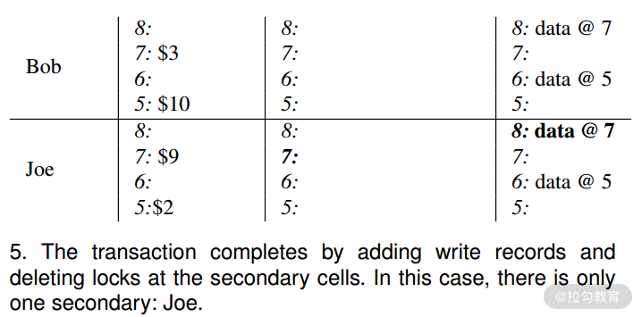
接下来就是 commit Secondary Row 了，和 Primary Row 的逻辑是一样的。Secondary Row 成功 commit，事务就完成了。
如果 Primary Row commit 成功，Secondary Row commit 失败会怎么样，数据的一致性如何保障？由于 Percolator 没有中心化的事务管理器组件，处理这种异常，只能在下次读操作发起时进行。如果一个读请求发现要读的数据存在 Secondary 锁，它会根据 Secondary Row 锁去检查其对应的 Primary Row 的锁是不是还存在，若存在说明事务还没有完成；若不存在则说明，Primary Row 已经 Commit 了，它会清除 Secondary Row 的锁，使该行数据变为可见状态（commit）。这是一个 Roll forward 的概念。
我们可以看到，在这样一个存储系统中，并非所有的行都是数据，还包含了一些事务控制行，或者称为 Commit Row。它的数据 Column 为空，但 write 列包含了可见数据的 TS。它的作用是标示事务完成，并指引读请求读到新的数据。随着时间的推移，会产生大量冗余的数据行，无用的数据行会被 GC 线程定时清理。
该事务另一个问题就是冲突处理。在之前介绍快照隔离时我们提到了对于同一行的冲突操作可以采用先提交获胜的模式，那么后提交的事务就会出现失败。如果数据库在出现高度并发修改相同数据的情况该怎么办呢？现在让我介绍一下根据 Percolator 模型实现乐观事务的 TiDB 是如何处理的。
TiDB 乐观事务冲突处理
首先在 TiDB 中写入冲突是在提交阶段进行检测的。在 11 讲中我们介绍了 MVCC 类数据库的冲突处理模式，分别为前项检测与后向检测。而 TiDB 由于使用 Percolator 模式，采用的是提交阶段的后向检测。这其实从原理上看是完全没有问题的，但 TiDB 声明自己完全兼容 MySQL。而众所周知，MySQL 使用的分布式事务是悲观模式。故在 SQL 执行阶段就能检测冲突，也就是前向模式。如此，就造成了用户如果从 MySQL 迁移到 TiDB，就必须好好审视其使用数据库是否依赖了此种模式，从而提高了用户的迁移成本。
基于以上的原因，TiDB 提供了以下几种方案来解决后向检测与前向检测的差异。
- 重试。顾名思义，在遇到冲突时，TiDB 可以重试失败的事务中的非查询操作。这是非常简洁而高效的方案，但却不是万能的。如果事务中存在根据读取结果更新数据的情况，很可能造成数据异常。因为读取操作没有重试，从而破坏了“可重读”隔离级别。故重试只能应用在非读取的场景，特别是小事务中，即每个 SQL 是单独的事务。
- 冲突预检。另一个思路是在 prewrite 阶段就执行冲突预检，将后向检查变为前向检查。TiDB 依赖的 TiKV 使用了内存来存储事务中的 key，从而检查 key 是否存在其他事务，避免并发修改 key 的情况。这样做的原因是，TiDB 本身是无状态阶段，从而导致事务之间无法感知彼此，故只能通过底层手段解决。这种结构是一种内存锁，如果事务过多，会造成获取锁的操作阻塞写入，从而导致吞吐量下降的情况。
- 悲观事务。最后，为了完整实现 MySQL 的特性，还可以使用悲观事务。
以上就是 TiDB 在实践 Percolator 模型时所给出的解决思路。从而使用户方便从 MySQL 迁移过来。另外随着 TiDB 此类数据库的面世，Percolator 事务模式也越来越得到业界的认可。
总结
好了，这一讲我们介绍了典型的原子提交：两阶段提交。它是 XA 的基础，但是两阶段提交存在天然的问题，且性能很低。在快照隔离下，我们可以使用 Percolator 模式描述的方案去实现新的原子提交，在冲突较低的场景下，该方案具有很好的性能。
下一讲，我们将介绍一对分布式事务方案的竞争对手 Spanner vs Calvin。感谢学习，希望下次与你准时相见。
00:00
24讲吃透分布式数据库
19 分布式事务（下）：Spanner 与 Calvin 的巅峰对决
上一讲我们介绍了分布式事务最重要的概念——原子提交，并介绍了两阶段、三阶段提交和 Percolator 模型。
而这一讲我将要为你揭示目前业界最著名的两种分布式事务模型，同时它们的作者和追随者之间的论战又为这两种模型增加了一定的传奇性，这一讲让我们来看看它们最终谁能胜出呢？
首先，让我介绍一下参战的两位“选手”，它们分别是 Spanner 和 Calvin。它们背后分别有广泛引用的论文，可以说都拥有比较深厚的理论基础。那么我们先从 Spanner 开始说起。
Spanner 及其追随者
Spanner 最早来自 Google 的一篇论文，并最终成为 Google Cloud 的一个服务。Spanner 简单来讲是一种两阶段提交的实现，你可以回忆一下，上一讲中我介绍了两阶段提交 4 种失败场景，其中有一种是参与者准备阶段无响应，从而造成事务的可用性下降。而 Spanner
利用共识算法保证了每个分片（Shard）都是高可用的，从而提高了整体事务的可用性。
Spanner 的整体架构很复杂，包含的内容非常多。但核心主要是两个部分，分别是 TrueTime 和 Paxos Group，而这场论战也是针对其中的一个部分展开的。
TrueTime
我在模块三“13 | 概要：分布式系统都要解决哪些问题”中介绍过，分布式系统获取时间有两种方式：物理时间与逻辑时间。而由于物理时间不靠谱，分布式系统大部分使用逻辑时间。逻辑时间往往由一个节点生成时间戳，虽然已经很高效，但是如果要构建全球系统，这种设计就捉襟见肘了。
而 TrueTime 是一种逻辑与物理时间的融合，是由原子钟结合 IDC 本地时间生成的。区别于传统的单一时间点，TrueTime 的返回值是一个时间范围，数据操作可能发生在这个范围之内，故范围内的数据状态是不确定的（uncertainty）。系统必须等待一段时间，从而获得确定的系统状态。这段时间通常是比较短暂的，且多个操作可以并行执行，通常不会影响整体的吞吐量。
事务过程
Spanner 提供了三种事务模式。
- 读写事务：该事务是通过分布式锁实现的，并发性是最差的。且数据写入每个分片 Paxos Group 的主节点。
- 只读事务：该事务是无锁的，可以在任意副本集上进行读取。但是，如果想读到最新的数据，需要从主节点上进行读取。主节点可以从 Paxos Group 中获取最新提交的时间节点。
- 快照读：顾名思义，Spanner 实现了 MVCC 和快照隔离，故读取操作在整个事务内部是一致的。同时这也暗示了，Spanner 可以保存同一份数据的多个版本。
了解了事务模型后，我们深入其内部，看看 Spanner 的核心组件都有哪些。下面是一张 Spanner 的架构图。

其中我们看到，每个 replica 保存了多个 tablet；同时这些 replica 组成了 Paxos Group。Paxos Group 选举出一个 leader 用来在多分片事务中与其他 Paxos Group 的 leader 进行协调（有关 Paxos 算法的细节我将在下一讲中介绍）。
写入操作必须通过 leader 来进行，而读取操作可以在任何一个同步完成的 replica 上进行。同时我们看到 leader 中有锁管理器，用来实现并发控制中提到的锁管理。事务管理器用来处理多分片分布式事务。当进行同步写入操作时，必须要获取锁，而快照读取操作是无锁操作。
我们可以看到，最复杂的操作就是多分片的写入操作。其过程就是由 leader 参与的两阶段提交。在准备阶段，提交的数据写入到协调器的 Paxos Group 中，这解决了如下两个问题。
- 整个事务的数据是安全的。协调者崩溃不会影响到事务继续运行，我们可以从 Paxos Group 中恢复事务数据。
- 参与者崩溃不会影响事务。因为 Paxos Group 可以重新选择节点来继续执行未完成的事务操作。
在隔离方面，Spanner 实现了 SSI，也就是序列化的快照隔离。其方法就是上文提到的 lock table。该锁是完全的排他锁，不仅仅能阻止并发写入数据，写入也可以阻止读取，从而解决快照隔离写偏序的问题。
在整个过程中，事务开始时间和提交事务时间（数据可见时间）都是通过 TrueTime 获取的时间范围。Spanner 获取这些范围后，必须等待范围中描述的时间，而后才可以执行操作。否则，系统就会读取到不一致的数据。比如未能读取到当前时间之前的数据，或者读取到事务部分产生的数据等异常数据。
同时，Spanner 声明自己的事务特性是外部一致性（External Consistency）。其描述为首先并发的事务是序列化的，如上文所示，Spanner 实现了 SSI。同时它还是线性一致的，也就是“真实”时间下，事务 A 在事务 B 前提交，那么事务 A 的时间一定小于事务 B。对一致性部分掌握比较深的同学会发现，这就是我们在该部分提到的事务与一致性之间的联系。任何分布式数据库都要描述其事务特性（并发操作）与一致性特性（非并发操作），而 Spanner 所谓的外部一致就是序列化+线性一致。
Spanner 不仅仅有 Google Cloud 的一种商业产品可供大家选择，同样有众多开源数据库是源自 Spanner 的理念而设计的，如 CockroachDB、YugaByte DB 等。故Spanner 被认为是一类从开源到商业、本地部署到云端的成熟解决方案。
以上我讲解了 Spanner 的特性，下面接着看看它的对手 Calvin 的一些特点吧。
Calvin 与 FaunaDB
Spanner 引入了很多新技术去改善分布式事务的性能，但我们发现其流程整体还是传统的二阶段提交，并没有在结构上发生重大的改变，而 Calvin 却充满了颠覆性。让我们来看看它是怎么处理分布式事务的。
首先，传统分布式事务处理使用到了锁来保证并发竞争的事务满足隔离级别的约束。比如，序列化级别保证了事务是一个接一个运行的。而每个副本的执行顺序是无法预测的，但结果是可以预测的。Calvin 的方案是让事务在每个副本上的执行顺序达到一致，那么执行结果也肯定是一致的。这样做的好处是避免了众多事务之间的锁竞争，从而大大提高了高并发度事务的吞吐量。同时，节点崩溃不影响事务的执行。因为事务执行步骤已经分配，节点恢复后从失败处接着运行该事务即可，这种模式使分布式事务的可用性也大大提高。目前实现了 Calvin 事务模式的数据库是 FaunaDB。
其次，将事务进行排序的组件被称为 sequencer。它搜集事务信息，而后将它们拆解为较小的 epoch，这样做的目的是减小锁竞争，并提高并行度。一旦事务被准备好，sequencer 会将它们发送给 scheduler。scheduler 根据 sequencer 处理的结果，适时地并行执行部分事务步骤，同时也保证顺序执行的步骤不会被并行。因为这些步骤已经排好了顺序，scheduler 执行的时候不需要与 sequencer 进行交互，从而提高了执行效率。Calvin 事务的处理组件如下图所示。
Calvin 也使用了 Paxos 算法，不同于 Spanner 每个分片有一个 Paxos Group。Calvin 使用 Paxos 或者异步复制来决定哪个事务需要进入哪个 epoch 里面。
同时 Calvin 事务有 read set 和 write set 的概念。前者表示事务需要读取的数据，后者表示事务影响的数据。这两个集合需要在事务开始前就进行确定，故Calvin 不支持在事务中查询动态数据而后影响最终结果集的行为。这一点很重要，是这场战争的核心。
在你了解了两种事务模型之后，我就要带你进入“刺激战场”了。在两位实力相当的选手中，Calvin 一派首先挑起了战争。
对 Spanner 的批评
来自马里兰大学的 Daniel Abadi 教授是 Calvin 论文的联合作者、FaunaDB 的咨询师，可以说他非常有资格代表 Calvin 一派向 Spanner 发起挑战。
一开始 Abadi 教授主要探讨了 Spanner 和 Calvin 之间的架构带来的性能差异，他从如下几个方面给出了比较。
- 传统读写事务：如果是对于分片内部的事务（非分布式场景），两者的性能是类似的；但是对于跨分片，他认为 Calvin 的性能要远好于 Spanner。原因是 Spanner 相对来说有两点性能损耗，第一就是 TrueTime 返回的是时间范围，我们必须等待一段时间后才可以做提交操作，当然这部分是可以并行的；第二就是 Spanner 是两阶段提交，相比于 Calvin 的“一阶段”来讲，理论上延迟会高。
- 快照读：这部分两者原理类似，故延迟都不高。
- 只读事务：这部分就是 Spanner 要更高效。因为它只从 leader 节点去读取数据，而 Calvin 做全局的一致性读，故延迟更大。
除了以上的比较，Calvin 还在日志复制上存在优势。主要是 Spanner 的日志复制也是 Paxos 过程，而 Calvin 由于预处理加持，可以简单高效地进行复制。这种优势在理论上随着节点间物理距离的扩展而变得更加明显。
当然，我们知道 Calvin 提到了它的预处理机制会限制事务内的操作，这个限制 Abadi 教授也注意到了。
以上就是 Abadi 教授在两者性能方面的比较，其论调还是比较客观中立，且冲突性不强。但紧接着，他指出了 Spanner 一个非常具有争议的问题，这个问题关系到了 TrueTime。TrueTime 由于不是在理论层面上证明它的时间不会倒流（skew），而是通过大量的工程实践证明了这种可能性非常低。而这个概率就是一个攻击点。
教授在这里比较聪明，或可以说是明智。他没有攻击 TrueTime 本身，而是表明 TrueTime 由于依赖原子钟这种硬件，提高了其他人复制该技术的难度。从而引出了一个技术圈的老话题——Google 的技术出了 Google 就失效了。
而 Abadi 要挑战的就是基于 Spanner 想法的其他开源或商业数据库，如上文提到的 CockroachDB 和 YugaByteDB。它们的 TrueTime 是用软件实现的，相比于硬件，上文描述的时间倒流概率被提高了。CockroachDB 还好，它声明了这种异常的可能；而 YugaByte 却没有，故它被教授集中火力攻击。
最后教授提到了，Calvin 和 FaunaDB 在理论层面上证明了其可以很好地实现一致性。
既然 Calvin 引战，特别是主要集中在 YugaByteDB 上，于是后者发起了绝地反击。
Spanner 追随者的反击
既然 YugaByte“祸从天上来”，那么必然由它们发起反击。
上文中，教授的观点总结为：
- 性能上，Calvin 由于锁持有时间短，吞吐量会大于 Spanner；
- 一致性上，基于硬件的 TrueTime 具有一定概率会发生时间倒流，而软件实现的“TrueTime”更是无法保证时间单调递增。
针对第一个问题，YugaByte 首先承认了 Calvin 吞吐量的优势。但是画风一转，YugaByte 抛出了著名的分布式事务模式研究，该研究通过多 AWS Dynamo 用户使用事务的模式进行分析。得出的结论是：90%的事务是发生在单行和单分片的，只有 10%左右才是多分片的。据此，YugaByte 把前者称为主要负载，后者称为次要负载。
那么在主要负载方面，上文中教授也承认 Spanner 和 Calvin 性能间没有明显差别，而 Calvin 具有优势的场景变为了次要负载。我们都听说过，“脱离剂量谈毒性都是耍流氓”。而 Calvin 的优势却在次要负载上，这大大降低了该优势的重要程度。
而第二个问题其实才是核心问题。我很欣赏此处 YugaByte 没有回避，而是大方地承认 YugaByte 等软件实现 TrueTime 的模式无法做到如 Calvin 那种严格序列化，而是所谓“最大可能”序列化。一旦 TrueTime 时间范围超过了阈值，序列化就被破坏了。但是 YugaByte 指出了两点让用户去思考：
- 上文中主要负载场景两者都不会有一致性问题，只有在次要场景 Spanner 类方案才会有问题；
- 随着 AWS、阿里云等公有云服务逐步提供原子钟服务，YugaByte 这类数据库也可以使用真正的 TrueTime，这大大降低了发生时间倒流的概率。
从以上的解释看出，软件的 NTP 计时器确实存在问题，但如果用户场景对此要求不严格，也是可以使用的。
除了上面针对教授提到的问题，YugaByte 也提出了 Calvin 类数据库的一些较为“致命”的缺陷。
- 上文教授已经承认的读性能 Calvin 是要弱于 Spanner 的。
- 静态化的 write set 和 read set 导致了二级索引和会话内事务的问题。会话内事务我们上文提到过，简单说 Calvin 的事务的写入不能依赖于事务内的读取；而二级索引的列如果频繁修改，会导致 Calvin 的事务反复重试，从而降低吞吐量。
- Calvin 另一个缺憾就是其缺乏开源的实现。目前只有 FaunaDB 这个闭源商业版本，使得习惯使用开源技术栈的用户没有别的选择。
- FaunaDB 没有使用 SQL，而是使用了一个 GraphQL 风格的新语言 FQL。这为原本使用 SQL 语言的团队切换到 FaunaDB 上带来了很大挑战。
可以看到 YugaByte 团队针对其批评也给出了自己的回应，那么他们之间的争论有确定的结果吗？
谁胜利了？
从目前发展的角度来说，并没有一方可以完全替代另一方。Calvin 在高度竞争的事务场景中有明显优势，而 Spanner 在读取、会话内事务中的优势不可代替。从它们的原理看，谁最终也无法胜出。而我们其实也不期待一个最终赢家，而是希望未来的事务模型能够从这两个模式中吸取灵感，为我们带来更高效的分布式事务解决方案 。
到此，我们用了两讲的内容，详细介绍了面向数据库的分布式事务。下一讲要说的是模块三的最后一个知识点：共识算法。它是现代分布式系统的核心算法，希望到时和你准时相见。
20 共识算法：一次性说清楚 Paxos、Raft 等算法的区别
现在，我们进入了分布式系统的最后一讲：共识算法。前面我们学习了各种分布式的技术，你可以和我一起回忆一下，其中我们讨论了失败模型、失败检测、领导选举和一致性模型。虽然这些技术可以被单独使用，但我们还是希望用一个技术栈就能实现上述全部功能，如果这样，将会是非常美妙的。于是，整个分布式数据库，乃至分布式领域的研究人员经过多年的努力，终于在这个问题上有所突破——共识算法由此诞生。
虽然共识算法是分布式系统理论的精华，但是通过之前的学习，其实你已经知道共识算法包含的内容了。它首先是要解决分布式系统比较棘手的失败问题，通过内置的失败检测机制可以发现失败节点、领导选举机制保证数据高效处理、一致性模式保证了消息的一致性。
这一讲，我会为你介绍几种常用的共识算法的特色。我不会深入到每种算法的详细执行过程，因为这些过程抽象且对使用没有特别的帮助。这一讲我的目的是从更高的维度为你解释这些算法，希望给你形象的记忆，并帮助你能够学以致用。至于算法实现细节，感兴趣的话你可以自行学习。
在介绍共识协议之前，我们要来聊聊它的三个属性。
- 正确性（Validity）：诚实节点最终达成共识的值必须是来自诚实节点提议的值。
- 一致性（Agreement）：所有的诚实节点都必须就相同的值达成共识。
- 终止性（Termination）：诚实的节点必须最终就某个值达成共识。
你会发现共识算法中需要有“诚实”节点，它的概念是节点不能产生失败模型所描述的“任意失败”，或是“拜占庭失败”。因为数据库节点一般会满足这种假设，所以我们下面讨论的算法可以认为所有节点都是诚实的。
以上属性可以换个说法，实际上就是“15 | 领导选举：如何在分布式系统内安全地协调操作”介绍的安全性（Safety）和活跃性（Liveness），其中正确性（Validity）和一致性（Agreement）决定了安全性（Safety），而终止性（Termination）就是活跃性（Liveness）。让我们复习一下这两个特性。
- 安全性（Safety）：在故障发生时，共识系统不能产生错误的结果。
- 活跃性（Liveness）：系统能持续产生提交，也就是不会永远处于一个中间状态无法继续。
基于以上的特性，我们开始聊聊目前常见的共识算法。
原子广播与 ZAB
广播协议是一类将数据从一个节点同步到多个节点的协议。我在“17 | 数据可靠传播：反熵理论如何帮助数据库可靠工作”介绍过最终一致性系统通过各种反熵手段来保证数据的一致性传播，特别是其中的 Gossip 协议可以保障大规模的数据同步，而 Gossip 在正常情况下就是采用广播模式传播数据的。
以上的广播过程产生了一个问题，那就是这个协调节点是明显的单点，它的可靠性至关重要。要保障其可靠，首先要解决的问题是需要检查这个节点的健康状态。我们可以通过各种健康检查方式去发现其健康情况。
如果它失败了，会造成消息传播到一部分节点中，而另外一部分节点却没有这一份消息，这就违背了“一致性”。那么应该怎解决这个问题呢？
一个简单的算法就是使用“漫灌”机制，这种机制是一旦一个消息被广播到一个节点，该节点就有义务把该消息广播到其他未收到数据节点的义务。这就像水田灌溉一样，最终整个系统都收到了这份数据。
当然以上的模式有个明显的缺点，就是会产生N2的消息。其中 N 是目前系统剩下的未同步消息的节点，所以我们的一个优化目标就是要减少消息的总数量。
虽然广播可以可靠传递数据，但通过一致性的学习我们知道：需要保证各个节点接收到消息的顺序，才能实现较为严格的一致性。所以我们这里定义一个原子广播协议来满足。
- 原子性：所有参与节点都收到并传播该消息；或相反，都不传播该消息。
- 顺序性：所有参与节点传播消息的顺序都是一致的。
满足以上条件的协议我们称为原子广播协议，现在让我来介绍最为常见的原子广播协议：Zookeeper Atomic Broadcast（ZAB）。
ZAB
ZAB 协议由于 Zookeeper 的广泛使用变得非常流行。它是一种原子广播协议，可以保证消息顺序的传递，且消息广播时的原子性保障了消息的一致性。
ZAB 协议中，节点的角色有两种。
- 领导节点。领导是一个临时角色，它是有任期的。这么做的目的是保证领导角色的活性。领导节点控制着算法执行的过程，广播消息并保证消息是按顺序传播的。读写操作都要经过它，从而保证操作的都是最新的数据。如果一个客户端连接的不是领导节点，它发送的消息也会转发到领导节点中。
- 跟随节点。主要作用是接受领导发送的消息，并检测领导的健康状态。
既然需要有领导节点产生，我们就需要领导选举算法。这里我们要明确两个 ID：数据 ID 与节点 ID。前者可以看作消息的时间戳，后者是节点的优先级。选举的原则是：在同一任职周期内，节点的数据 ID 越大，表示该节点的数据越新，数据 ID 最大的节点优先被投票。所有节点的数据 ID 都相同，则节点 ID 最大的节点优先被投票。当一个节点的得票数超过节点半数，则该节点成为主节点。
一旦领导节点选举出来，它就需要做两件事。
- 声明任期。领导节点通知所有的跟随节点当前的最新任期；而后由跟随节点确认当前任期是最新的任期，从而同步所有节点的状态。通过该过程，老任期的消息就不会被跟随节点所接受了。
- 同步状态。这一步很关键，首先领导节点会通知所有跟随节点自己的领导身份，而后跟随节点不会再选举自己为领导了；然后领导节点会同步集群内的消息历史，保证最新的消息在所有节点中同步。因为新选举的领导节点很可能并没有最新被接受的数据，因此同步历史数据操作是很有必要的。
经过以上的初始化动作后，领导节点就可以正常接受消息，进行消息排序而后广播消息了。在广播消息的时候，需要 Quorum（集群中大多数的节点）的节点返回已经接受的消息才认为消息被正确广播了。同时为了保证顺序，需要前一个消息正常广播，后一个消息才能进行广播。
领导节点与跟随节点使用心跳算法检测彼此的健康情况。如果领导节点发现自己与 Quorum 节点们失去联系，比如网络分区，此时领导节点会主动下台，开始新一轮选举。同理，当跟随节点检测到领导节点延迟过大，也会触发新一轮选举。
ZAB 选举的优势是，如果领导节点一直健康，即使当前任期过期，选举后原领导节点还会承担领导角色，而不会触发领导节点切换，这保证了该算法的稳定。另外，它的节点恢复比较高效，通过比较各个节点的消息 ID，找到最大的消息 ID，就可以从上面恢复最新的数据了。最后，它的消息广播可以理解为没有投票过程的两阶段提交，只需要两轮消息就可以将消息广播出去。
那么原子广播协议与本讲重点介绍的共识算法是什么关系呢？这里我先留下一个“暗扣”，先介绍一下典型的共识算法 Paxos，而后再说明它们之间的关系。
Paxos
所谓的 Paxos 算法，是为了解决来自客户端的值被发送到集群中的任意一点，而后集群中的所有节点为该值达成共识的一种协调算法。同时这个值伴随一个版本号，可以保证消息是有顺序的，该顺序在集群中任何一点都是一致的。
基本的 Paxos 算法非常简单，它由三个角色组成。
- Proposer：Proposer 可以有多个，Proposer 提出议案（value）。所谓 value，可以是任何操作，比如“设置某个变量的值为 value”。不同的 Proposer 可以提出不同的 value。但对同一轮 Paxos 过程，最多只有一个 value 被批准。
- Acceptor：Acceptor 有 N 个，Proposer 提出的 value 必须获得 Quorum 的 Acceptor 批准后才能通过。Acceptor 之间完全对等独立。
- Learner：上面提到只要 Quorum 的 Accpetor 通过即可获得通过，那么 Learner 角色的目的就是把通过的确定性取值同步给其他未确定的 Acceptor。
这三个角色其实已经描述了一个值被提交的整个过程。其实基本的 Paxos 只是理论模型，因为在真实场景下，我们需要处理许多连续的值，并且这些值都是并发的。如果完全执行上面描述的过程，那性能消耗是任何生产系统都无法承受的，因此我们一般使用的是 Multi-Paxos。
Multi-Paxos 可以并发执行多个 Paxos 协议，它优化的重点是把 Propose 阶段进行了合并，这就引入了一个 Leader 的角色，也就是领导节点。而后读写全部由 Leader 处理，同时这里与 ZAB 类似，Leader 也有任期的概念，Leader 与其他节点之间也用心跳进行互相探活。是不是感觉有那个味道了？后面我就会比较两者的异同。
另外 Multi-Paxos 引入了两个重要的概念：replicated log 和 state snapshot。
- replicated log：值被提交后写入到日志中。这种日志结构除了提供持久化存储外，更重要的是保证了消息保存的顺序性。而 Paxos 算法的目标是保证每个节点该日志内容的强一致性。
- state snapshot：由于日志结构保存了所有值，随着时间推移，日志会越来越大。故算法实现了一种状态快照，可以保存最新的日志消息。当快照生成后，我们就可以安全删除快照之前的日志了。
熟悉 Raft 的同学会发现，上面的结构其实已经与 Raft 很接近了。在讨论完原子广播与共识之后 ，我们会接着介绍 Raft。
原子广播与共识
就像我开篇所说的，本讲不是介绍算法细节的，而是重点关注它们为什么是今天这个样子。从上面的粗略介绍中，我们已经发现：ZAB 其实与 Multi-Paxos 是非常类似的。本质上，它们都需要大部分节点“同意”一个值，并都有 Leader 节点，且 Leader 都是临时的。真是越说越相似，但本质上它们却又是不同的。
简单来说，ZAB 来源于主备复制场景，就是我们之前介绍的复制技术；而共识算法是状态机复制系统。
所谓状态机复制系统，是指集群中每个节点都是一个状态机，如果有一组客户端并发在系统中的不同状态机上提交不同的值，该系统保证每个状态机都可以保证执行相同顺序的客户端请求。可以看到请求一旦被提交，其顺序是有保障的。但是未提交之前，顺序是由 Leader 决定的，且这个顺序可以是任意的。一旦 Leader 被重选，新的 Leader 可以任意排序未提交的值。
而 ZAB 这种广播协议来自主备复制，强调的是消息的顺序是 Leader 产生的，并被 Follower 严格执行，其中没有协调的关系。更重要的区别是，Leader 重选后，新 Leader 依然会按照原 Leader 的排序来广播数据，而不会自己去排序。
因此可以说 ZAB 可以实现严格的线性一致性。而 Multi-Paxos 由于只是并发写，所以也没有所谓的线性一致，而是一种顺序一致结构，也就是数据被提交时才能确定顺序。而不是如 ZAB 那样有 Leader 首先分配了顺序，该顺序与数据提交的先后顺序保持了一致。关于线性一致和顺序一致，请参考“05 | 一致性与 CAP 模型：为什么需要分布式一致性？”
由于共识算法如 Paxos 为了效率的原因引入了 Leader。在正常情况下，两者差异不是很大，而差异主要在选举 Leader 的流程上。
那么学习完 ZAB 和 Multi-Paxos 后，我将要介绍这一讲的主角 Raft 算法，它是目前分布式数据库领域最重要的算法。
Raft 的特色
Raft 可以看成是 Multi-Paxos 的改进算法，因为其作者曾在斯坦福大学做过关于 Raft 与 Multi-Paxos 的比较演讲，因此我们可以将它们看作一类算法。
Raft 算法可以说是目前最成功的分布式共识算法，包括 TiDB、FaunaDB、Redis 等都使用了这种技术。原因是 Multi-Paxos 没有具体的实现细节，虽然它给了开发者想象空间，但共识算法一般居于核心位置，一旦存在潜在问题必然带给系统灾难性的后果。而 Raft 算法给出了大量的实现细节，且处理方式相比于 Multi-Paxos 有两点优势。
- 发送的请求的是连续的，也就是说 Raft 的写日志操作必须是连续的；而 Multi-Paxos 可以并发修改日志，这也体现了“Multi”的特点。
- 选主必须是最新、最全的日志节点才可以当选，这一点与 ZAB 算法有相同的原则；而 Multi-Paxo 是随机的。因此 Raft 可以看成是简化版本的 Multi-Paxos，正是这个简化，造就了 Raft 的流行。
Multi-Paxos 随机性使得没有一个节点有完整的最新的数据，因此其恢复流程非常复杂，需要同步节点间的历史记录；而 Raft 可以很容易地找到最新节点，从而加快恢复速度。当然乱序提交和日志的不连续也有好处，那就是写入并发性能会大大提高，从而提高吞吐量。所以这两个特性并不是缺点，而是权衡利弊的结果。当然 TiKV 在使用 Raft 的时候采用了多 RaftGroup 的模式，提高了单 Raft 结构的并发度，这可以被看作是向 Multi-Paxos 的一种借鉴。
同时 Raft 和 Multi-Paxos 都使用了任期形式的 Leader。好处是性能很高，缺点是在切主的时候会拒绝服务，造成可用性下降。因此一般我们认为共识服务是 CP 类服务（CAP 理论）。但是有些团队为了提高可用性 ，转而采用基础的 Paxos 算法，比如微信的 PaxosStore 都是用了每轮一个单独的 Paxos 这种策略。
以上两点改进使 Raft 更好地落地，可以说目前最新数据库几乎都在使用该算法。想了解算法更多细节，请参考https://raft.github.io/。你从中不仅能学习到算法细节，更重要的是可以看到很多已经完成的实现，结合代码学习能为你带来更深刻的印象。
总结
共识算法是一个比较大的话题。本讲聚焦于常见的三种共识类算法，集中展示其最核心的功能。我通过比较它们之间的异同，来加深你对它们特性的记忆。
共识算法又是现代分布式数据库的核心组件，好在其 API 较为易懂，且目前有比较成熟的实现，所以我认为算法细节并不是本讲的重点。理解它们为什么如此，才能帮助我们理解数据库的选择依据。
到此，我们学习完了这个模块的所有知识点。下一讲我将会带领你复习这一模块的内容，同时通过几个案例来展示典型分布式数据库特性与咱们所学的知识点之间的关系，到时候见。
21 知识串讲：如何取得性能和可扩展性的平衡？
这一讲我们来总结一下模块三。经过这个模块的学习，相信你已经对分布式数据库中分布式系统部分常见的技术有了深刻的理解。这是一节知识串讲的课，目的是帮助你将所学的内容串接起来；同时，我会通过若干的案例带你看看这些知识是如何应用到分布式数据库之中的。
知识总结
在本模块一开始，我就提出了分布式系统最需要关心的问题：失败。失败可以说是分布式系统中无处不在的一种现象，它不仅来源于网络抖动带来的连接问题，同时分布式的节点本身的稳定性也会影响系统整体的稳定状态。在“13 | 概要：分布式系统都要解决哪些问题”中我们就定义了失败模型，它们分别是：崩溃失败、遗漏失败以及任意失败。
其中分布式数据库一般研究前两种失败，因为任意失败是假设节点伪造数据，这对基于安全网络而构建的分布式数据库来说是一种不常见的情况。失败模型从上到下失败的原因越来越难以预知，同时处理的难度也越来越大。本模块介绍的绝大部分技术与算法，都是处理第一种失败场景的，而共识算法主要解决第二种失败场景。
而后我们介绍了针对失败的探测手段，其中基于心跳的算法广泛地应用在分布式数据库之中。同时对于无主节点的对等分布式数据库，基于 Gossip 算法的失败检测被用于该场景的分布式数据库，如 Apache Cassandra。
在介绍了失败检测之后，我提到了主从模式的分布式系统。具有主节点的分布式数据库相对于完全对等的分布式数据库来说，具有性能高、状态易于预测等优点。在该部分，我们重点介绍了领导选举的方案，选举算法中我介绍了 Bully 算法及其多种变种，基本涵盖了主要的领导选举手段。共识算法部分如 ZAB、Raft 等协议的领导选举方案中都可以看到 Bully 算法的影子。
在介绍完领导选举以后，我们接着扩展了模块一中关于复制与一致性的内容。补充说明了客户端一致性与最终一致性。至此关于一致性所有的内容，在我们的课程体系中都已经介绍完整。在“16 | 再谈一致性：除了 CAP 之外的一致性模型还有哪些”中我引入了完整的一致性模型树，帮助你建立起一致性的完整知识体系。客户端一致性与最终一致性往往同时使用，非常适合 AP 类数据库，这类数据库以 AWS 的 DynamoDB 为代表，是一类无主节点、跨区域、可全球部署的分布式数据库，且一般为 NoSQL 数据库。除了 Dynamo 外，如 Apache Cassandra、Azue Cosmos 也是此类数据库典型的代表。
由于最终一致会导致数据库允许节点之前数据的暂时不一致，根据熵增理论，此种不一致会随着时间逐渐扩大，最终导致最终一致类数据库完全不可用。基于此种原因，我们引入了反熵的概念。反熵手段分为前台与后台两类，前者包括读修复、暗示传递队列等；后者有 Merkle 树和位图版本向量。而在“14 | 错误侦测：如何保证分布式系统稳定”提到的 Gossip 协议，除了可以检测系统中的异常情况外，其最重要的功能是保证消息在整个分布式系统内部可靠地传递，从而实现了反熵的目的。Gossip 协议非常适用于大规模的分布式数据库，如 Apache Cassandra、Redis 等都使用该技术。
分布式事务是本模块的重点内容。我用了两讲来介绍它，首先说的是最典型的原子提交事务，分别为两阶段和三阶段提交，其中三阶段提交虽然对两阶段出现的问题进行了改进，但由于其性能较低，且存在脑裂的问题，故在现实场景中很少使用。而后我们介绍了快照隔离与序列化的快照隔离，它们是现代分布式数据库最重要的隔离级别，为实现无锁高性能的分布式事务提供了支持。而 Percolator 事务模型就是基于此种隔离级别的一种高效乐观无锁的事务方案。目前 TiDB 使用该方案来实现其乐观事务。
分布式事务一直是分布式数据库领域的理论创新热点。我在本模块中对比介绍了两种创新的事务模型 Spanner 和 Calvin，前者使用 PaxosGroup 结合 TrueTime，在平衡性方面取得了瞩目的成绩；而后者在高竞争事务的吞吐量上给我们留下了深刻的印象。同时它们之间的理论争论，为我们更好地认识其优缺点指明了方向，可以说它们之间的论战对整个分布式事务理论的发展是非常有意义的，同时我们也期待未来分布式事务理论能否产生出更加优秀的解决方案。
在本模块的最后一讲，也就是“20 | 共识算法：一次性说清楚 Paxos、Raft 等算法的区别”，我们介绍了分布式系统理论的集大成者——分布式共识算法。共识算法可以说是失败模型、失败侦测、领导选举和一致性的合体。它通过单一的算法体系，实现了以上描述的分布式系统中的多种功能。从而为构建分布式数据库提供了强有力的帮助，如分布式事务和数据复制领域中，我们会发现许多方案都使用了共识算法。目前在分布式数据库中，最为常见的共识算法是 Raft，它是在 Multi-Paxos 基础上经过一定简化得到的，其易于实现、快速恢复等特点对分布式数据库的维护者而言是非常有吸引力的。
至此，我们介绍完了本模块的全部内容。下面我将通过一些具体的案例来把所学知识应用在实际中。在案例部分我选择了三个比较典型的数据库：TiDB、阿里的 PolarDB-X 和 Apache Cassandra。它们是目前分布式数据库比较典型的代表，让我们来看看它们是如何使用本模块知识点的。
TiDB：使用乐观事务打造悲观事务
在分布式事务那一讲，我提到 TiDB 的乐观事务使用了 Google 的 Percolator 模式，同时 TiDB 也对该模式进行了改进。可以说一提到 Percolator 模式事务的数据库，国内外都绕不过 TiDB。
TiDB 在整体架构上基本参考了 Google Spanner 和 F1 的设计，分两层为 TiDB 和 TiKV。 TiDB 对应的是 Google F1，是一层无状态的 SQL Layer，兼容绝大多数 MySQL 语法，对外暴露 MySQL 网络协议，负责解析用户的 SQL 语句，生成分布式的 Query Plan，翻译成底层 Key Value 操作发送给 TiKV。TiKV 是真正的存储数据的地方，对应的是 Google Spanner，是一个分布式 Key Value 数据库，支持弹性水平扩展，自动地灾难恢复和故障转移，以及 ACID 跨行事务。下面的图展示了 TiDB 的架构。
对于事务部分，TiDB 实现悲观事务的方式是非常简洁的。其团队在仔细研究了 Percolator 的模型后发现，其实只要将在客户端调用 Commit 时候进行两阶段提交这个行为稍微改造一下，将第一阶段上锁和等锁提前到事务中执行 DML 的过程中，就可以简单高效地支持悲观事务场景。
TiDB 的悲观锁实现的原理是，在一个事务执行 DML（UPDATE/DELETE）的过程中，TiDB 不仅会将需要修改的行在本地缓存，同时还会对这些行直接上悲观锁，这里的悲观锁的格式和乐观事务中的锁几乎一致，但是锁的内容是空的，只是一个占位符，等到 Commit 的时候，直接将这些悲观锁改写成标准的 Percolator 模型的锁，后续流程和原来保持一致即可。
这个方案在很大程度上兼容了原有的事务实现，其扩展性、高可用和灵活性都有保证。同时该方案尽最大可能复用了原有 Percolator 的乐观事务方案，减少了事务模型整体的复杂度。
以上就是 TiDB 如何使用 Percolator 模型及其变种同时实现了乐观事务与悲观事务。下面我来介绍一下阿里的 PolarDB-X 是如何利用共识算法打造异地多活分布式数据库的。
PolarDB-X：使用 Paxos 打造异地多活体系
阿里随着业务的高速增长，“异地多活”成了其应用的新标准。基于这样的业务背景驱动，PolarDB-X 早期基于单机 MySQL 实现了一致性能力，配合 TDDL 分库分表的模式部分解决了业务诉求，该模块被称为 X-Paxos。随着技术的不断发展和演进，以及面向云的时代的全面普及，PolarDB-X 2.0 中融合了分布式 SQL 引擎和基于 X-Paxos 的数据库存储技术，提供了全新的云原生分布式数据库。
X-Paxos 的算法基于具有领导节点的 Multi-Paxos 来实现。就像我在共识那一讲介绍的一样，这是被大量工程实践证明是最高效的一种 Paxos 算法。
在基础算法之上，结合阿里是业务场景以及高性能和生态的需求，X-Paxos 做了很多的创新性的功能和性能的优化，使其相对于基础的 Multi-Paxos，功能变得更加丰富，性能也有明显的提升。这里我介绍 X-Paxos 的几个优化点。
有主选举
X-Paxos 在标准 Multi-Paxos 的基础上，支持在线添加/删除多种角色的节点，支持在线快速将领导节点转移到其他节点。这样的在线运维能力，将极大地方便分布式节点的有计划性的运维工作，从而降低业务恢复时间。
可用区位置感知
阿里目前多地架构会有中心机房的诉求，比如，应用因其部署的特点，往往要求在未发生城市级容灾的情况下，仅在中心写入数据库，数据库的领导节点在正常情况下只在中心地域；同时又要求在发生城市级容灾的时候（同一个城市的多个机房全部不可用），可以完全不丢失任何数据的情况下，将主节点切换到非中心城市。
节点功能裁剪
Paxos 算法中每个节点都包含了 Proposer/Accepter/Learner 三种功能，每一个节点都是全功能节点。但是某些情况下，集群并不需要所有节点都拥有全部的功能。X-Paxos 使用了如下的一些裁剪手段：
- 裁剪其中一些节点的状态机，只保留日志（无数据的纯日志节点，但是在同步中作为 Quroum 计算），此时需要裁剪掉协议中的 Proposer 功能，保留 Accepter 和 Learner 功能；
- 一些节点只是订阅/消费协议产生的日志流，而不作为集群的成员，此时可以裁剪掉协议的 Proposer/Accepter 功能，只保留 Learner 功能。
以上裁剪手段的组合，可以提高集群利用率、节约成本，同时得到了比较灵活的功能组合。
这就是 PolarDB-X 使用共识算法的一系列尝试，最后让我们看看 Apache Cassandra 是如何实现可调节一致性的。
Apache Cassandra：可调节一致性
Apache Cassandra 提供了可调节一致性，允许开发者在数据一致性和可用性之间做出权衡，并且这种灵活性由客户端来管理。一致性可以是全局的，也可以针对单个读取和写入操作进行调整。例如在更新重要数据时，需要高度的一致性。 对于不太关键的应用或服务，可以放宽一致性以实现更好的性能。
Cassandra 的可调节一致性如我在本模块一致性那一讲介绍的一样，分为写一致性与读一致性。
写一致性
写一致性声明了需要写入多少个节点才算一次成功的写入。Cassandra 的写一致性是可以在强一致到弱一致之间进行调整的。我总结了下面的表格来为你说明。
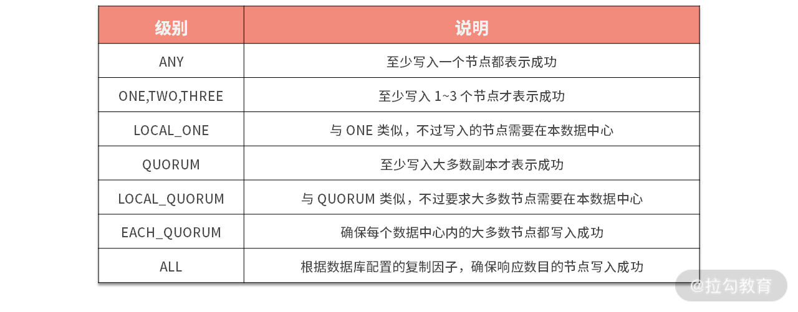
我们可以看到 ANY 级别实际上对应了最终一致性。Cassandra 使用了反熵那一讲提到的暗示切换技术来保障写入的数据的可靠，也就是写入节点一旦失败，数据会暂存在暗示切换队列中，等到节点恢复后数据可以被还原出来。
读一致性
对于读操作，一致性级别指定了返回数据之前必须有多少个副本节点响应这个读查询。这里同样给你整理了一个表格。

Cassandra 在读取的时候使用了读修复来修复副本上的过期数据，该修复过程是一个后台线程，故不会阻塞读取。
以上就是 Apache Cassandra 实现可调节一致性的一些细节。AWS 的 DynamoDB、Azure 的 CosmosDB 都有类似的可调节一致性供用户进行选择。你可以比照 Cassandra 的模式和这些数据库的文档进行学习。
总结
分布式系统是分布式数据库的核心，它与存储引擎相互配合共同实现了完整的分布式数据库的功能。存储引擎一般影响数据库的写入，也就是数据库的性能，它决定了数据库到底能多快地处理数据。同时，分布式系统处理节点直接的通信，也就是数据库的扩展性，它决定了数据库的扩展能力和数据容量。故两者需要相互配合，同时在设计使用数据库时，可以在它们之间进行一定的取舍，从而达到高效利用各种资源的目的。
分布式系统这个模块，我们介绍了分布式数据库经常使用的知识点，特别是事务、一致性和共识是本模块的核心，希望你能好好掌握。
下一模块我们就进入实际案例中，我将分门别类地为你介绍市面中典型的分布式数据库。利用课程中的知识来分析它们，从而更好地帮助你去使用它们。
感谢学习，我们下一讲再见。
22 发展与局限：传统数据库在分布式领域的探索
从这一讲开始，我们进入实践（扩展）模块，目的是帮助你更了解现代分布式数据库，并且我会把之前学习的理论知识应用到实际案例中。
这个模块的讲解思路如下。
- 传统数据库分布式：传统数据库，如 Oracle、MySQL 和 PostgreSQL 没有一刻放弃在分布式领域的探索。我会介绍分布式技术如何赋能传统数据库，以及它们的局限性。
- 数据库中间件：虽然中间件严格来说并不包含在数据库领域内，但它是很多用户首次接触分布式数据库的切入点，故在该领域有着不可代替的作用。我会介绍数据库中间件的功能，特别是处理事务的方式，它与模块三中介绍的分布式事务还是有差别的。
- 当代分布式数据库：该部分重点介绍目前大家能接触到的 NewSQL、DistributedSQL 类型的数据库。重点关注它们在异地多活、容灾等方面的实践。
- 其他类型数据库与数据库选型：查缺补漏为你介绍其他类型的分布式数据库，扩宽你的视野。最后结合金融、电信和电商等场景，为你介绍这些行业是如何选择分布式数据库的。
以上就是本模块整体的讲解流程，那么现在让我们进入第一个问题的学习，来看看传统数据库如何进行分布式化改造。
传统数据库分布式化
我在模块一中介绍过，业务应用系统可以按照交易类型分为 OLTP 场景和 OLAP 场景两大类。OLTP 是面向交易的处理过程，单笔交易的数据量小，但是要在很短的时间内给出结果，典型场景包括购物、转账等；而 OLAP 场景通常是基于大数据集的运算，典型场景包括生成各种报表等。
OLTP 与 OLAP 两种场景有很大的差异，虽然传统数据库在其早期是将两者融合在一起的。但是随着它们向分布式，特别是 Sharding（分片）领域转型，OLAP 类型的数据逐步被抛弃，它们将所有的精力集中在了 OLTP 上。
OLTP 场景通常有三个特点：
- 写多读少，而且读操作的复杂度较低，一般不涉及大数据集的汇总计算；
- 低延时，用户对于延时的容忍度较低，通常在 500 毫秒以内，稍微放大一些也就是秒级，超过 5 秒的延时通常是无法接受的；
- 高并发，并发量随着业务量而增长，没有理论上限。
传统数据库，比如 MySQL 和 Oracle 这样的关系型数据库就是服务于 OLTP 场景的，但我们一般认为它们并不是分布式数据库。这是为什么呢？因为这些数据库传统都是单节点的，而我们说的分布式数据库都是多节点的。
传统关系型数据库是单机模式的，也就是主要负载运行在一台机器上。这样，数据库的并发处理能力与单机的资源配置是线性相关的，所以并发处理能力的上限也就受限于单机配置的上限。这种依靠提升单机资源配置来扩展性能的方式，被称为垂直扩展（Scale Up）。我们之前介绍过，垂直扩展是瓶颈的，因为物理机单机配置上限的提升是相对缓慢的。这意味着，在一定时期内，依赖垂直扩展的数据库总会存在性能的天花板。
那么传统数据库的单机模式可以变为分布式吗？答案是可以的。这些传统数据库在维持关系型数据库特性不变的基础上，可以通过水平扩展，也就是 Sharding 模式，增加机器数量、提供远高于单体数据库的并发量。这个并发量几乎不受单机性能限制，我们将这个级别的并发量称为“高并发”。这里说的“高并发”并没有一个具体的数字与之对应。不过，我可以给出一个经验值，这个“高并发”应该至少大于一万 TPS。
在 Sharding 之外，还需要引入可靠的复制技术，从而提高系统整体的可用度，这在金融级的容灾场景中非常重要。这些理念都是我在模块一中就强调过的，分片与同步才是分布式数据库的核心。
那么介绍完了传统数据库如何改造为分布式数据库的基本理念，现在让我们看看它们是如何具体操作的吧。
商业产品
我在“01 | 导论：什么是分布式数据库？聊聊它的前世今生”介绍过，商业数据库如 Oracle 通过底层存储的分布式达到数据分散的目的。其实这类数据库一直没有放弃对分布式领域的探索。现在我介绍一下 Oracle Sharding。
Oracle 数据库从 12.2 版本开始引入 Sharding 特性，集成了 NoSQL 和成熟的关系型数据库的优势，到如今已经过多个版本迭代，成为一整套成熟的分布式关系型数据库解决方案。Oracle Sharding 可以让用户将数据分布和复制到一组 Oracle 数据库集群中，集群中的数据库只需要网络连接，不需要共享软件和硬件。Oracle Sharding 可以为应用提供线性扩展能力和完全容错能力。
Oracle Sharding 主要包括下面这些组件。
- Sharded database（SDB）：逻辑上 SDB 是一个数据库，但是物理上 SDB 包括多个物理独立的数据库，SDB 类似一个数据库池（pool），数据库池中包括多个数据库（Shard）。
- Shards：SDB 包括多个物理独立的数据库，每一个数据库都称为 shard，每个 shard 数据库位于不同的服务器。这些 Shard 被部署在独立的机器上，每个 shard 数据库中保存表的不同数据集，但是每个 Shard 中都有相同的列，也就是说这些 Shard 是按行进行分片的。
- Shard catalog：是一个 Oracle 数据库，用于集中存储管理 SDB 配置信息，是 SDB 的核心。SDB 配置变化，比如添加/删除 shard 等，都记录在 Shard catalog。如果应用查询多个 shard 中的数据，那么由 Shard catalog 统一协调分配。Shard catalog 需要进行 HA，也就是高可用部署。因为里面的数据非常重要，一旦丢失，会造成整个数据库不可用。
- Shard directors：Global Data Service（GDS）实现对 Sharding 的集中部署和管理。GSM 是 GDS 的核心组件，GSM 作为 Shard director。GSM 类似监听器，将客户端对 SDB 的请求路由到对应的 shard，负载均衡客户端的访问。
Oracle Sharding 优点如下。
- 线性扩展：因为每个 shard 是一个独立的数据库，通过增加新的 Shard 节点，来线性扩展性能，自动 rebalance 数据。
- 失败隔离：由于 Shard 是一种 shared-nothing 技术，每个 shard 使用独立的硬件，因此一个 shard 节点出现故障，只会影响到这个 shard 存放的数据，而不会影响到其他 shard。
- 按照地理位置分布数据：可以选择根据地理位置不同，将数据存储在不同的 shard。
除了以上的优点，其缺点也非常明显。
- 用户设计复杂：不同于传统的 RAC 模式，Sharding 需要用户对表进行严格设计，从而才能发挥该模式扩展性与可用性方面的优势。同时，对于老系统迁移，这往往意味着要修改现有代码。
- 跨分片性能低：跨分片事务，聚合查询的性能很低。一般比单分片低 10%。
最后一个缺点就是商业数据库的老问题，性价比低。这个我在后面会进一步阐述。
那么商业方案看起来很好，但是如果你更喜欢开源的解决方案，下面我会介绍开源传统数据库对这个问题的思考。
开源定制
单体开源数据要向分布式数据库演进，就要解决写入性能不足的问题。
最简单直接的办法就是分库分表。分库分表方案就是在多个单体数据库之前增加代理节点，本质上是增加了 SQL 路由功能。这样，代理节点首先解析客户端请求，再根据数据的分布情况，将请求转发到对应的单体数据库。代理节点分为“客户端 + 单体数据库”和“中间件 + 单体数据库”两个模式。
客户端组件 + 单体数据库通过独立的逻辑层建立数据分片和路由规则，实现单体数据库的初步管理，使应用能够对接多个单体数据库，实现并发、存储能力的扩展。其作为应用系统的一部分，对业务侵入比较深。这种客户端组件的典型产品是 Apache ShardingShpere 的 JDBC 客户端模式，下图就是该模式的架构图。
Apache ShardingShpere 的 JDBC 客户端模式架构图
代理中间件 + 单体数据库以独立中间件的方式，管理数据规则和路由规则，以独立进程存在，与业务应用层和单体数据库相隔离，减少了对应用的影响。随着代理中间件的发展，还会衍生出部分分布式事务处理能力。这种中间件的典型产品是 MyCat、Apache ShardingShpere 的 Proxy 模式。
Apache ShardingShpere 的 Proxy 模式架构图
代理节点需要实现三个主要功能，它们分别是客户端接入、简单的查询处理器和进程管理中的访问控制。另外，分库分表方案还有一个重要的功能，那就是分片信息管理，分片信息就是数据分布情况。不过考虑分片信息也存在多副本的一致性的问题，大多数情况下它会独立出来。显然，如果把每一次的事务写入都限制在一个单体数据库内，业务场景就会很受局限。
因此，跨库事务成为必不可少的功能，但是单体数据库是不感知这个事情的，所以我们就要在代理节点增加分布式事务组件。同时，简单的分库分表不能满足全局性的查询需求，因为每个数据节点只能看到一部分数据，有些查询运算是无法处理的，比如排序、多表关联等。所以，代理节点要增强查询计算能力，支持跨多个单体数据库的查询。更多相关内容我会在下一讲介绍。
这时离分布式数据库还差重要的一步，那就是逻辑时钟。我们在分布式系统模块已经介绍了逻辑时钟的意义，它是实现数据一致性的必要条件。加上这最后一块拼图，这类分布式数据库区别于单体数据库的功能也就介绍完整了，它们是分片、分布式事务、跨节点查询和逻辑时钟。
这类数据库一般以 MySQL 或 PostgreSQL 为基础进行开发。MySQL 类的解决方案有 TDSQL、Vitess 和具有 JDTX 的 ShardingShpere。PGXC（PostgreSQL-XC）的本意是指一种以 PostgreSQL 为内核的开源分布式数据库。因为 PostgreSQL 的开放软件版权协议，很多厂商在 PGXC 上二次开发，推出自己的产品。不过，这些改动都没有变更主体架构风格，所以我把这类产品统称为 PGXC 风格，其中包括 TBase、GuassDB 和 AntDB 等。
以上我们讨论了开源领域中传统数据库在分布式领域中的尝试。但是，此类方案是有一些局限的，看看都有哪些。
局限
目前传统数据库在分布式领域内的探索，我们可以总结为“商业靠实力而开源靠合作”，它们分别打开了自己的一片天地。但是，它们长久的技术积累不仅带来了功能的丰富，同时一些局限也是其无法克服的。
- 性价比。以 Oracle Sharding 为代表的商业解决方案，虽然功能很完善，同时能满足多种场景，对传统 Oracle 用户有极强的吸引力。但是其费用与收益其实是不成正比的，其对分片事务支持有限，同时跨分片查询性能很低。这些重要功能的缺失与其高昂的售价相比是极不相称的。故商业的 Sharding 方案一直没有成为主流。
- 事务。由于传统数据库都需要复用原有的存储节点，故事务方案大多都是我们介绍过的两阶段提交这类原子提交协议。学习过模块三中分布式事务的同学都清楚，传统两阶段在性能和规模上都有很大的限制，必须采用新的事务模式才能突破这层天花板。而传统数据库的底层被锁死，很难在这个领域有更好的表现。
- OLAP。传统数据库在转为分布式之前能很好地支持 OLAP。但其 Sharding 后，该过程变得越来越困难。同时随着大数据技术的崛起，它们有主动放弃该领域的趋势。而新一代的 HTAP 架构无一例外都是 NewSQL 和云原生数据库的天下，这个领域是从传统数据库发展而来的分布式数据库无法企及的。
以上我们谈的传统数据库在分布式领域的局限其实总结为一点就是，它们的底层存储引擎限制了其上层分布式功能的拓展。只有如 NewSQL 类数据库一般，使用创新的存储引擎，才能在整体上打造出功能与性能匹配的现代分布式数据库。但是，此类数据库由于发展多年，在稳定性、维护性上有不可动摇的优势，即使存在一些局限性，但其对单机版本的用户依然有很强的吸引力。
总结
这一讲，我们介绍了传统单机数据库向分布式数据库的转型尝试，它们一般经过分片、复制、分布式事务和物理时钟等过程的改造，从而打造以单体数据库为数据节点的分布式数据库。
同时我们也讨论了此类数据库的天花板，因此应该从底层去构建分布式数据库，就像 NewSQL 类数据库，才是分布式数据库发展的正途。
23 数据库中间件：传统数据库向分布式数据库的过渡
上一讲我们讨论了传统单机数据库向分布式数据库的转型尝试。今天这一讲，我们就来聊聊传统数据库构造为分布式数据库的帮手，同时也是分布式数据库演化的重要一环：数据库中间件。这里说的中间件一般是具有分片功能的数据库中间层。
关系型数据库本身比较容易成为系统性能瓶颈，单机存储容量、连接数、处理能力等都很有限，数据库本身的“有状态性”导致了它并不像 Web 和应用服务器那么容易扩展。在互联网行业海量数据和高并发访问的考验下，应用服务技术人员提出了分片技术（或称为 Sharding、分库分表）。同时，流行的分布式系统数据库，特别是我们上一讲介绍的从传统数据库过渡而来的分布式数据库，本身都友好地支持 Sharding，其原理和思想都是大同小异的。
成功的数据库中间件除了支持分片外，还需要全局唯一主键、跨分片查询、分布式事务等功能的支持，才能在分片场景下保障数据是可用的。下面我就为你一一介绍这些技术。
全局唯一主键
在单机数据库中，我们往往直接使用数据库自增特性来生成主键 ID，这样确实比较简单。而在分库分表的环境中，数据分布在不同的分片上，不能再借助数据库自增长特性直接生成，否则会造成不同分片上的数据表主键重复。
下面我简单介绍下使用和了解过的几种 ID 生成算法：
- Twitter 的 Snowflake（又名“雪花算法”）
- UUID/GUID（一般应用程序和数据库均支持）
- MongoDB ObjectID（类似 UUID 的方式）
其中，Twitter 的 Snowflake 算法是我近几年在分布式系统项目中使用最多的，未发现重复或并发的问题。该算法生成的是 64 位唯一 ID（由 41 位的 timestamp + 10 位自定义的机器码 + 13 位累加计数器组成）。我在“03 | 数据分片：如何存储超大规模的数据”中介绍过 ShardingShpere 实现 Snowflake 的细节，你可以再回顾一下。
那么解决了全局唯一主键，我们就可以对数据进行分片了。下面为你介绍常用的分片策略。
分片策略
我介绍过的分片模式有：范围分片和哈希分片。
当需要使用分片字段进行范围查找时，范围分片可以快速定位分片进行高效查询，大多数情况下可以有效避免跨分片查询的问题。后期如果想对整个分片集群扩容时，只需要添加节点即可，无须对其他分片的数据进行迁移。
但是，范围分片也有可能存在数据热点的问题，有些节点可能会被频繁查询，压力较大，热数据节点就成了整个集群的瓶颈。而有些节点可能存的是历史数据，很少需要被查询到。
哈希分片我们采用 Hash 函数取模的方式进行分片拆分。哈希分片的数据相对比较均匀，不容易出现热点和并发访问的瓶颈。
但是，后期分片集群扩容起来需要迁移旧的数据。使用一致性 Hash 算法能够很大程度地避免这个问题，所以很多中间件的分片集群都会采用一致性 Hash 算法。离散分片也很容易面临跨分片查询的复杂问题。
很少有项目会在初期就开始考虑分片设计的，一般都是在业务高速发展面临性能和存储的瓶颈时才会提前准备。因此，不可避免地就需要考虑历史数据迁移的问题。一般做法就是通过程序先读出历史数据，然后按照指定的分片规则再将数据写入到各个分片节点中。我们介绍过 ShardingShpere 的弹性伸缩正是解决这个问题的有力武器。
此外，我们需要根据当前的数据量和 QPS 等进行容量规划，综合成本因素，推算出大概需要多少分片（一般建议单个分片上的单表数据量不要超过 1000W）。
数据分散到不同的数据库、不同的数据表上，此时如果查询跨越多个分片，必然会带来一些麻烦。下面我将介绍几种针对分片查询不同的策略。
跨分片查询
中间件跨分片查询，本质上讲原本由数据库承担的数据聚合过程转变到了中间件层。而下面介绍的几种方案，其原理都来源于存储引擎层面。
分页查询
一般来讲，分页时需要按照指定字段进行排序。当排序字段就是分片字段的时候，我们通过分片规则可以比较容易定位到指定的分片，而当排序字段非分片字段的时候，情况就会变得比较复杂了。为了最终结果的准确性，我们需要在不同的分片节点中将数据进行排序并返回，并将不同分片返回的结果集进行汇总和再次排序，最后再返回给用户。
在分布式的场景中，将“LIMIT 10000000，10”改写为“LIMIT 0，10000010”，才能保证其数据的正确性。为什么这样呢？你可以仔细想想。结果就是此种模式会将大量无用数据加载到内存中，从而给内存带来极大的压力。一般解决的手段是避免使用 LIMIT 关键字，而是直接用如下的模式。
SELECT * FROM t_order WHERE id > 100000 AND id <= 100010 ORDER BY id;
而在翻页时，通过记录上一页最后一条数据的位置，从而减少数据的加载量。
聚合函数
在使用 Max、Min、Sum、Count 和 Avg 之类的函数进行统计和计算的时候，需要先在每个分片数据源上执行相应的函数处理，然后再将各个结果集进行二次处理，最终再将处理结果返回。这里要注意 Avg 函数的实现比较特殊，需要借助 Sum 和 Count 两个函数的实现逻辑进行配合。
跨分片 Join
Join 是关系型数据库中最常用的特性，但是在分片集群中，Join 也变得非常复杂，我们应该尽量避免跨分片的 Join查询（这种场景比上面的跨分片分页更加复杂，而且对性能的影响很大）。
通常有以下两种方式来对其进行优化。
- 全局表。全局表的基本思想就是把一些类似数据字典又可能会产生 Join 查询的表信息放到各分片中，从而避免跨分片的 Join。
- ER 分片。在关系型数据库中，表之间往往存在一些关联的关系。如果我们可以先确定好关联关系，并将那些存在关联关系的表记录存放在同一个分片上，那么就能很好地避免跨分片 Join 问题。在一对多关系的情况下，我们通常会选择按照数据较多的那一方进行拆分。
以上就是分布式中间件实现跨分片查询的一些细节。下面我要为你介绍的是中间件面临的最大的挑战——分布式事务。
分布式事务
此处的分布式事务与上一讲的传统数据库发展而来的分布式数据库面临的困难是类似的。那就是，中间件只能与数据库节点进行交互，而无法影响底层数据结构。从而只能从比较高的层次去解决问题，所以下面要介绍的众多方案都有各自的缺点。
客户端一阶段
这是通过客户端发起的一种事务方案，它去掉了两阶段中的 Prepare 过程。典型的实现为：在一个业务线程中，遍历所有的数据库连接，依次做 Commit 或者 Rollback。这种方案对数据库有一种假设，那就是底层数据库事务是做“前向检测”（模块二事务）的，也就是 SQL 执行阶段就可以发现冲突。在客户端进行 Commit 时，失败的概率是非常低的，从而可以推断事务整体失败概率很低。阅文集团早期采用该方案，SLA 可达两个 9。
这种方案相比下面介绍的其他方案来说，性能损耗低，但在事务提交的执行过程中，若出现网络故障、数据库宕机等预期之外的异常现象，将会造成数据不一致，且无法进行回滚。
XA 两阶段
二阶段提交是 XA 的标准实现。让我们复习一下两阶段提交。它将分布式事务的提交拆分为两个阶段：Prepare 和 Commit/Rollback。
开启 XA 全局事务后，所有子事务会按照本地默认的隔离级别锁定资源，并记录 undo 和 redo 日志，然后由 TM 发起 Prepare 投票，询问所有的子事务是否可以进行提交。当所有子事务反馈的结果为“Yes”时，TM 再发起 Commit；若其中任何一个子事务反馈的结果为“No”，TM 则发起 Rollback；如果在 Prepare 阶段的反馈结果为 Yes，而 Commit 的过程中出现宕机等异常时，则在节点服务重启后，可根据 XA Recover 再次进行 Commit 补偿，以保证数据的一致性。
2PC 模型中，在 Prepare 阶段需要等待所有参与子事务的反馈，因此可能造成数据库资源锁定时间过长，不适合并发高以及子事务生命周期较长的业务场景。
ShardingSphere 支持基于 XA 的强一致性事务解决方案，可以通过 SPI 注入不同的第三方组件作为事务管理器实现 XA 协议，如 Atomikos。
最大努力送达
最大努力送达，是针对客户端一阶段的一种补偿策略。它采用事务表记录所有的事务操作 SQL，如果子事务提交成功，将会删除事务日志；如果执行失败，则会按照配置的重试次数，尝试再次提交，即最大努力地进行提交，尽量保证数据的一致性。这里可以根据不同的业务场景，平衡 C 和 A，采用同步重试或异步重试。这与 TiDB 实现 Percolator 事务中重试的思路有相似之处。
这种策略的优点是无锁定资源时间，性能损耗小。缺点是尝试多次提交失败后，无法回滚，它仅适用于事务最终一定能够成功的业务场景。因此最大努力送达是通过对事务回滚功能上的妥协，来换取性能的提升。
TCC
TCC 模型是把锁的粒度完全交给业务处理，它需要每个子事务业务都实现 Try-Confirm/Cancel 接口。
- Try：尝试执行业务。完成所有业务检查，并预留必需业务资源。
- Confirm： 确认执行业务。真正执行业务，不做任何业务检查。只使用 Try 阶段预留的业务资源。Confirm 操作满足幂等性。
- Cancel：取消执行业务。释放 Try 阶段预留的业务资源。Cancel 操作满足幂等性。
这三个阶段都会按本地事务的方式执行，不同于 XA 的 Prepare，TCC 无须将 XA 投票期间的所有资源挂起，因此极大地提高了吞吐量。但是它的缺点是需要实现 Cancel 操作，这不仅给实现带来了很多麻烦，同时有一些操作是无法 Cancel 的。
Saga
Saga 起源于 1987 年 Hector & Kenneth 发表的论文《Sagas》。
Saga 模型把一个分布式事务拆分为多个本地事务，每个本地事务都有相应的执行模块和补偿模块（TCC 中的 Confirm 和 Cancel）。当 Saga 事务中任意一个本地事务出错时，可以通过调用相关的补偿方法恢复之前的事务，达到事务最终的一致性。
它与 TCC 的差别是，Saga 是以数据库事务维度进行操作的，而 TCC 是以服务维度操作的。
当每个 Saga 子事务“T1，T2，…，Tn”都有对应的补偿定义“C1，C2，…，Cn-1”，那么 Saga 系统可以保证子事务序列“T1，T2，…，Tn”得以完成（最佳情况）或者序列“T1，T2，…，Tj，Cj，…，C2，C1”得以完成，也就是取消了所有的事务操作。
由于 Saga 模型中没有 Prepare 阶段，因此事务间不能保证隔离性，当多个 Saga 事务操作同一资源时，就会产生更新丢失、脏数据读取等问题，这时需要在业务层控制并发，例如：在应用层面加锁、应用层面预先冻结资源。
Saga 支持向前和向后恢复。
- 向后恢复：如果任一子事务失败，补偿所有已完成的事务。
- 向前恢复：假设每个子事务最终都会成功，重试失败的事务。
显然，向前恢复没有必要提供补偿事务，如果你的业务中，子事务最终总会成功，或补偿事务难以定义或不可能，向前恢复会更符合你的需求。理论上补偿事务永不失败，然而，在分布式世界中，服务器可能会宕机、网络可能会失败，甚至数据中心也可能会停电，这时需要提供故障恢复后回退的机制，比如人工干预。
总的来说，TCC 是以应用服务的层次进行分布式事务的处理，而 XA、Bed、Saga 则是以数据库为层次进行分布式处理，故中间件一般倾向于采用后者来实现更细粒度的控制。
Apache ShardingShpere 的分布式事务变迁
ShardingShpere 在 3.0 之前实现了客户端一阶段（弱 XA），最大努力送达和 TCC。其中最大努力送达需要配合调度任务异步的执行。而弱 XA 作为默认的实现模式，此种组合是实用性与实现难度之间的平衡，但是在分布式失败模型描述的场景下会产生不一致的问题。
在 3.0 后，团队梳理了事务模型。实现了 XA 两阶段和 Saga。这两种事务都是面向数据库层面的，同时有完整的理论支撑，更加符合现代分布式数据库的设计风格。同时事务模块也如其他模块一样支持 SPI，也就是可以实现第三方的事务模型。而京东 JDTX 事务引擎就是通过 SPI 集成到 ShardingShpere 的。下一讲我会介绍 JDTX 的相关内容。
总结
这一讲我们探讨了实现数据库中间件的几种技术，包括全局唯一主键、分片策略和跨分片查询。其中最重要的就是分布式事务。
不同于分布式数据库，中间件的分布式事务多了很多应用服务的特色，比如客户单一阶段、TCC。它们更偏向于服务层面，从而揭示了中间件大部分是由应用研发或应用架构团队开发迭代的产物。而随着中间件的发展，它们不可避免地向分布式数据演进，如阿里云的 DRDS 和 PolarDB-X 就是由中间件 TDDL 演化而成。
数据库中间件是一个过渡产品，随着近几年技术的发展，越来越多原生 NewSQL 出现在我们面前。下一讲我就为你介绍几种典型的 NewSQL 数据库，看看它们都具备怎样的特点。
24 现状解读：分布式数据库的最新发展情况
你好，恭喜你坚持到了课程的最后一讲。
上一讲，我们探讨了实现数据库中间件的几种技术，包括全局唯一主键、分片策略和跨分片查询，其中最重要的就是分布式事务，希望你可以掌握它。这一讲作为收尾，我将为你介绍 NewSQL 数据库。
首先我试着去定义 NewSQL，它是一类现代的关系型数据库，同时它又具备 NoSQL 的扩展能力。其擅长在 OLTP 场景下提供高性能的读写服务，同时可以保障事务隔离性和数据一致性。我们可以简单理解为，NewSQL 要将 2000 年左右发展而来的 NoSQL 所代表的扩展性与 20 世纪 70 年代发展的关系模型 SQL 和 ACID 事务进行结合，从而获得一个高并发关系型的分布式数据库。
如果我们使用 NewSQL 数据库，可以使用熟悉的 SQL 来与数据库进行交互。SQL 的优势我在模块一中已经有了深入的介绍。使用 SQL 使得原有基于 SQL 的应用不需要改造（或进行微量改造）就可以直接从传统关系型数据库切换到 NewSQL 数据库。而与之相对，NoSQL 数据库一般使用 SQL 变种语言或者定制的 API，那么用户切换到 NoSQL 数据库将会面临比较高的代价。
对于 NewSQL 的定义和适用范围一直存在争议。有人认为 Vertica、Greenplum 等面向 OLAP 且具有分布式特点的数据库也应该归到 NewSQL 里面。但是，业界更加广泛接受的 NewSQL 标准包括：
- 执行短的读写事务，也就是不能出现阻塞的事务操作；
- 使用索引去查询一部分数据集，不存在加载数据表中的全部数据进行分析；
- 采用 Sharded-Nothing 架构；
- 无锁的高并发事务。
根据以上这些特点，我总结为：一个 NewSQL 数据库是采用创新架构，透明支持 Sharding，具有高并事务的 SQL 关系型数据库。
请注意 DistributedSQL 是一类特殊的 NewSQL，它们可以进行全球部署。
下面就按照我给出的定义中的关键点来向你详细介绍 NewSQL 数据库。
创新的架构
使用创新的数据库架构是 NewSQL 数据库非常引人注目的特性。这种新架构一般不会依靠任何遗留的代码，这与我在“22 | 发展与局限：传统数据库在分布式领域的探索”中介绍的依赖传统数据库作为计算存储节点非常不同。我们以 TiDB 这个典型的 NewSQL 数据库为例。

可以看到其中的创新点有以下几个。
- 存储引擎没有使用传统数据库。而使用的是新型基于 LSM 的 KV 分布式存储引擎，有些数据库使用了完全内存形式的存储引擎，比如 NuoDB。
- Sharded-Nothing 架构。底层存储到上层工作负载都是独立部署的。
- 高性能并发事务。TiDB 实现了基于 Percolator 算法的高性能乐观事务。
- 透明分片。TiDB 实现了自动的范围分片，可以弹性地增减节点。
- 基于复制技术的自动容灾。使用 Raft 算法实现高可用的数据复制，自动进行故障转移。
可以说，NewSQL 与传统关系型数据库之间的交集在于 SQL 与 ACID 事务，从而保证用户的使用习惯得以延续。
以上描述的创新点我在前两个模块都有详细的说明。这里不知道你是否注意到一个问题：与使用传统数据库构建分布式数据库相比，NewSQL 最为明显的差异来自存储引擎。特别是以 Spanner 为首的一众 NewSQL 数据库，如 YugaByte DB、CockroachDB 和 TiDB 都是使用 LSM 树作为存储引擎，并且都是 KV 结构。如此选择的原理是什么呢？
我在介绍 LSM 的时候，提到其可以高性能地写入与读取，但是牺牲了空间。可能你就据此得出结论，NewSQL 数据库面对 OLTP 场景，希望得到吞吐量的提升，故选择 LSM 树存储引擎，而不选择 B 树类的存储引擎。但是，我也介绍过有很多方法可以改进 B 树的吞吐量。所以这一点并不是关键点。
我曾经也会困惑于这个问题，经过大量研究，并与项目组人员交流。从而得到了一个“结论”：开源的 NewSQL 选择的并不是 LSM 树，而是 RocksDB。选择 RocksDB 难道不是因为它是 LSM 结构的？答案是否定的。大部分以 RocksDB 为存储引擎的开源 NewSQL 数据库看中的是 RocksDB 的性能与功能。可以有一个合理的推论，如果有一款在性能和功能上碾压 RocksDB 的 B 树存储引擎，那么当代开源 NewSQL 数据库的存储引擎版图又会是另一番景象了。
你不用诧异，这种发展趋势其实代表了 IT 技术的一种实用特性。从 TCP/IP 协议的普及，到 Java 企业领域 Spring 替代 EJB，都体现了这种实用性。那就是真正胜利的技术是一定有实用价值的，这种实用价值要胜过任何完美的理论。这也启发我们在观察一个分布式数据库时，不要着急给它分类，因为今天我要介绍的评判 NewSQL 的标准，是基于现有数据库特性的总结，并不能代表未来的发展。我们要学会掌握每种数据库核心特性。
到这里，我还要提一个比较特别的数据库，那就是 OceanBase。OceanBase 的读写跟传统数据库有很大的一点不同就是：OceanBase 的写并不是直接在数据块上修改，而是新开辟一块增量内存用于存放数据的变化。同一笔记录多次变化后，增量块会以链表形式组织在一起，这些增量修改会一直在内存里不落盘。OceanBase 读则是要把最早读入内存的数据块加上后续相关的增量块内容合并读出。这种特点其实与 LSM 树的内存表和数据表有类似之处，只是 OceanBase 在更高维度上。
总结完架构上的创新，下面我将介绍 NewSQL 中关于分片的管理。
透明的 Sharding
我们上文介绍过数据库中间件是如何进行 Sharding 的，那就是使用逻辑的分片键来进行分片计算，将不同的行写入到不同的目标数据库。其中，需要用户深度地参与。比如，需要用户去指定哪个键为分片键，逻辑表与物理表的映射规则，必要的时候还需要进行 SQL 改造，等等。故中间件模式的 Sharding 我们一般称作显示 Sharding，与之相对的就是 NewSQL 数据库提供的透明 Sharding。
透明 Sharding 顾名思义，用户不需要去指定任何的规则，数据就能分散到整个集群中，并自动做了备份处理。那么 NewSQL 是怎么确定分片键的呢？我们以 TiDB 为例。
一个表中的数据是按照 Region 来进行 Sharding 的。每个 Region 有多个副本，从而保障了数据的高可用。不同的表将会有不同的 Region，而不是如传统分库那样每个库里的表都是相同的。 那么一个表下，每一行数据存储在哪个 Region 下是如何确定的呢？
首先要确定的是行是怎么映射到 KV 结构的： key 由 table_id 表 id+rowid 主键组成。如：
t[table_id]_r[row_id]
而 value 保存的就是一整行的数据。那么我们就使用这个 key 来计算这行数据应该落在哪个 Region 里面。
TiDB 是使用范围策略来划分数据。有索引情况下，负责索引的 Region 会根据索引字段范围来划分。基于 key 经过一个转换，将会得出一个数字，然后按范围划分多个区间，每个区间由一个 Region 管理。范围分片的好处我们之前介绍过，就是存储平衡和访问压力的平衡。其原因是，范围分片有机会做更好的动态调度，只有动态了，才能实时自动适应各种动态的场景。
虽然透明 Sharding 为用户带来了使用的便利。但聪明的你可以注意到了，这种隐式的分片方案相比上一讲介绍的方案，从功能上讲是存在缺失的。最明显的是它缺少跨分片 Join 的功能。可以想到，此种 NewSQL 与具有 ER 分片的数据库中间件在性能上是存在差异的。针对此种情况，TiDB 引入了 Placement Rules 来制定将相关联的数据表放在同一个 KV 存储中，从而达到 ER 分片的效果。
当然，随着 NewSQL 的逐步发展，哈希分片也逐步被引入 NewSQL 中。我们知道范围分片有热点问题，虽然可以通过动态拆分合并分片来缓解，但终究不是从根本上解决该问题。特别是对于具有强顺序的数据，比如时间序列，该问题就会变得很突出。而哈希分片就是应对该问题的有效手段。基于这个原因，Cockroach DB 引入哈希分片索引来实现针对序列化数据的扩展能力。
我们小结一下，透明的 Sharding 针对的往往是主键，一般会选择行 ID 作为主键。而如果要实现功能完善的 Sharding，一些用户参与的配置操作还是有必要的。
解决了 Sharding 问题，让我们看看 SQL 层面需要解决的问题吧。
分布式的 SQL
NewSQL 数据库相对于 NoSQL 最强大的优势还是对 SQL 的支持。我曾经在模块一中与你讨论过，SQL 是成功的分布式数据库一个必要的功能。SQL 的重要性我们已经讨论过了，但实现 SQL 一直是被认为很困难的，究其原因主要来源于以下两个方面。
- SQL 的非标准性。虽然我们有 SQL99 这种事实标准，但是在工业界，没有一种流行的数据库完全使用标准去构建 SQL。每家都有自己的方言、自己独有的特性，故我们看到的 NewSQL 数据库大部分都会按照已经存在的数据库方言去实现 SQL 语义，比如 TiDB 实现了 MySQL 的语法，而 CockroachDB 实现了 PostgreSQL。
- 声明式语言。SQL 语言是一种更高级的语言，比我们熟悉的 Java、Go 等都要高级。主要体现为它表述了希望得到什么结果，而没有指示数据库怎么做。这就引出了所谓的执行计划优化等概念，为实现高效的查询引擎带来了挑战。
以上是传统数据库实现 SQL 的挑战，而对于分布式数据库来说还需要将数据分散带来的问题考虑进去，同时在查询优化方面要将网络延迟作为一个重要因素来考量。
对于 NewSQL 而言，如果使用了上面所描述的创新架构，特别是底层使用 KV 存储，那么就需要考虑数据与索引如何映射到底层 KV 上。我在前面已经说明了数据是如何映射到 KV 上的，那就是 key 由 table_id 表 id+rowid 主键组成，value 存放行数据：
t[table_id]_r[row_id] => row_data
而对于索引，我们就要区分唯一索引和非唯一索引。
对于唯一索引，我们将 table_id、index_id 和 index_value 组成 key，value 为上面的 row_id。
t[table_id]_i[index_id][index_value] => row_id
对于非唯一索引，就需要将 row_id 放到 key 中，而 value 是空的。
t[table_id]_i[index_id][index_value]_r[row_id] => null
底层映射问题解决后，就需要进入执行层面了。这里面牵扯大量的技术细节，我不会深入其中，而是为你展示一些 NewSQL 数据库会面临的挑战。
首先是正确性问题。是的，要实现正确的 SQL 语法本身就是挑战。因为 SQL 可以接受用户自定义表和索引，查询使用名字，而执行使用的是 ID，这之间的映射关系会给正确性带来挑战。而其中最不好处理的就是 Null，不仅仅是 NewSQL，传统数据库在处理 Null 的时候也经过了长时间的“折磨”。这也是为什么一个 SQL 类数据库需要经过长时间的迭代才能达到稳定状态的原因。
然后就是性能了。性能问题不仅仅是数据库开发人员，DBA 和最终用户也对它非常关注。如果你经常与数据库打交道，一定对 SQL 优化有一定了解。这背后的原因其实就是 SQL 声明式语言导致的。
大部分 NewSQL 数据库都需要实现传统数据库的优化手段，这一般分为两类：基于规则和基于代价。前者是根据 SQL 语义与数据库特点进行的静态分析，也称为逻辑优化，常见有列裁剪、子查询优化为连接、谓词下推、TopN 下推，等等；而基于代价的优化，需要数据库实时产生统计信息，根据这些信息来决定 SQL 是否查询索引、执行的先后顺序，等等。
而具有分布式数据库特色的优化包括并行执行、流式聚合，基于代价的优化需要考虑网络因素等。故实现分布式数据库的 SQL 优化要更为复杂。
从上文可以看到，NewSQL 的数据库实现 SQL 层所面临的挑战要远远大于传统数据库。但由于 SQL 执行与优化技术经过多年的积累，现在已经形成了完整的体系。故新一代 NewSQL 数据库可以在此基础上去构建，它们站在巨人的肩膀上，实现完整的 SQL 功能将会事半功倍。
介绍完了 NewSQL 数据库在 SQL 领域的探索，最后我们来介绍其高性能事务的特点。
高性能事务
NewSQL 的事务是其能够得到广泛应用的关键。在上一个模块中我们讨论的 Spanner 与 Calvin，就是典型的创新事务之争。这一讲我将总结几种 NewSQL 数据库处理事务的常见模式，并结合一定的案例来为你说明。
首先的一种分类方式就是集中化事务管理与去中心化事务管理。前者的优势是很容易实现事务的隔离，特别是实现序列化隔离，代价就是其吞吐量往往偏低；而后者适合构建高并发事务，但是需要逻辑时钟来进行授时服务，并保证操作竞争资源的正确性。
以上是比较常规的认识，但是我们介绍过 Calvin 事务模型。它其实是一种集中化的事务处理模式，但却在高竞争环境下具有非常明显的吞吐量的优势。其关键就是通过重新调度事务的执行，消除了竞争，从而提高了吞吐量。采用该模式的除了 Calvin 外，还有 VoltDB。其原理和 Calvin 类似，感兴趣的话你可以自行学习。
而采用去中心化事务的方案一般需要结合：MVCC、2PC 和 PaxosGroup。将它们结合，可以实现序列化的快照隔离，并保证执行过程中各个组件的高可用。采用 PaxosGroup 除了提供高可用性外，一个重要的功能就是将数据进行分区，从而降低获取锁的竞争，达到提高并发事务效率的目的。这种模式首先被 Spanner 所引入，故我们一般称其为 Spanner 类事务模型。
而上一讲我们介绍了京东为 ShardingShpere 打造的 JDTX 又是另一番景象，数据库中间件由于无法操作数据库底层，所以事务方案就被锁死。而 JDTX 采用类似 OceanBase 的模式，首先在数据库节点之外构建了一个独立的 MVCC 引擎，查询最新的数据需要结合数据库节点与 MVCC 引擎中修改的记录，从而获得最新数据。而 MVCC 中的数据会异步落盘，从而保证数据被释放。JDTX 的模式打破了中间件无法实现高性能事务模型的诅咒，为我们打开了思路。
可以看到，目前 NewSQL 的并发事务处理技术往往使用多种经过广泛验证的方案。可以将它比喻为当代的航空母舰，虽然每个部件都没有创新点，但是将它们结合起来却实现了前人无法企及的成就。
总结
这一讲，我介绍了 NewSQL 数据库的定义，并为你详细分析了一个 NewSQL 数据库的关键点，即以下四个。
- 创新的架构：分布式系统与存储引擎都需要创新。
- 透明的 Sharding：自动的控制，解放用户，贴合云原生。
- 分布式 SQL：打造商业可用分布式数据库的关键。
- 高性能事务：NewSQL 创新基地，是区别不同种类 NewSQL 的关键。
至此，我们课程的主要内容就已经全部介绍完了。
NewSQL 和具有全球部署能力的 DistributedSQL 是当代分布式数据库的发展方向，可以说我们介绍过的所有知识都是围绕在 NewSQL 体系内的。接下来在加餐环节，我会为你介绍其他种类的分布式数据库，以帮助你拓展思路。
加餐1 概念解析：云原生、HTAP、图与内存数据库
我们课程的主要内容已经介绍完了，经过 24 讲的学习，相信你已经掌握了现代分布式数据库的核心内容。前面我所说的分布式数据库主要针对的是 NewSQL 数据库。而这一篇加餐，我将向你介绍一些与分布式数据库相关的名词和其背后的含义。学习完本讲后，当你再看见一款数据库时，就能知道其背后的所代表的意义了。
我首先介绍与 NewSQL 数据库直接相关的云原生数据库；其次会介绍目前非常火热的 HTAP 融合数据库概念；数据库的模式除了关系型之外，还有多种其他类型，我将以图数据库为例，带你领略非关系型数据库面对典型问题所具备的优势；最后为你介绍内存型数据库。
云原生数据库
云原生数据库从名字看是从云原生概念发展而来的。而云原生一般包含两个概念：一个是应用以服务化或云化的方式提供给用户；另一个就是应用可以依托云原生架构在本地部署与 Cloud 之间自由切换。
第一种概念是目前广泛介绍的。此类云原生数据库是在云基础架构之上进行构建的，数据库组件在云基础设施之上构建、部署和分发。这种云原生属性是它相比于其他类型数据库最大的特点。作为一种云平台，云原生数据库以 PaaS（平台即服务，Platform-as-a-Service）的形式进行分发，也经常被称作 DBaaS（数据库即服务，DataBase-as-a-Service）。用户可以将该平台用于多种目的，例如存储、管理和提取数据。
使用此类云原生数据库一般会获得这样几个好处。
快速恢复
也就是数据库在无须事先通知的情况下，即时处理崩溃或启动进程的能力。尽管现在有先进的技术，但是像磁盘故障、网络隔离故障，以及虚拟机异常等，仍然不可避免。对于传统数据库，这些故障非常棘手。因为用单个机器运行整个数据库，即便一个很小的问题都可能影响所有功能。
而云原生数据库的设计具有显著的快速恢复能力，也就是说可以立即重启或重新调度数据库工作负载。实际上，易处置性已从单个虚拟机扩展到了整个数据中心。随着我们的环境持续朝着更加稳定的方向发展，云原生数据库将发展到对此类故障无感知的状态。
安全性
DBaaS 运行在高度监控和安全的环境里，受到反恶意软件、反病毒软件和防火墙的保护。除了全天候监控和定期的软件升级以外，云环境还提供了额外的安全性。相反，传统数据库容易遭受数据丢失和被不受限制的访问。基于服务提供商通过即时快照副本提供的数据能力，用户可以达成很小的 RPO 和 RTO。
弹性扩展性
能够在运行时进行按需扩展的能力是任何企业成长的先决条件。因为这种能力让企业可以专注于追求商业目标，而不用担心存储空间大小的限制。传统数据库将所有文件和资源都存储在同一主机中，而云原生数据库则不同，它不仅允许你以不同的方式存储，而且不受各种存储故障的影响。
节省成本
建立一个数据中心是一项独立而完备的工程，需要大量的硬件投资，还需要能可靠管理和维护数据中心的训练有素的运维人员。此外，持续地运维会给你的财务带来相当大的压力。而使用云原生的 DBaaS 平台，你可以用较低的前期成本，获得一个可扩展的数据库，这可以让你腾出双手，实现更优化的资源分配。
以上描述的云原生数据库一般都是采用全新架构的 NewSQL 数据库。最典型的代表就是亚马逊的 Aurora。它使用了日志存储实现了 InnoDB 的功能，从而实现了分布式条件下的 MySQL。目前各个主要云厂商的 RDS 数据库都有这方面的优势，如阿里云 PolarX，等等。
而第二种云原生数据库理论上可以部署在企业内部（私有云）和云服务商（公有云），而许多企业尝试使用混合模式来进行部署。面向这种场景的云原生数据库并不会自己维护基础设施，而是使自己的产品能运行在多种云平台上，ClearDB 就是这类数据库典型代表。这种跨云部署提高了数据库整体的稳定性，并可以改善服务全球应用的数据响应能力。
当然，云原生数据库并不仅限于关系型，目前我们发现 Redis、MongoDB 和 Elasticsearch 等数据库都在各个主要云厂商提供的服务中占有重要的地位。可以说广义上的云原生数据库含义是非常宽泛的。
以上带你了解了云原生数据库在交付侧带来的创新，下面我来介绍 HTAP 融合数据库在数据模型上有哪些新意。
HTAP
介绍 HTAP 之前，让我们回顾一下 OLTP 和 OLAP 的概念。我之前已经介绍过，OLTP 是面向交易的处理过程，单笔交易的数据量很小，但是要在很短的时间内给出结果；而 OLAP 场景通常是基于大数据集的运算。它们两个在大数据时代就已经分裂为两条发展路线了。
但是 OLAP 的数据往往来自 OLTP 系统，两者一般通过 ETL 进行衔接。为了提升 OLAP 的性能，我们需要在 ETL 过程中进行大量的预计算，包括数据结构的调整和业务逻辑处理。这样的好处是可以控制 OLAP 的访问延迟，提升用户体验。但是，因为要避免抽取数据对 OLTP 系统造成影响，所以必须在系统访问的低峰期才能启动 ETL 过程，例如对于电商系统，一般都是午夜进行。
这样一来， OLAP 与 OLTP 的数据延迟通常就在一天左右，大家习惯把这种时效性表述为 N+1。其中，N 就是指 OLTP 系统产生数据的日期，N+1 是 OLAP 中数据可用的日期，两者间隔为 1 天。你可能已经发现了，这个体系的主要问题就是 OLAP 系统的数据时效性，24 个小时的延迟太长了。是的，进入大数据时代后，商业决策更加注重数据的支撑，而且数据分析也不断向一线操作渗透，这都要求 OLAP 系统更快速地反映业务的变化。
此时就出现了将两种融合的 HTAP。HTAP（Hybrid Transaction/Analytical Processing）就是混合事务分析处理，它最早出现在 2014 年 Gartner 的一份报告中。Gartner 用 HTAP 来描述一种新型数据库，它打破了 OLTP 和 OLAP 之间的隔阂，在一个数据库系统中同时支持事务型数据库场景和分析型数据库场景。这个构想非常美妙，HTAP 可以省去烦琐的 ETL 操作，避免批量处理造成的滞后，更快地对最新数据进行分析。
由于数据产生的源头在 OLTP 系统，所以 HTAP 概念很快成为 OLTP 数据库，尤其是 NewSQL 风格的分布式数据库和云原生数据库。通过实现 HTAP，它们试图向 OLAP 领域进军。这里面比较典型代表是 TiDB，TiDB 4.0 加上 TiFlash 这个架构能够符合 HTAP 的架构模式。
TiDB 是计算和存储分离的架构，底层的存储是多副本机制，可以把其中一些副本转换成列式存储的副本。OLAP 的请求可以直接打到列式的副本上，也就是 TiFlash 的副本来提供高性能列式的分析服务，做到了同一份数据既可以做实时的交易又做实时的分析，这是 TiDB 在架构层面的巨大创新和突破。
以上就是 HTAP 数据库的演化逻辑和典型代表。下面我们继续拓展知识的边界，看看多种模式的分布式数据库。
内存数据库
传统的数据库通常是采用基于磁盘的设计，原因在于早期数据库管理系统设计时受到了硬件资源如单 CPU、单核、可用内存小等条件的限制，把整个数据库放到内存里是不现实的，只能放在磁盘上。可以说内存数据库是在存储引擎层面上进行全新架构的 NewSQL 数据库。
伴随着技术的发展，内存已经越来越便宜，容量也越来越大。单台计算机的内存可以配置到几百 GB 甚至 TB 级别。对于一个数据库应用来说，这样的内存配置已经足够将所有的业务数据加载到内存中进行使用。通常来讲，结构化数据的规模并不会特别大，例如一个银行 10 年到 20 年的交易数据加在一起可能只有几十 TB。这样规模的结构化数据如果放在基于磁盘的 DBMS 中，在面对大规模 SQL 查询和交易处理时，受限于磁盘的 I/O 性能，很多时候数据库系统会成为整个应用系统的性能瓶颈。
如果我们为数据库服务器配置足够大的内存，是否仍然可以采用原来的架构，通过把所有的结构化数据加载到内存缓冲区中，就可以解决数据库系统的性能问题呢？这种方式虽然能够在一定程度上提高数据库系统的性能，但在日志机制和更新数据落盘等方面仍然受限于磁盘的读写速度，远没有发挥出大内存系统的优势。内存数据库管理系统和传统基于磁盘的数据库管理系统在架构设计和内存使用方式上还是有着明显的区别。
一个典型的内存数据库需要从下面几个方面进行优化。
- 去掉写缓冲：传统的缓冲区机制在内存数据库中并不适用，锁和数据不需要再分两个地方存储，但仍然需要并发控制，需要采用与传统基于锁的悲观并发控制不同的并发控制策略。
- 尽量减少运行时的开销：磁盘 I/O 不再是瓶颈，新的瓶颈在于计算性能和功能调用等方面，需要提高运行时性能。
- 可扩展的高性能索引构建：虽然内存数据库不从磁盘读数据，但日志依然要写进磁盘，需要考虑日志写速度跟不上的问题。可以减少写日志的内容，例如把 undo 信息去掉，只写 redo 信息；只写数据但不写索引更新。如果数据库系统崩溃，从磁盘上加载数据后，可以采用并发的方式重新建立索引。只要基础表在，索引就可以重建，在内存中重建索引的速度也比较快。
综上可以看到，构建内存数据库并不是简单地将磁盘去掉，而是需要从多个方面去优化，才能发挥出内存数据库的优势。而图数据库则是通过修改数据模型来实现高性能的，下面让我们看看其具体的功能。
图数据库
图数据库（graph database）是一个使用图结构进行语义查询的数据库，它使用节点、边和属性来表示和存储数据。该系统的关键概念是图，它直接将存储中的数据项，与数据节点和节点间表示关系的边的集合相关联。这些关系允许直接将存储区中的数据连接在一起，并且在许多情况下，可以通过一个操作进行检索。图数据库将数据之间的关系作为优先级。查询图数据库中的关系很快，因为它们永久存储在数据库本身中。可以使用图数据库直观地显示关系，使其对于高度互联的数据非常有用。
如果内存数据库是在底层存储上进行的创新，那么图数据库就是在数据模型上进行了改造。构造图数据库时，底层存储既可以使用 LSM 树等 KV 存储，也可以使用上一讲介绍的内存存储，当然一些图数据库也可以使用自创的存储结构。
由于图数据所依赖的算法本质上没有考虑分布式场景，故在分布式系统处理层面形成了两个流派。
以节点为中心
这是传统分布式理论作用在图数据库中的一种形式。此类数据库以节点为中心，使相邻的节点就近交换数据。图算法采用了比较直接的模式，其好处是并发程度较好，但是效率很低。适合于批量并行执行简单的图计算。典型代表是就是 Apache Spark。故此种数据库又被称为图计算引擎。
以算法为中心
这是针对图计算算法特别设计的数据库。其底层数据格式满足了算法的特性，从而可以使用较低的资源处理较多的图数据。但是此类数据库是很难进行大范围扩展的。其典型代表有 Neo4j。
当然我们一般可以同时使用上面两种处理模式。使用第一种来进行大规模数据的预处理和数据集成工作；使用第二种模式来进行图算法实现和与图应用的对接工作。
总之，图数据库领域目前方兴未艾，其在社交网络、反欺诈和人工智能等领域都有非常大的潜力。特别是针对最近的新冠疫情，有很多团队利用图数据库分析流行病学，从而使人们看到了该领域数据库的优势。
图数据库与文档型数据库、时间序列数据库等都是面向特殊数据模型的数据库。此类数据库之所以能越来越火热，除了它们所在领域被重视以外，最重要的底层原因还是存储引擎和分布式系统理论、工具的日趋成熟。可以预见，今后一些热门领域会相继产出具有领域特色的数据库。
总结
本讲作为加餐的知识补充，为你介绍了多种分布式数据库。其中云原生与 HTAP 都是 NewSQL 数据库的发展分支。云原生是从交付领域入手，提供给用户一个开箱即用的数据库。而 HTAP 拓展了 NewSQL 的边界，引入了 OLAP，从而抢占了部分传统大数据和数据分析领域的市场。
而内存数据库是针对数据库底层的创新，除了内存数据库外，2021 年随着 S3 存储带宽的增加和其单位存储价格持续走低，越来越多的数据库开始支持对象存储。今后，随着越来越多的创新硬件的加入，我们还可能看到更多软硬结合方案数据库的涌现。
最后我介绍了图数据库，它作为特殊领域数据库在领域内取得成就，是通用关系型数据无法企及的。而随着存储引擎和分布式理论的发展，此类数据库将会越来越多。
如此多的分布式数据库真是让人眼花缭乱，那么我们该如何去选择呢？下一节加餐我会结合几个典型领域，来给你一些指引。
加餐2 数据库选型：我们该用什么分布式数据库？
经过 24 讲的基础知识学习以及上一讲加餐，我已经向你介绍了分布式数据库方方面面的知识。这些知识，我觉得大概会在三个方面帮到你，分别是数据库研发、架构思维提升和产品选型。特别是 NewSQL 类数据库相关的知识，对于你认识面向交易的场景很有帮助。
我先后在电信与电商行业有十几年的积累，我想，你也非常希望知道在这些主流场景中分布式数据库目前的应用状况。这一讲我就要为你介绍银行、电信和电商领域内分布式数据库的使用状况。
首先我要从我的老本行电商行业开始。
电商：从中间件到 NewSQL
分布式数据库，特别是分布式中间这一概念就是从电商，尤其是阿里巴巴集团催生出来的。阿里集团也是最早涉及该领域的企业。这里我们以其 B2B 平台部产生的 Cobar 为例介绍。
2008 年，阿里巴巴 B2B 成立了平台技术部，为各个业务部门的产品提供底层的基础平台。这些平台涵盖 Web 框架、消息通信、分布式服务、数据库中间件等多个领域的产品。它们有的源于各个产品线在长期开发过程中沉淀出来的公共框架和系统，有的源于对现有产品和运维过程中新需求的发现。
数据库相关的平台就是其中之一，主要解决以下三方面的问题：
- 为海量前台数据提供高性能、大容量、高可用性的访问；
- 为数据变更的消费提供准实时的保障；
- 高效的异地数据同步。
如下面的架构图所示，应用层通过 Cobar 访问数据库。
其对数据库的访问分为读操作（select）和写操作（update、insert和delete）。写操作会在数据库上产生变更记录，MySQL 的变更记录叫 binlog，Oracle 的变更记录叫 redolog。Erosa 产品解析这些变更记录，并以统一的格式缓存至 Eromanga 中，后者负责管理变更数据的生产者、Erosa 和消费者之间的关系，负责跨机房数据库同步的 Otter 是这些变更数据的消费者之一。
Cobar 可谓 OLTP 分布式数据库解决方案的先驱，至今其中的思想还可以从现在的中间件，甚至 NewSQL 数据库中看到。但在阿里集团服役三年后，由于人员变动而逐步停止维护。这个时候 MyCAT 开源社区接过了该项目的衣钵，在其上增加了诸多功能并进行 bug 修改，最终使其在多个行业中占用自己的位置。
但是就像我曾经介绍的那样，中间件产品并不是真正的分布式数据库，它有自己的局限。比如 SQL 支持、查询性能、分布式事务、运维能力，等等，都有不可逾越的天花板。而有一些中间件产品幸运地得以继续进阶，最终演化为 NewSQL，甚至是云原生产品。阿里云的 PolarDB 就是这种类型的代表，它的前身是阿里云的分库分表中间件产品 DRDS，而 DRDS 来源于淘宝系的 TDDL 中间件。
PolarDB 相比于传统的中间件差别是采用了共享存储架构。率先采用这种架构的恰好也是一家电商到云计算的巨头：亚马逊。而这个数据库产品就是 Aurora。
Aurora 采用了这样一种架构。它将分片的分界线下移到事务及索引系统的下层。这个时候由于存储引擎保留了完整的事务系统，已经不是无状态的，通常会保留单独的节点来处理服务。这样存储引擎主要保留了计算相关逻辑，而底层存储负责了存储相关的像 redo、刷脏以及故障恢复。因此这种结构也就是我们常说的计算存储分离架构，也被称为共享盘架构。
PolarDB 在 Aurora 的基础上采用了另外一条路径。RDMA 的出现和普及，大大加快了网络间的网络传输速率，PolarDB 认为未来网络的速度会接近总线速度，也就是瓶颈不再是网络，而是软件栈。因此 PolarDB 采用新硬件结合 Bypass Kernel 的方式来实现高效的共享盘实现，进而支撑高效的数据库服务。由于 PolarDB 的分片层次更低，从而做到更好的生态兼容，这也就是为什么 PolarDB 能够很快做到社区版本的全覆盖。副本件 PoalrDB 采用了 ParalleRaft 来允许一定范围内的乱序确认、乱序 Commit 以及乱序 Apply。但是 PolarDB 由于修改了 MySQL 的源码和数据格式，故不能与 MySQL 混合部署，它更适合作为云原生被部署在云端提供 DBaaS 服务。
以 Spanner 为代表的“无共享”类型的 NewSQL 由于有较高的分片层次，可以获得接近传统分库分表的扩展性，因此容易在 TPCC 这样的场景下取得好成绩，但其需要做业务改造也是一个大的限制。以 Aurora 及 PolarDB 为代表的“共享存储”的 NewSQL 则更倾向于良好的生态兼容，几乎为零的业务改造，来交换了一定程度的可扩展性。
可以说从 Cobar 到现在的 PolarDB，我们看到了分布式数据库在电商与云计算领域的成长。其他典型代表如京东数科的 ShardingShpere 也有类似的发展脉络。可以说电商领域，乃至互联网行业，都进入了以自主知识产权研发的模式，对技术的掌控力较高，从而打造了良好的生态环境。
以上介绍完了电商这个比较技术激进的行业，下面再来看一些传统行业的表现。
电信：去 IOE
电信作为重要的 IT 应用行业，过去 20 年一直引领着技术发展的潮流。但电信却又是关系到国计民生的重要行业，故技术路线相比于电商、互联网来说更为保守。其中 Oracle 数据库常年“霸占”着该领域，而分布式计算场景被众多子系统所承担着。以中国联通为例，在 2010 年前后，联通集团的各个省系统就有数百个之多，它们之间的数据是通过 ETL 工具进行同步，也就是从应用层保证了数据一致性。故从当时的情况看，其并没有对分布式数据库有很强的需求。
但在 2012 年前后，也就是距今大概 10 年前。中国联通开始尝试引入阿里集团的技术，其中上文提到的 Cobar 就在其中。为什么三大运营商中联通首先发力呢？原因是联通当年刚完成对老网通的合并，急需将移动网业务与固网业务进行整合。其次是联通集团总部倾向于打造全国集中系统，而这就需要阿里集团提供帮助。
根据当年参与该项目的人回忆，现场近千人一起参与，众多厂商系统工作，最终在距离承诺上线日期没几天的时候才完成了主要功能的验证。按现在的技术评估标准，当年这个项目并不是十分成功。但是这个项目把阿里的“去 IOE”理念深深地写入了电信领域内所有参与者的基因里面，从运营商到供应商，所有人都觉得分布式数据库的解决方案是未来的趋势。
而后 Cobar 衍生的 MyCAT 在联通与电信多个产品线开始落地，而各个供应商也开始模仿 Cobar 制作了自己的中间件产品。可以说，正是上面描述的背景，使数据库中间件模式逐步在电信领域内被广泛接受，其底色就是去“IOE”。
2016 年之后，电信行业没有放弃演化的步伐，各个主要供应商开始尝试去构建 NewSQL 数据库，其中特别是以 PGXC 架构为核心的 NewSQL 数据库引人瞩目。PGXC（PostgreSQL-XC）的本意是指一种以 PostgreSQL 为内核的开源分布式数据库。因为 PostgreSQL 的影响力和开放的软件版权协议（类似 BSD），很多厂商在 PGXC 上二次开发，推出自己的产品。不过，这些改动都没有变更主体架构风格，所以我把这类产品统称为 PGXC 风格，如亚信的 AntDB、人大金仓的 KingbaseDB 都是这类数据库的典型代表。此类数据库开始在行业内部快速落地。
近些年，电信行业内部也逐步接触了最具创新性的 NewSQL，但是此类数据库选择范围很小。电信运营商更倾向于与国内厂商合作，如 TiDB 和 OceanBase 已经有在三大运营商和铁搭公司上线的案例。不过，我们可以发现，目前新一代 NewSQL 接管的系统不是属于创新领域，就是属于边缘业务，还未触及核心系统。但是我们可以认为，未来将会有更多的场景使用到创新性的 NewSQL 数据库。
最后再来说说银行系统。
银行：稳中前进
银行与电信是非常类似的行业，但是银行的策略会更保守。银行并没有在内部推动轰轰烈烈的去“IOE”运动，故其在 OLTP 领域一直使用传统数据库，如 Oracle 和 DB2。
一直到近 5 年开始，银行的 IT 架构才发生重大调整。比如行业标杆的工商银行的架构改造在 2018 年大规模落地，而调研和试点工作则在更早的 2016～2017 年。这个时点上，商用 NewSQL 数据库刚刚推出不久，而金融场景的种种严苛要求，注定了银行不会做第一个吃螃蟹的人，那么这种可能性就被排除了。同样，另一种 PGXC 风格的分布式数据库也正待破茧而出，反而是它的前身，“分布式中间件 + 开源单体数据库”的组合更加普及。
后来的结果是工行选择了爱可生开源的 DBLE + MySQL 的组合，选择 MySQL 是因为它的普及程度足够高；而选择 DBLE 则因为它是在 MyCat 的基础上研发，号称“增强版 MyCat”，由于 MyCat 已经有较多的应用案例，所以这一点给 DBLE 带来不少加分。这一模式在工行内部推行得很好，最终使 MySQL 集群规模达到上千节点。虽然表面看起来还是非常保守，因为同期的电信行业已经开始推进 PGXC 架构落地了。但是工行，乃至真个银行行业，也走上了“去 IOE”的道路，可以想到，整个行业也是朝着 NewSQL 数据库的方向前进的。而且目前工商银行已经宣布与 OceanBase 进行合作，这预示着行业中 NewSQL 化的浪潮即将来临。
相对于 OLTP 技术应用上的平淡，工行在 OLAP 方面的技术创新则令人瞩目。基本是在同期，工行联合华为成功研发了 GaussDB 200，并在生产环境中投入使用。这款数据库对标了 Teradata 和 Greenplum 等国外 OLAP 数据库。在工行案例的加持下，目前不少银行计划或者正在使用这款产品替换 Teradata 数据库。
总结
这篇加餐我为你总结了几个重点行业使用分布式数据库，特别是 OLTP 类数据库的情况。我们可以从中看到一些共同点：
- 发展脉络都是单机数据库、中间件到 NewSQL，甚至电商领域开始做云计算；
- 各个行业依据自己的特点进行发展，虽然基本都经过了这些阶段，但是它们之间是有技术滞后性的；
- 先发展的行业带动了其他行业，特别是电商领域的技术被其他行业引用，达到了协同发展的效果；
- 国产数据库崛起，近年采购的全新架构的 NewSQL 数据库，我们都可以看到国产厂家的身影，一方面得力于国有电信、银行等企业的政策支持，另一方面国产数据库的进步也是大家有目共睹的。
这三个具有典型性的行业，为我们勾画来整个分布式数据库在中国的发展。希望你能从它们的发展轨迹中汲取养分，从而能使用分布式数据库为自己的工作、学习助力。